| アリストテレスの幻想偽典 2.時空支配の歯車 (富士見ファンタジア文庫) | |
| 永菜 葉一 | |
| (2013) | |

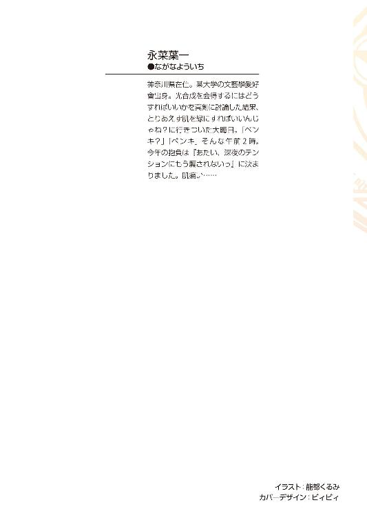
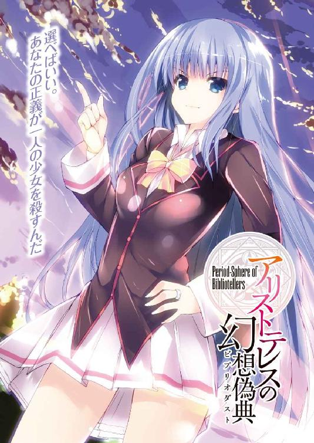
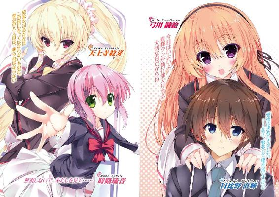
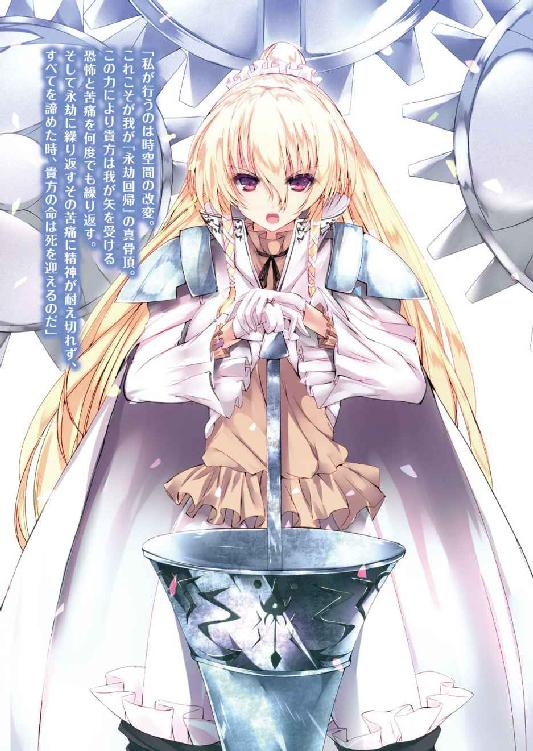
アリストテレスの幻想偽典
2．時空支配の歯車
永菜葉一

富士見ファンタジア文庫
本作品の全部または一部を無断で複製、転載、配信、送信したり、ホームページ上に転載することを禁止します。また、本作品の内容を無断で改変、改ざん等を行うことも禁止します。
本作品購入時にご承諾いただいた規約により、有償・無償にかかわらず本作品を第三者に譲渡することはできません。
本作品を示すサムネイルなどのイメージ画像は、再ダウンロード時に予告なく変更される場合があります。
本作品は縦書きでレイアウトされています。
また、ご覧になるリーディングシステムにより、表示の差が認められることがあります。
口絵・本文イラスト 能都くるみ
プロローグ
ツァラトゥストラという人物がいる。
ドイツの哲学者ニーチェが著した書物の登場人物だ。
ツァラトゥストラは何者にも屈さない強靭な意志を以てして、世界に蔓延してしまった古き価値観を壊そうとした。
ツァラトゥストラとは言わば、破壊者なのだ。
だが同時にこの破壊者は己の限界をも熟知していた。古き価値観を掃討した後、それに代わる新しい指針になるのは自分ではない、と最初から理解していたのだ。
破壊者はいつか来たるべきその指針のことを、人を超越せし者──すなわち『超人』と表現する。
ツァラトゥストラの前には様々な苦難と苦痛が立ちはだかる。そして自らの破壊が世界に苦難と苦痛を与えることも知っている。けれど彼が歩みを止めることはない。
痛みは消えない。永遠に繰り返される痛みから逃げることは出来ない。
しかしだからこそ、それを受け入れる覚悟を宿すことが出来た時、ようやく人は超人への道を踏み出すことが出来るのだ。それを知る破壊者はゆえに歩みを止めない。
──その話を聞いた時、日比野直輝は胸中で首を傾げた。
直輝の知っている、幻想偽典『ツァラトゥストラはかく語りき』の保持者──生徒会執行部会長である天上寺紋芽は破壊者と言うよりは秩序の守り手たる人だったからだ。
その矛盾を指摘すると、彼女は苦々しく笑った。
終焉を司る禁忌の八人目──そう言われる自分へと破壊者が向ける眼差しのその意味をこの時の直輝はまだ何も知らずにいた。
一章 ─そして、禁忌は試される─
普通科一年四組の教室はいつも通りの喧騒で賑わっている。
部活へ行く準備やら街へ繰り出そうとする相談やら、その光景は平和そのものだ。
そんななかただ一人、若干の緊張を顔に浮かべながら直輝が帰り支度をしていると、その背中が景気よくバーンっと叩かれた。
「なーに暗い顔してんですかね、この御仁は！ 今から街に下りてラーメン食いに行くけど、直輝も行くっしょ？」
「あー、ごめん、俺はパスするよ」
「うえっ、なんでよ？ 直輝ってば、弓川先輩にフラれてよーやくまた付き合いよくなってきたと思ったら、社長、ひょっとしてもう次のコレが出来た感じッスか？ そうなんスか!?」
わざとらしく小指を立てて顔面を寄せてくるのは、クラスメートの木坂夏生だ。悪友のオーバーリアクションにげんなりしながら、直輝は首を振る。
「違うっての。っていうか、俺が織絵先輩にフラれたってその情報はどこからきたんだ？」
「俺発、俺拡散の学園ビックリ驚き新情報」
「お前発なのかよっ。適当なことを吹聴しないでくれ、頼むから」
「えー、だってよぅ......弓川先輩、もう直輝の部屋にいないじゃん？ 同棲までしといて出てったってなら、そりゃもうまわりは破局を期待するじゃん？」
「期待するなよ......」
学園の全男子憧れの的と呼ばれる二年の弓川織絵先輩がひょんなことから直輝の部屋で暮らしていたのは、先月の月末までのことだ。そうなるには色々と複雑な経緯があったのだが、一般人には言えない学園の裏側に起因する諸々の事態もなんとか落ち着き、今は先輩も元の女子寮に戻っている。
「んじゃ、とりあえず一つ屋根の下で暮らす間に赤裸々な男女の間違いがなかったのか、あっちゃったのか、それだけでも答えてみようぜ。ほら、恥ずかしがらずに！」
「ないってば。その間違いってのがあったとかもしも俺が言ったらどうなるんだ？」
「ショックのあまりお前をキルして俺もデスる。集団飛び降り騒ぎのあった大学部の大桟橋から二人で一緒にダイブだな」
「......夏生、真顔過ぎ。怖い怖い怖いから真顔で近寄ってくるな......っ！ っていうか、集団飛び降り騒ぎってなんだ、なんなんだ、ウチの学園は」
そもそも自分と織絵先輩はなんというか......現在、非常に名状し難い状態なのだ。この友人はそのことを知らないはずなのだが......なんとなく察した上で茶々を入れてきてるような気がして恐ろしい。
「ま、弓川先輩との諸々は今後も追及していくとして、だ。ほい、呪いの白い本の噂、新しいのがまた流れ始めてるぞ」
そう言って夏生が机の上に置いたのは、簡単なメモ書きだった。
「......ありがと、助かる」
「あんま役に立つかどうかは分かんないけどな」
直輝たちの通うこのリセリア学園の裏側には超常的な力を持った幻想偽典と呼ばれる本が存在する。
その幻想偽典を巡る事件の一つに直輝が巻き込まれ......というか、無謀にも自分から首を突っ込み、自身も七色に輝く幻想偽典『イデアの片翼』を手にしたのはしばらく前のことだ。
一般生徒たちは幻想偽典──略称、偽典の存在自体知りはしないのだが、その力ある書物が引き起こす超常的な事象は時として怪談のように噂となって広がっていく。実の妹である青柳雪乃が何がしかの偽典を原因として昏睡状態に陥っている直輝は、その手がかりとして生徒たちが噂する呪いの白い本──つまりは幻想偽典の情報を集めていた。
ちなみに夏生は幻想偽典に関する事柄を何も知らない。直輝の初陣でもある四月の事件の際には犯人である仮面の男の策謀に巻き込まれもしたのだが、特保と呼ばれる学園の組織の力でどうやらその記憶は抹消されているらしい。結局のところ、学園の情報通を自称するこの友人は直輝が必要としているようだからという理由で何も聞かずに協力してくれているのだ。
「とりあえずだな、今流れてる最新の噂は二つ。一つは謎の爆破騒ぎだ」
「爆破騒ぎ？ そんなの起こってたら学園中大騒ぎになってる気がするけど......」
「だからあくまで噂なんだよ。詳細はそのメモに書いてある。んでもう一つはこれまた微妙なんだけど、呪いの白い本に新色が出たそうな」
「新色？ 呪いの白い本なのに？」
「そ。まぁ、色の話は今までもちらほらあったんだけどな。赤とか橙とか」
「へぇ、そうなのか」
幻想偽典は歴史上の大著をベースとしている。保持者のいない状態では呪いの白い本という呼び名の通りに真っ白な本なのだが、一度大著に変化してしまえばそれこそ赤や青など個々の色をまとう。だから噂の一端に上がっていてもおかしくはないかもしれない。
「けどな、今度はすごいぞ？ なんと今の呪いの本のトレンドは七色らしいぜ」
「はい？ 七色......？」
「そう、その新たに現れた七色の本がこれから学園中を爆破しまくるんだってさ！」
「はあ!? そんなこと俺はしないよ!?」
「は？ 別に直輝がするなんて言ってないぞ？」
「あ、いやえーと......そ、そうだよな、うん」
七色に輝く幻想偽典は世界に極少数しかない。この学園に限っていえば、直輝のものも含めてたったの二冊だ。なので新たに現れた七色と言ったらもう自分のことに他ならないのだが。
......なんで俺が生徒たちの噂に上がってるんだ、と思いつつ、今回は雪乃の手がかりにはならなそうだ、と直輝は結論づける。
「ありがと、夏生。とりあえずこのメモもらってくよ。そろそろ時間だから、また明日」
「あらま、用事があるってのは本当だったのかよ。誰かと待ち合わせか？」
「ああ、うん。時計塔のところで織絵先輩と──」
立ち上がりながらなんの気なしに口にしてしまってから、己の失態に気づく。
ざわっ、と教室中の好奇の視線が一斉にこちらを向いた。みんな、いつの間にか聞き耳を立ててたらしい。
「......ほらな、直輝。結局、みんな超気になってんのよ。周囲に一切説明なく同棲始めて速攻止めた、学園一の美少女な先輩となんの変哲もない一男子生徒の恋の行方はどうなってんすか？」
「ノ、ノーコメントでっ」
カバンを手に取ると、直輝は脇目もふらず教室の外へ脱兎した。
＊ ＊ ＊
もうじき梅雨の訪れそうな薄雲の下を駆けていくと、織絵先輩はもう時計塔に到着していた。石畳と花壇に彩られた正面広場からこちらに手を振ってくれている。
赤みがかった緩いウェーブの髪に抜群のプロポーション、はっとするほどの美貌。夏生との会話を思い出すまでもなく、改めて織絵先輩は学園一の美少女だと思う。
「すみません、お待たせしちゃいましたか？」
「ううん、大丈夫。わたしも今きたとこだから。ん？ 直輝クン、どうかした？ なんか顔赤いよ？」
「あ、いえ......なんでもないです。たぶん走ってきたからだと思います」
なんか今の会話デートみたいだな......とか思ってしまったとは口が裂けても言えない。夏生とクラスのみんなのせいで変に意識してしまう。
「あ、ちょっとネクタイ曲がってるよ。動かないで、今直したげる」
「えっ、大丈夫です。自分で出来ますから！」
「いいからいいから、おねーさんに任せなさい♪ はい、ストップ。そのままキープね」
「す、すみません......」
押しの強さに流される形でネクタイを直してもらう。近づいた先輩の髪からふわりとシャンプーの匂いがして落ち着かない。知り合ってから多少時間は経ったものの、先輩のこういうナチュラルに距離が近い感じはいまだに慣れなかった。
「おー？ 直輝が動揺しておるぞ。効果は抜群のようじゃな！」
「メ、メフィさん!? からかわないで下さい、動揺なんてしてませんよっ」
茶々を入れるように先輩の胸ポケットからひょっこり顔を出したのは、小さな丸っこいヒヨコのメフィさんだ。このメフィさん、見た目は可愛らしいヒヨコだがその正体は織絵先輩の幻想偽典『ファウスト』の力の一部である。
「んー、なあに直輝クン、ひょっとして......わたしでえっちなこと考えちゃってる？」
「考えてません！ 飛躍し過ぎです！」
いきなり顔を寄せて上目遣いにそんなことを言われ、ボォと直輝の頬が熱くなる。すると先輩はクスクス笑いながら「はい、完成。身だしなみはちゃんとしとかなきゃね？」と言って、形の整ったネクタイにぽんと触れ、体を離した。
「ど、どもです......」
......ここ最近の先輩との関係はだいたいこんな感じである。以前に先輩からは一度告白らしきものを頂いているものの、その後いかんともし難い誤解によって色々こんがらがってしまったせいで、微妙な距離感が変わらぬまま、結局今の先輩が何をどう思っているのか直輝にはさっぱり分からない。夏生の言う男女の関係なんて程遠いのだ。
「さて、じゃあ心の準備はいいかな？ 今日はいよいよ直輝クンが執行部入りする大切な日だからね」
「はい、大丈夫です。覚悟は決めてきました。......若干、緊張して寝不足ですけど」
直してもらったネクタイと共に襟を正す気持ちで、直輝は目の前の時計塔を見上げる。
中央記念図書館と並んで学園で最も背の高い建築物であるこの時計塔は、織絵先輩の所属する生徒会執行部の専有施設だ。
一階と二階、そして地下部分は土台として広く造られていて、重要な行事の際にはセレモニーホールとしても使われるらしい。その土台から延びるのは鐘楼の設置された銀縁の尖塔。普段は使われていないがやはり行事の際には鐘を鳴らして時を告げる役目をする。
そしてその背後には尖塔の倍近い威容を見せつける、金縁で彩られた文字通りの時計塔がある。天高くそびえるその姿は確かな威厳を持って、直輝のことを睥睨していた。学園の裏と表で絶大な権力を誇る会長、そしてその生徒会執行部を象徴する建物──それがこの時計塔だ。
「俺が生徒会の執行部員になるのか......」
直輝は今日、織絵先輩の推薦と天上寺紋芽会長直々の招きによって、この時計塔を訪れた。用件は直輝の執行部加入である。
リセリア学園高等部の執行部員は会長の指名制だ。昨日今日に保持者になった直輝の執行部入りはかなりの異例らしいのだが、織絵先輩曰く前回の事件の功績が会長に認められたらしい。雪乃の昏睡の原因を探るためには、より多くの幻想偽典の情報を知ることが不可欠だ。生徒たちの噂ももちろん集めているが無論それは本命にはなりえない。蛇の道は蛇、幻想偽典の被害から学園の治安を守っている執行部への加入は、直輝にとっても願ってもない話である。
（それに俺は......）
ちらりと先輩の横顔を盗み見る。
「んー？ おねーさんをじっと見つめちゃって、どうしたのかな？」
「うわっ、なんで気づけるんですかっ。な、なんでもないです」
「そう硬くならなくていいよ。ちゃんと一緒にいてあげるから、なーんにも心配ないからね」
おいで、と言って先輩は先に歩き出す。見透かされてるのか、されてないのか......やっぱり先輩の心中を読めないまま、直輝もそのあとに続こうとして──、ふいにその視線がある一点で止まる。
（......？）
時計塔前の正面広場の奥、街路樹の陰に一人の少女が立っていた。高等部とはデザインの若干異なる中等部の制服に身を包んだ少女は、どこか遠くを見つめるような眼差しで空にそびえる時計塔を見つめている。時計塔は大学部・高等部・中等部の敷地にほぼ重なる位置にあるので中等部の生徒がいること自体に不思議はない。
ただ少女の浮かべている、今にも泣きそうな、それでいて何もかもに怒りを覚えているような表情と瞳がいやに気になった。
「あ......」
ふいに少女がこちらを向く。目が合うと、彼女はやはり泣きそうな顔で、しかし今度は明確な憎しみの込められた強い瞳で──笑いかけてきた。その唇が声を出さないまま、言葉の形を作る。
（......死んじゃえ？）
面識はないはずだ。少なくともこちらに少女と会った記憶はない。なのになぜそんなことを、と思うと同時、少女は身を翻して立ち並ぶ街路樹の奥へと消える。
「なんだったんだろう......？」
「直輝クーン、先に行っちゃうよ？」
「ぼさっとしてると置いていくぞ、直輝」
「あ、はいっ。すみません」
先輩たちからは死角になって今の少女は見えなかったらしい。訝しく思いながらも直輝は先輩の背中を小走りに追う。
＊ ＊ ＊
どこかの豪邸かと思うほどやたら高そうな絵画や壺の飾られた一階ロビーを抜け、ガラス張りの高速エレベーターに乗ってテラス兼展望台へと行き着き、そこからさらに螺旋階段を二階分上ったところにリセリア学園の生徒会室はあった。歩いた距離は微々たるものだが、普段使っている普通科校舎との格差というか、なんとも言い難い場違い感に当てられてすでに背中に嫌な汗が流れている。
「俺、今日はもう帰っていいですか......？ ここまで辿り着けただけでもう満足っていうか、正直すでにいっぱいいっぱいです」
「あはは、初めてきた人はだいたいそう言うよ。でもきっとすぐ慣れるから。こっからが本番だからね。さ、勇気を出して？」
軽くノックをしてから先輩が大扉を開ける。
まず目に入ってきたのは部屋の中央に位置する豪奢な執務机だ。そしてそれに付き従うように機能性重視のデスクが四つ、大扉側へと並んでいる。床には柔らかな毛皮の絨毯が敷き詰められ、天井にはキャンドル型のシャンデリアが釣り下がっていた。
その生徒会室には二人の生徒の姿がある。一人は碧眼のスレンダーな少女。彼女はまるで従士のように執務机の横でぴんと背筋を伸ばして立っている。
そしてその執務机に悠然と座っているのは、ここ執行部の長──天上寺紋芽会長だ。
背後の壁は一面ガラス張りになっていて、学園の全景が見て取れる。入り口からだと、まるで彼女がそこから望める学園のすべてを背負っているように見えた。
「あのっ、ええと本日はお招きに預かりまして、ありがとうござ──」
上擦りながら直輝が挨拶を口にし始めると、その途中ですっと会長が椅子から立ち上がった。そのまま迷いない足取りで大扉の方へと近づいてくる。
シュシュでまとめられたポニーテールの長い髪、背筋はぴっと正しく伸び、一歩進むごとに両耳の前から伸びる二束の髪が帯状の髪飾りを伴って左右に揺れる。
「え、あ、あの......っ」
無言の圧力に直輝は怯み、思わず後退しかけ──その頭を会長の手が乱暴にぐしゃぐしゃっと撫でた。鋭かったその表情がふいに爽やかな笑みに変わる。
「よくきましたね、一年生。招くのが遅くなって申し訳なかった。貴方の到来を私は一日千秋の思いで待ち望んでいましたよ」
「あ、ありがとうございます。俺もその、呼んで頂けてすごく光栄ですっ」
「ふふ、そう硬くなる必要はありません。楽にしなさい。若き者、無垢なる者は無垢であることこそが望ましい」
好意的な会長の言葉と手にひらに直輝の肩からふっと力が抜ける。
「ふ～ん、直輝クンって頭撫でられるのが好きなんだ。なんかすっごい嬉しそう」
「えっ、織絵先輩っ。いえ、これはその違います......っ」
横から向けられた先輩のジト目に別の意味で緊張が走る。だがその間も会長の手は楽しそうに直輝の頭をわしゃわしゃ撫でている。
「ふむ、これはなかなかに甘美な感触です。一家に一台御用達ですね」
「あああの会長っ、そろそろ手をどけて頂けると大変助かるんですが......っ！」
「ん、なぜです？ 私は快楽に忠実な人間だ。この愉悦を堪能し尽くすまで、私は自らの手を緩めるつもりなど一切ない」
「直輝ク～ン......？」
「え、ええええっ......」
「ふむ、直輝は意外に長生き出来んタイプじゃな」
年上の女性二人に挟まれて戸惑っていると、ふいに話の外から鋭い声が発せられた。
「会長閣下、お戯れはその辺りで。無礼者にそこまで好意を示す必要はないかと」
そう言って鋭く直輝を睨んできたのは、執務机の横にいた碧眼の少女だ。
ツーサイドアップの髪に切れ長な瞳。ブレザーの前は大きく開いている。シャツには女子のリボンの代わりに男子用のネクタイが下がっていて、それがスレンダーな彼女によく似合っていた。こちらも織絵先輩と会長に負けず劣らずの美しい少女だ。
「四月の際、その男はキルケゴールを成敗しようとした会長閣下に剣を向け、あろうことか斬りつけるまでに至りました。本来ならその時点で粛清されて然るべきのはず。ご命令さえ頂ければこの場で今すぐアタシが斬り捨てます」
「直輝クンに何かしようなんて、わたしが許さないよ、ロゼ」
ロゼと呼ばれた少女がその手に橙色に輝く幻想偽典を取り出した。同時、織絵先輩もその手に赤く輝く幻想偽典『ファウスト』を出現させる。
「よいのです、我が部下トロワ。私は我が前へ立つ者をこそ強く愛する者だ。私の力を前にしてなお牙を剥いたがゆえに私はこの一年生を気に入っている。ゆえに貴女が狼藉と言う一年生のかつての行動はすべて不問に処します」
「しかし、会長閣下......っ」
「貴女の忠義は快く思っている。だが、それが私の決定だ」
「......畏まりました。会長閣下がそう言われるのでしたら」
会長にトロワと呼ばれたロゼは不承不承に頷いた。トロワと言うのはおそらく会長が織絵先輩をファウストと呼ぶのと同じように、偽典に関連した呼称なのだろう。
ロゼが偽典をしまうと、まったくもうと呟いて織絵先輩も矛を収める。内心、ほっとして息をはくと、ロゼにじろりと睨まれた。......どうにも居心地が悪い。
「部下が失礼をしました。また本来ならば執行部全員で貴方を迎えたかったところなのですが、会長補佐のスノウと書記のアンネは明日に迫った総会の準備で外しています。ゆえに今日は会長の私、天上寺紋芽と会計のトロワ、そして貴方も知る副会長のファウストで迎えさせてもらいます」
「え？ あの......織絵先輩って、ふ、副会長だったんですか？」
「うん、そうだよ？ っていうか、直輝クン、今までそれ知らなかったの？」
「はい、まったく......す、すみません」
「直輝らしいと言えばらしいがな」
先輩が執行部員だということは知っていたが、まさか副会長なんて重職の人だとは。本当に色んな意味で雲の上の人だったんだ......と今更ながらに思う。
「ちなみに会長は三年生、わたしは知っての通り二年生ね。で、ロゼは直輝クンと同じ一年生だから」
「あ、そうなんですか」
「......だからってアンタと親しくするつもりはない。中等部の頃から執行部に関わってるアタシと昨日今日に保持者になったアンタじゃキャリアが違うのよ」
「そ、そうですか......」
冷たい視線に直輝がへこむと、さて、と仕切り直したのは会長だ。
「今日、貴方をここに呼んだ理由は二つ。一つは以前の事件で私の愛すべき部下であるファウストを救ってくれた礼です。ありがとう。私は貴方に心から感謝の念を抱いている」
「そんな改まってお礼を言われることじゃありません。俺が先輩に生きていてほしくてやったことですから」
かつて直輝は幻想偽典『ファウスト』に沈んだ織絵先輩を自らの『イデアの片翼』で引っ張り上げた。メフィさん曰く、相当に危険な賭けだったらしいのだが、それも自分で望んだことだ。ふと見ると、先輩が柔らかい眼差しでこちらを見ていた。気恥ずかしくなって直輝は視線をそらす。
「ふふ、可愛らしい。ファウストが肩入れしたのもなるほどと頷ける。それでは次の用件です。一年生、貴方の幻想偽典を現界してくれますか？」
「え、あ、はい」
二つ目の用件とは執行部入りの件だろう。偽典を現界することとどう関係するのかは分からないが、直輝は言われた通りに懐から媒体となる文庫本を取り出す。
「──偽訳再現、プラトン・『イデアの片翼』」
直輝の手の中に偽典が現界し、生徒会室が七色の光に満たされる。
会長がわずかに目を細め、ロゼが唇を噛み締める。織絵先輩はどこか誇らしげな顔だ。
幻想偽典が放つ色は基本的に単色である。それらは人を起点として作用する『人越を規定せし書』と呼ばれる。だが世界には極少数、世界そのものを改変するポテンシャルを秘めた偽典が存在する。それが七色の光を放つ『世界を規定せし書』と言われる幻想偽典だ。
そして直輝のこの『イデアの片翼』は、世界に七冊しかないと言われていた『世界を規定せし書』のその八冊目に当たる。
「確かたる瞬間の光、拝見した。では、こちらもお見せしましょう」
直輝と同様に媒体を取り出し、会長も言葉を放つ。
「──偽訳再現、ニーチェ・『ツァラトゥストラはかく語りき』」
その手に重厚な厚さと威厳を持ったハードカバー大の革張りの本が現れる。放たれる光は『イデアの片翼』と同じ七色。両者の幻想偽典は共鳴するように一瞬だけ光を強めた。
「ふむ、二つの『世界を規定せし書』が居並ぶ様......まさに壮観じゃな」
メフィさんの呟きに直輝は少し気後れしながら顎を引く。『イデアの片翼』と『ツァラトゥストラ』は互いに『世界を規定せし書』である。しかし自分が目の前の強大な人と並べるとはとてもではないが思えなかった。
「一年生、貴方は何を求めて今日この生徒会室を訪れましたか？」
輝く光の中でそう問われ、直輝は織絵先輩の方へと一瞬目を向けた。たぶんこれはきちんと答えなければいけない問いだ。
「織絵先輩のようになりたいからです。大切なものを守る、守りきれると──そう言える力と自信がほしいから。だから俺はここにきました」
「直輝クン......」
「おお、織絵がトキめいたぞ。やるな、直輝！」
「うっさい、ばかメフィっ。茶化さないのっ」
「なるほど、貴方の意志はよく分かりました。己の生き様に信念を掲げる者を私は高く評価する。しかし、残念です。遺憾ながら──その望みはここで潰える」
次の瞬間、能力を行使する状態である偽訳解放を成していないはずの会長の手に一振りの槍が出現した。え、という直輝の呟きと同時に風を切って突き出される巨大な突撃槍。その矛先が狙いを定めているのは──『イデアの片翼』。
「直輝クン、避けて！」
先輩に腕を引っ張られ、後ろへ倒れた。槍の矛先は直輝の偽典からわずかに逸れる。しかし同心円状に発生した衝撃波が直輝と織絵を壁際まで吹っ飛ばす。直線上にあった大扉は粉々に爆砕して破片が辺りに散らばった。
「い、一体何が......」
「会長の槍よ。上位の保持者になると偽訳解放なしでも武具を簡易顕現出来るの。それより『イデアの片翼』を一度しまって！ 偽典の状態で破壊された幻想偽典は記述が砕けて二度と現界出来なくなるわ！」
先輩にそう言われ、直輝は転がった体勢のまま慌てて偽典を文庫本へと戻す。綺麗に受け身を取っていた先輩は立ち上がって会長へ強い非難の視線を向けた。
「どういうことですか、会長!? こんなことするなんて、わたしは聞いてません！」
「寸前で身を躱させましたか。やりますね、ファウスト。今のは称賛に値する動きです」
「質問に答えて下さい！ 会長は直輝クンを執行部に迎え入れるつもりだったんじゃないんですか？」
「なるほど、貴女はそう捉えていたのですか。であれば、残念ながらそれは誤解です。私が今日彼を招いた理由の一つは先日の礼を言うこと。そしてもう一つは──彼の持つ八番目の幻想偽典をこの世から抹消することだ」
「え、俺の『イデアの片翼』を消すって......っ。だってさっきはロゼ──さんを止めてくれたじゃないですか......っ」
直輝が視線を向けると、ロゼにもわずかに動揺が見て取れた。彼女にとっても会長のこの行動は予想外だったようだ。
「私がトロワを止めたのは当然のことだ。貴方が私に立ち向かったことを私は高く評価している。ゆえにそれを旨とする処罰をトロワが行おうとすれば、それを止めるのは道理というもの。誤解があるなら解きましょう。私が今、貴方に槍を向けるのはそれとはまったく別の理によるものなのだ」
「それは......直輝クンが終焉を司る禁忌の八人目だからですか？」
「終焉を司る存在はこの世に在ってはならないものだ。禁忌の八人目は、葬らねばならない」
「禁忌の八人目......？」
今まで何度か耳にしたことはある気がするが、直輝はその言葉の意味をちゃんと理解したことはなかった。八人目というのは文字通り『世界を規定せし書』を手にした保持者の八人目ということだろう。だが、禁忌とはどういうことなのか。
直輝へと口を開いたのは意外なことに碧眼の少女だった。
「人が幻想偽典という力を手に入れた時代からずっと『世界を規定せし書』が同時に存在するのは七冊までとされてきたわ。歴史をひも解いても、その絶対原則が破れたことは一度もない。そして古来から特殊環境保持委員会──特保が所有する文献、また過去に預言書の幻想偽典を引き当てた保持者たちが残した写本のいずれもが示してる。『世界を規定せし書』の八冊目、それはこの世に終焉を呼び込む忌むべきものだ、って」
「終焉を呼び込む？ それって一体......」
「つまりは八人目を生かしておくのは危険だってこと」
「ロゼ、待ちなさい。それは恣意的な解釈でしょ。直輝クン、八人目が終焉を呼び込むってことの意味は現在でも明確になってないの。ある者はこの世のすべての偽典が消えるのだと言い、ある者は人類そのものの滅亡を指してるんだって言う。つまり八人目によってもたらされる終焉がなんなのかは結局誰にも分かっていない」
「そ、そんな曖昧な理由で偽典を消すって言われても困ります！」
「わたしもそう思う。会長、カビの生えたような過去の理を持ち出されても納得なんて出来ません」
先輩の非難になぜか会長は言葉を返さなかった。代わりにロゼが語調を強くして口を開く。完全に動揺が抜けた口調で彼女は直輝を睨む。
「じゃあ、現在のことならどう？ 体育棟で起こった爆破騒ぎ、犯人は七色の光を持つ保持者だって話じゃない」
「え......っ」
それは夏生から渡されたメモにもあった学園の噂話だ。執行部のロゼからその話が出るということは爆破騒ぎはただの噂ではなく、実際にそれに準じる事態が起きているということになる。だが、もちろん直輝は爆破騒ぎなど起こしていない。
「違う！ 俺はそんなことしてません！」
「生徒たちの噂話の多くは学園の保持者たちが持ってる情報が元になってるのよ。だから爆破騒ぎの犯人──通称『幻霧の爆弾魔』がアンタだって確率は高い。そもそも七色の偽典を持つ保持者なんて他にはいないもの。違う？」
「そ、それは......でも本当に俺はそんなことしてないんです！」
「どちらにしろ」
会話を遮るようにして、大振りの突撃槍がこちらを向いた。
「貴方が八番目の『世界を規定せし書』を有していることに変わりはない。終焉を司る禁忌の八人目。その脅威を取り除くことは『世界を規定せし書』を持つ七人、『最果ての七柱』の一柱としての私の責務」
「そんな......っ」
「幻想偽典を差し出しなさい。八番目の偽典さえ抹消すれば、命までは取りません」
強大な威圧感を会長から感じ、直輝の体が竦み上がる。
たった一歩。たった一歩を会長が踏み出した瞬間に、全身が総毛立った。極度の緊迫が空気を鉛に変える。息が出来ない。
何も出来ないまま巨大な槍がこちらを向き、そして──。
その瞬間、彼方で起きた爆発によって、ズン......ッと地面が揺れた。
「な、なんだ......っ!?」
ガラス張りの壁から見えたのは、大学部の方から上がる煙と爆炎。声を挙げたのは織絵先輩だ。
「まさか、例の爆破事件......っ!?」
「ふむ、どうやら爆破は一年生とは別件だったようだ。トロワ、急行して状況を──」
その瞬間、先輩が直輝の手を取った。
「会長、わたしが行きます！ 直輝クン、ついてきて！」
「え......っ、織絵先輩!? 待って下さい」
会長やロゼが止める間もなく、二人は生徒会室を飛び出した。
＊ ＊ ＊
到着して最初に聞こえたのは、歌だった。
確かに聞き覚えはあるのに、それがなんの歌だったか直輝はとっさに思い出せない。
場所は大学部にある野外音楽堂。そこはギリシャの神殿を模して建設された施設で、吹き抜けの空の下には白を基調とした舞台と観覧席が扇状に広がっている......はずだった。
「酷い、なんて有様だ......っ」
舞台は今や無残な瓦礫と化し、観覧席周辺には朦々と黒煙が立ち上っている。幸運にもどこの団体も使用していなかったらしく、辺りに怪我人の姿はない。
「直輝クン、注意して。──いるよ」
「え......っ」
「──上っ！ 避けて！」
織絵先輩の声で反射的に飛び退いた。するとつい一瞬前までいた場所に何か色のついた雫のようなものが降り注ぎ──その瞬間、爆発が巻き起こった。
「な......っ!?」
もんどり打って転がりながら、今度はなんとか受け身を取る。離れた場所で織絵先輩も体勢を立て直しているのが見えた。そして、二人の間に響くのは第三の声。
「おー？ 危ない危ない！ 興醒めだからただの挨拶代わり程度で死んじゃったりしないで下さいよぅ？ それじゃあまりに張り合いがない」
──黒煙を払う風と共になびいたのは、淡く光の粒子をまとう藍色の髪。
「いやはや爆破もまだ二回目だっていうのにもうお出ましなんて、さすがは執行部さんってトコですかねぇ～。ハローハロー、ご機嫌いかが？ 本日の天気は荒天、降り注ぐ火薬の雨に要注意ですよぉ？」
高等部の制服を着たその女は唯一残っていた音楽堂の柱の上に座っていた。壮麗な装飾が施された柱を無遠慮に踵で蹴りながら、ぶらぶらと足を投げ出している。
その唇は聞き覚えのある歌を紡ぐ。掲げられた両手が指揮するように振られる度、細い指先から藍色の雫が零れ落ち、バチバチと火花を散らしていた。
「あなたがこの爆破事件の犯人──幻霧の爆弾魔ね？」
「ああ、ハイハイ、そんな呼ばれ方してるんでしたっけ？ でもその通り名って好きくないんですよねぇ。出来たら正式な名称で呼んでくれません？」
「だったら自分から名乗ってくれる？ あなたはどこの誰で、なんの偽典の保持者なのかしら？」
「いやいや横着せずに探り当ててほしいんですよねぇ。さて、あたしは誰でしょう？ ちなみにあたしはお姉さんが誰か知ってますよぅ？ 有名ですもんね。生徒会執行部の副会長、幻想偽典『ファウスト』を繰る不死の魔女──弓川織絵さん。あ、もう不死じゃないんでしたっけ？」
「目的は何？」
「幻想偽典の保持者の目的なんて決まってるじゃないですか。自分の偽典の記述を増やすこと。それ以外に一体何があるって言うんです？」
保持者が自らの幻想偽典への理解を深めるほど、偽典は白紙のページにその記述を増やしていく。そしてその記述が最終ページにまで至った時、『終止符の地平』と呼ばれる奇跡によって偽典は保持者の願いを叶える。ゆえに自らの偽典の記述を増やすことはすべての保持者にとって共通の目的だ。
「どうすれば偽典の中身を理解することになるか、つまり記述を増やせるかってのは、それぞれの偽典によってまったく違ってくるでしょう？ あたしの場合はねぇ、気に入らないすべてに悪意をぶつけること！ それで記述が増えるんです、そのための爆破ってワケですね！」
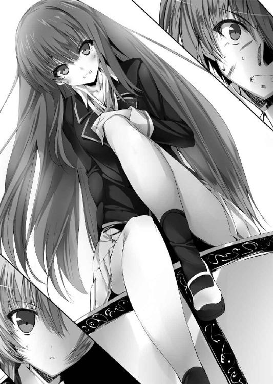
「悪意を振り撒いて記述を増やしていく......？ なんておぞましいんだ......っ」
「あら、酷いこと言いますねぇ、そちらのお兄さん。仕方ないじゃないですか、そういう偽典を引き当ててしまったのだから。あたしの精神がそういう方向性を持っていたのだから。ちなみにお兄さんは突如現れた規格外の大型ルーキー、日比野直輝さんですよね？ 執行部入りするんじゃないかって噂が結構ありましたけど、副会長のお姉さんと一緒にここにきたところを見ると本当だったんですねぇ。学園の保持者たちの間じゃ、今お兄さんの話題で持ちきりですよ？」
そう言う幻霧の爆弾魔の目から突然、すっ......と温度が消えた。
「ね、あなた......『世界を規定せし書』を引き当てたって本当なんですか？」
「だったら、なんなんだ？」
「見てみたいなって♪」
幻霧の爆弾魔が両手を掲げた。その右と左の中指には双方に象牙色の指輪がはまっている。きらきらと輝くのはリング中央の大きな貴石だ。一つ奇妙なことがあるとすれば、通常は手の甲の側へついているはずの貴石がなぜか手のひらの側についていること。
「右手には精気を、左手には光彩を。堅牢なる我らの檻は一つとなりてすべては儚き朝霧の如く──」
幻霧の爆弾魔が両の手を合わせると指輪同士がぶつかってキンッと澄んだ音を立てた。
大仰な仕草で両手が開かれ、粉々になった貴石が藍色の霧のように辺りに広がる。
「『煉獄の霧雨』」
その言葉に呼応して霧は雨へと変わり、真下の直輝へ向かって降り注ぐ。
「な......っ!?」
悪寒を感じて、最短の速度で偽訳解放。結晶の剣──オルガノンを偽典から引き抜いて回避に走る。同時、一足先に偽訳解放していた先輩が『ファウスト』の炎で直輝へ降り注ぐ雫を防いだ。だが極小の粒のすべてをフォローはしきれない。藍色の雫が地面に触れると同時、直輝の周囲が紅蓮の爆発によって捲れ上がる。
「がぁぁぁっ!?」
「直輝クン!?」
直撃こそしなかったものの、衝撃と爆風に煽られて吹き飛ばされた。激しく視界が明滅し、結晶の剣を持った手が痙攣する。
同時、織絵先輩が幻霧の爆弾魔へ炎をまとって肉薄。しかし幻霧の爆弾魔が直輝へとさらに攻撃を加えようとする素振りを見せ、先輩がその直線上をフォローした隙をついて藍色の女は飛び退き、瓦礫の上へ着地した。完全に直輝が足手まといになっている。
「ハローハロー、ご機嫌いかが？ 意識はまだご健在？ 今のがあたしの爆破のメカニズムってやつですよ？ ちゃんと肌で感じちゃってくれました？ あたしの原典の主人公はなんちゃって医学博士っていうか、まんまマッドサイエンティストっていうか、極めてアレな方でして。その顕現たるあたしも薬品調合はお手のもの。ちょこっと改変も加わりまして、今のはニトログリセリンの雨ってとこですかね？ とーっても痺れるでしょう？」
「ぐっ、ふざけるな......っ」
「ふざけてなんてないですよ？ あたしは真摯に真剣に他人に悪意をぶつけるのが使命ですので。それにしても──ああっ、なんて綺麗な色。お兄さんは本当に『世界を規定せし書』の持ち主だったんですねぇ。ああっ、なんて──憎らしい！」
直輝のまとう七色の光を目にして、幻霧の爆弾魔は三日月のように嗤う。嗤いながら再び火薬の雨を周囲に振り撒く。爆散する瓦礫の音楽舞台。こちらに走り寄ってきた先輩に抱えられ、直輝はなんとか爆破の圏内から脱出する。
「すみません、先輩......っ」
「喋らないで、舌噛むよ！」
『次々くるぞ！ 足を止めるな！』
織絵先輩の口からメフィさんも叫ぶ。偽訳解放中、メフィさんは先輩の体に合一するのだ。その言葉通り、爆炎が背後から追ってきた。
「あたしはねぇ、その七色の光が羨ましくて羨ましくてしょうがないんですよ！ 幻想偽典の保持者なんてのは偽典を引き当てた瞬間からその性質が決まっちゃうでしょう？ 目の前にそびえる限界、カテゴライズされる自分の心。こうなったらもう嫌がらせするしかないじゃないですか。盛大に！ 仰々しくね！」
叫びながら幻霧の爆弾魔はさらに火薬の雨を降らせていく。藍色に輝く雫は陽の光を反射して、時折、七色に輝いて見えた。生徒たちの噂で犯人が七色をまとっていた理由はこれだったのだ。
「先輩、俺を置いていって下さい！ 先輩一人ならあいつに迫れるでしょう!?」
「ばかっ、そんなこと出来るわけないでしょ!? いくらキミでも怒るよ!?」
「ふうむ、新しい七色の人は愛されキャラみたいですねぇ。よし、分かりました！」
突然、幻霧の爆弾魔からの攻撃が止んだ。
「本当はね、会長さんへの嫌がらせのつもりだったんですよ。自分の記述を増やしながらジワジワと学園の施設を破壊してまわったりしてね。でも狙いを変更しちゃいましょう。最強無敵な会長さんよりもぽっと出で『世界を規定せし書』を手にしちゃったお兄さんの方がムカつきます。あなたに悪意をぶつけた方があたしの記述が増えそうだ」
「狙いを俺に......？ どういうことだ？」
「ゲームをしましょう！」
瓦礫の上に立つ爆弾魔は偽典の光に輝く髪を楽しげにかき上げた。
「あたしは記述を増やすためにこれからもドンドン色んなところを爆破します。お兄さんはそれを止めるためにめっちゃ頑張ってあたしを追いかけて下さい。見事、爆破を続けて『終止符の地平』に至れたらあたしの勝ち！ その前に止められたならお兄さんの勝ち！ どうです？ 楽しそうでしょ？」
「ふ、ふざけるな、イカれた保持者の相手をするのなんて、こっちはもうコリゴリなんだよ！」
「あらら、ひっどーい！ そういうこと言っちゃいます？ ロンリーハートなあたしは超傷つきましたよぉ。こりゃもう罰ゲームも用意しなきゃですよね！」
「罰ゲーム、だって？」
「自分が手にした偽典がどれだけ周囲にとって衝撃的だったか、お兄さんはもうちょっと気をつけた方がいいですよ？ 学園中の保持者があなたのことを知りたくて興味津々なんですから。モチあたしも超調べました！ たとえば、お兄さんにはどんなアキレス腱があるのかな、とか」
爆弾魔が嗤う。頬が裂けるほどの三日月の笑みで。
「妹さん、原因不明の眠り姫なんですよね？」
「──っ!?」
悪意の塊を脳髄に叩き込まれて、目の前が真っ赤になった。だが爆弾魔は直輝のその変化に気づかず、愉快そうに嘲笑を続ける。
「あたしが計画した爆破をお兄さんが止められなかったら、妹さんの寝ている女子寮を爆破します。もちろんズルして妹さんを移動させようとしても反則で女子寮を爆破します。ね？ これで俄然やる気が出てきたでしょ──おお!?」
「ふざっけんなぁぁぁ──ッ！」
「直輝クン!?」
思慮も思考も一切ない突進。踏み込んだ足が瓦礫を砕き、暴風の如き荒々しさでその身が爆弾魔に襲い掛かる。慌てた幻霧の爆弾魔が跳躍。紙一重で避けられた直輝のオルガノンは崩れかけていた舞台をゴオンッとさらに扇状にめり込ませた。
「な、なんてハチャメチャな動きするんですか、まったく！ っていうか、今の刃じゃなくて剣の腹だったでしょ？ どんだけ我を忘れてるのかって話ですよ。あー、危ない危ないっ。ひょっとして、あたしよりよっぽど危険人物の素質あるんじゃないですか？」
「うるさいッ！ 雪乃を襲うだって？ やれるモンならやってみろよ!? お前は絶対この場から生きて帰さないぞ!?」
「ちょ、怖っ。完全に悪者のセリフでしょ、それ？ まったく執行部って本当にまともな人がいないんですから。まー、あたしも女ですし？ そんなに熱烈なラブコールを頂いたら悪い気はしないって言うか、どうしてもって言うならもう一戦くらいお付き合いをしても──」
半笑いだった幻霧の爆弾魔の表情がそこでふいに真顔になった。獣のような目つきで爆弾魔を睨む直輝もぴくりと反応する。
風向きが変わった。
本能が逃げろ、と叫んだ。だがもう遅い。つい先ほど間近で受けた震えるほどの威圧感がふいに現れ、その場の空気を席巻した。
「──ほう、戦闘ですか。宜しい、私も混ぜなさい。良い戦争はあらゆる目的を神聖にするものだ！」
嬉々とした声が響いたその瞬間、七色に輝く槍が直輝と幻霧の爆弾魔の中間地点に突き刺さった。途端、炸裂するのはこの場の誰をも凌駕する圧倒的な破壊。
「「な──っ!?」」
衝撃が一瞬で辺りを包み込み、敵も味方も関係なくありとあらゆる者を吹き飛ばす。
「がぁぁぁっ!?」
巻き上がった土砂に巻き込まれ、直輝は悲鳴を挙げて遥か背後にあった瓦礫に衝突。後方にいた織絵先輩が慌てて駆け寄ってくる。
「直輝クン、大丈夫!? しっかりして！」
「大丈夫、です......なんとか。──なっ、これは......っ!?」
つい先ほどまでいた場所に巨大なクレーターが出来ていた。幻霧の爆弾魔の『煉獄の霧雨』は目に映るすべてを吹き飛ばすが、今放たれた槍のおそらく名すらない一撃はその比ではない。目に映るものはおろかその下の地面まで抉り取るように何もかもを消し飛ばしている。
その大破壊を行った人物は、陥没した大地の中心で突き刺さった槍の柄に悠然と手を置いていた。
シュシュでまとめられた長い髪を風に舞わせ、涼しげな表情でそこに立っているのは天上寺紋芽会長。リセリア学園生徒会執行部が誇る、文字通りの最強。
「──さあ、躍り掛かってきなさい！ 祈る暇は与えません。なぜなら祈りとは恥辱だ！ 苛烈なる者たちよ、汝らは己が意志のみを然りとして、私に挑み掛かるがいい！」
完全に臨戦態勢の会長に眉を立てて水を差したのは、織絵先輩だった。
「会長っ、やり過ぎです！ 何を考えてるんですか!?」
「ふむ？ 問題ありませんよ、ファウスト。音楽堂の外周でトロワに人払いをさせています。この程度では外部に騒ぎは漏れません」
「そういう意味じゃありません！ まったく、いつもいつも無茶ばっかりして、少しは自重することを覚えて下さい！」
「むぅ......よく分からないが叱られてしまった。私は叱られるとシュンとなる気質を持っている。哀しいまでに気持ちが沈んでしまった。一体、どうしてくれるのだ？」
会長が責任転嫁する子供のような視線を向ける先には、荒く息をはく爆弾魔の姿があった。会長の一撃によるダメージかと思われたが、それだけにしては様子がおかしい。その両手の指輪にはまった貴石がジジ、ジジ......とまるで光が漏れ出すように帯電している。
「色々と参っちゃいますね......そろそろ時間切れか。ま、『終止符の地平』に至る前に会長さんとやり合うつもりなんてないから、この辺が引き際でちょうどいいですけど」
貴石が帯電する両手を幻霧の爆弾魔がそろりと掲げた。
「会長っ、逃げる気です！ 捕らえて下さいっ」
看破した織絵先輩がとっさに叫ぶ。だが会長は「ふむ」と別の方向に目を向け、動かない。その視線の先にいるのは傷だらけのまま飛び出した直輝だ。
「逃がすかァッ、待て、爆弾魔ぁぁぁッ！」
振り下ろしたオルガノンが七色の光を乱反射させて、光の軌跡を放つ。
「ふふ、ざんねーん♪ ハイドアンドシークこそがあたしの真骨頂なので逃げの一手に専念したあたしは誰も捕まえられませんよぉ？」
藍色の光が弾けて粉塵が巻き上がる。直輝の光の軌跡で煙が斬り裂かれた時には、すでに幻霧の爆弾魔の姿は消えていた。そして反響する声だけが直輝を嘲笑うように辺りに響く。
「ではでは、ごきげんよう！ ゲームを楽しみましょうね、お兄さん！」
その声が粉塵の舞う空気に消えると、オルガノンで闇雲に瓦礫を斬りつけて直輝は呻いた。
「ちくしょう......っ、何がゲームだ!? 雪乃を人質にするなんて、ふざけるな......っ」
「会長っ、なんで幻霧の爆弾魔を捕まえてくれなかったんですか!?」
「いやなに、一年生の単騎での主能力を見ておこうと思ったのだ。剣から放たれた今の斬撃がそれですね。言うなれば『光の軌跡』と言ったところか。オルガノンの銘らしい能力だ」
「そんなことどうでもいいですっ。どうするんですか、犯人取り逃しちゃって！」
「確かにそれも憂慮すべき懸案事項ですが、ファウスト、私はそれよりも貴女がどさくさ紛れに誤魔化そうとした先の案件をこそ重要だと考える」
「......っ、それは......」
先輩が言葉を詰まらせ、会長の視線がこちらを向く。その眼差しを受け止める直輝には先ほどまでのような怯えはない。戦力差による焦りはある。だが覚悟は決まっていた。
「......会長さん、申し訳ないんですけど、俺は何があっても『イデアの片翼』を手放せません。たとえあなたを斬ることになっても、俺はこいつを失うわけにはいかない。少なくとも、あの幻霧の爆弾魔を叩き斬るまでは......っ」
「ふむ、先ほどの犯人との間で交わしたゲームの約束ですか。確かに幻想偽典なしでは妹を守ることもままならないでしょう」
どうやら会長は先ほどの幻霧の爆弾魔との会話を聞いていたらしい。人が悪いにも程があるが、それならそれで話が早い。
「私を斬ってでも、とは面白い」
直輝と会長の間に緊張が走る。その間に割って入ったのは、織絵先輩だった。あえて偽訳解放を解除して、なんの防御力も持たない生身のまま先輩は二人の直線上に立った。
「待って下さい、会長！ 禁忌の八人目は終焉を司る──その預言は保持者なら誰でも一度は聞いたことがあります。でも、わたしは直輝クンがそんな恐ろしい存在だなんて思えない！」
精一杯の誠意を込めた視線で先輩は会長を見つめる。
「彼はわたしを救ってくれました。今のわたしがあるのは、あの日道を指し示してくれた会長と、そして今そばにいてくれる直輝クンのおかげです。預言が言う終焉が何なのかは誰にも分からない。でも、直輝クンの描く未来は決して間違ったものではないはず。わたしはそう思うんです！」
「それはただの感傷だ。ファウスト、執行部員である貴女が己のワガママで世界に終焉の可能性を残すつもりですか？」
「そ、それは......っ」
唇を噛み締める先輩に代わって口を開いたのは、合一が解けてヒヨコの姿に戻ったメフィさんだった。
「ならば妾も問おう。......紋芽、お前はあえて一つの事実から目を背けているな？」
「この私が目を背ける？ 我が友メフィよ、それは如何なる意図で口にした言葉ですか？ 口軽く撫でただけの空虚な言葉であるのなら、如何な貴女であっても我が槍と矢の的となることを逃れられぬと知りなさい」
「直輝の『イデアの片翼』の著者はプラトンだ」
ぴくり、と会長の眉が上がった。
「ただの八人目なら待つのは終焉かもしれん。しかし直輝にはもう一つ、プラトンの可能性がある。報告はすでに織絵がしたはずだ。直輝はプラトンに宿ったイデアの力で我が幻想偽典『ファウスト』の運命を変えたのだ。ゆえにたとえ禁忌と預言されていようとも、直輝ならばその事実を越えて、いつかは──紋芽、お前すら越えるかもしれん」
「この一年生が私を超越すると？」
「そうだ。妾は思うのだ。ひょっとすると、この直輝こそがお前の待ち望んだ『超人』かもしれぬ、と」
「────」
会長の表情が変わった。真っ直ぐな視線が射貫くように直輝を見つめる。二人の話していることの意味は分からない。だが、おそらくここが分水嶺なのだと直感し、直輝はその視線を受け止めた。オルガノンを握る手のひらにじっとりと汗が滲む。
やがて、会長にしては珍しい、どこか自嘲するような笑みがその口の端に浮かんだ。
「......いいでしょう。メフィ、貴女は私の『ツァラトゥストラ』と同じく『瞬間』を基点とする幻想偽典『ファウスト』の化身だ。なればただ一度だけ、私は饒舌なる悪魔の口車に乗りましょう」
会長の手からその槍が光となって霧散した。
「聞いての通りです。一年生、貴方に猶予を与えましょう。幻霧の爆弾魔の一件は貴方に一任する。犯人が仕掛けたゲームとやらに勝利し、その中でさらにメフィの言う私を超越する可能性とやらを我が前に示してみせなさい」
「......分かりました。幻霧の爆弾魔を斬れるなら、俺に文句はありません」
「可能性を示すことが叶わぬ時は当然、我が全力を以て貴方の幻想偽典を焼き払う。メフィ、ファウストもそれで異存はありませんね？」
「......はい。大丈夫です、直輝クンとわたしならどんな可能性にだって必ず辿り着きますから」
「それはなりません。貴女は今回、不干渉を貫きなさい」
「え、でも......っ」
「一年生が可能性を示すには、貴女は保護者たり過ぎる。それに貴女には副会長として来たる連合総会の準備もある。総会が学園の保持者たちにとってただの学園行事でないことは貴女も承知のはずだ」
「でも、直輝クンたった一人で犯人を追うなんて無茶です！ 彼はついこないだ保持者になったばかりなんですよ!?」
「織絵、落ち着け。紋芽もこれが最大の譲歩だ」
「だってメフィ、さっきの幻霧の爆弾魔の戦い方見たでしょ!? 近距離主体の直輝クン一人じゃいくらなんでも相性が悪すぎる！」
「大丈夫です、先輩。大丈夫ですから」
会長に食って掛かろうとする先輩の手を取って直輝は言った。
「俺一人でもなんとかやってみせます。大丈夫です、俺だってあれから先輩に訓練を続けてもらってるんです。あんなふざけた爆弾魔なんてすぐに捕まえてみせます」
「直輝クン......」
「話はまとまりましたね。それでは、貴方の健闘を祈っていますよ、一年生」
「会長、一つだけ」
「まだ何か？」
背を向けた会長を呼び止め、返ってきた剣呑な声に身が竦みそうになりつつ、しかし直輝はきっぱりと告げる。
「メフィさんはもう『ファウストの悪魔』じゃない。訂正して下さい」
「直輝、お前......」
「......ふ、それは失礼した。謝罪します、我が友よ」
会長が立ち去り、直輝は偽訳解放を解除する。
幻想偽典の保持者たちが戦う際に張られる共鳴結界が消え、自動修復が始まり、野外音楽堂が元の姿を取り戻していく。
「ごめん、ごめんね。直輝クンが執行部の仲間入り出来ると思ってたのに、まさかこんなことになっちゃうなんて......」
「先輩のせいじゃないです。安心して下さい。こんな程度の逆境、俺一人で軽く乗り越えてみせます」
直輝は無理してなんとか笑みを形作る。大丈夫、なんとかなる。絶対なんとかしてみせる。
しばらくして野外音楽堂の修復が終了した。だがただ一か所、最初にあの藍色の女が腰掛けていた柱に何かで彫り込んだような傷が残っていた。それはおそらくは犯人からの犯行メッセージ。
それを見た直輝は幻霧の爆弾魔が口ずさんでいた歌がなんだったかということに思い至る。壮麗な装飾の施された白い柱に無残な傷痕で記されたその歌は、
──London Bridge is broken down.
二章 ─ただ雨音を追って─
織絵先輩と別れた直輝はその足で一年四組の教室へと戻ってきていた。
とにかく一度落ち着いて今後のことを考えなくてはならない。誰もいない教室、窓側一番後ろの席で直輝は自分の顔を手のひらで覆った。
「落ち着け、とにかく落ち着くんだ」
嘆いても仕方ないのは分かっている。しかし重苦しい息は口から漏れた。織絵先輩の前ではなんとか体面を保てたが、それも虚勢だった。
「とにかく俺は雪乃を守る。幻霧の爆弾魔を見つけて、叩き斬って止める。その上で会長も納得させて、『イデアの片翼』も手放さない」
偽典が関わっていると思われる雪乃の昏睡の原因を突き止めるためには、幻想偽典を失うわけにはいかない。
会長の提示した条件──どうすれば『会長を超越する可能性を示す』ことになるのかは分からないが、それも考えてなくてはいけない。単純な戦闘力では正直、到底敵わないだろう。直輝単体での攻撃方法はオルガノンでの接近戦と、会長が光の軌跡と名付けた斬撃だけだ。槍の一撃だけでクレーターを作るような会長とは比べるべくもない。
「終焉を司る禁忌の八人目、か......。なんなんだよ、それ......」
もしも本当に自分が世界を滅ぼしてしまうような存在だったら......、そんな想像が一瞬過ぎりかけて直輝は慌てて考えるのをやめた。今、立ち止まってしまったら、きっともう走れない。
「とりあえず、今は幻霧の爆弾魔を見つけて止めることに集中しよう。何よりも雪乃の安全を取り戻すことが先決だ」
となれば、まずは情報を整理しなくてはならない。直輝は傍らに置いていたクリアファイルを手に取る。
そのファイルには執行部がまとめた今回の幻霧の爆弾魔の騒動における一連の報告書が入っている。あくまでフェアに、ということで織絵先輩の協力を止めた代わりにと会長が融通してきたものだ。
「今日のを含めて幻霧の爆弾魔は二度、爆破騒ぎを起こしている。最初の犯行は二日前、場所は......体育棟の競泳プール」
当時、競泳プールは水泳部が使用していたらしい。放課後、部活動の時間が過ぎ、後片付けを終えた生徒たちが外に出ようとしたところで、それは起きた。
突然の爆発。生徒たちの目撃情報によると爆発したのはプール天井の梁の部分だったらしい。慌てた生徒たちは全員で教師を呼びに走った。爆発の音と震動は辺りに響いていたので何事かと駆けつけた教師とすぐに合流でき、生徒たちは再びプールへ戻る。
だが、ここで再び異変が生じた。
爆発の跡が何一つ残っていなかったのだ。大慌てでやってきた生徒たちと教師が見たのは、爆発など起きず、天井も傷一つ付いていない、まったくいつも通りのプールの姿だった。
確かにこれならば大騒ぎにはならず、呪いの白い本の噂になるだろう。
爆発の直前にはきらきらと七色に光を反射する雫が目撃されていたらしい。また、その雫と共に辺りには例の歌声が響き渡っていて、呪いの白い本の噂として広まるには打ってつけだったようだ。
『幻霧の爆弾魔』という通り名は、謎の歌声と爆発の痕跡が霧の中の幻のように跡形もなく消え去ったことが相まって生まれたものらしい。
爆発の痕跡がすべて消え去ってしまう、怪奇現象。それは一見すると確かに不可思議極まりないものだったが、すでにそういった異常を呑み込んで生きている直輝には事のからくりが見て取れた。
「共鳴結界、だな」
この学園の中心、地下大聖堂にはすべての幻想偽典の源であるアリストテレスという存在がいる。保持者が偽典を使う際にはそのアリストテレスと共鳴して、辺り一帯に建築物などの自動修復を行う結界が張られるのだ。そして共鳴結界は保持者が偽典を解除すると同時に修復を開始する。つまりは、
「あの爆弾魔が偽典の力でプールの爆破を行う。生徒たちが慌てて飛び出していった後、偽典を解除して共鳴結界が発動。自動修復が行われて、生徒たちが戻ってきた時にはすべて元通り。一連の騒ぎは謎の怪奇現象として、ただの噂になる......って寸法か」
なぜこんなまわりくどいやり方をするのかが、少し気になった。幻想偽典のことは一般人には秘密とされており、確かに保持者たちは基本的にその活動を秘匿しようとする。
四月の際には直輝もまだ知らなかったが、もしも偽典のことを公にしてしまった場合、程度にもよるがその保持者は幻想偽典を管理している特殊環境保持委員会によって偽典を剥奪されてしまうらしい。だがもちろんそれはあくまで原則。公共の電波で偽典の存在を声高に叫ぶ、などのあからさまな行為でもなければ大概の場合、特保は一般人の記憶操作という形で隠蔽に協力する。直輝の友人の夏生などがいい例だ。
ゆえに悪意をぶつけると言い放ったあの爆弾魔ならば、もっと雑な方法で事件を起こしていそうな気がした。たとえば、人目など気にせず所構わず爆破しまくる、などだ。
そこまで考えて背筋がぞっとする。共鳴結界で建築物は修復されても、人の傷は癒されない。今日の野外音楽堂もそうだが、あの爆弾魔が騒ぎを起こして生徒たちに死傷者が出ていないのが奇跡に思える。
「一秒でも早くなんとかしなくちゃいけないんだ......」
幻霧の爆弾魔は今日、野外音楽堂で二回目の爆破騒ぎを起こした。その言葉通りならば、奴の持つ偽典の記述が完遂されるまでこの爆破は続くはずだ。そして、
「......最後は雪乃が狙われる」
考えるだけで神経が焼き切れそうだ。直輝が奴を捕まえるか、奴が記述を完遂させるかの、ゲーム。けれど、こちらも待つだけではいられない。
直輝はすでに幻霧の爆弾魔の顔を見ている。ならばそこから辿れるはずなのだ。
制服のポケットから携帯を取り出すと、直輝は番号を選んで通話ボタンを押した。
『......んー？ 直輝か？ なんだよ、ラーメンならもうとっくに食っちまったぜー？』
掛けた相手は学園の情報通、木坂夏生だ。直輝は手短に探している人物がいることを説明し、協力を仰ぐ。
『なんか弓川先輩と初めて会った時と似たような話だなぁ。ちょっ、直輝大明神、まさかまさかのひょっとしてお前さん、そのままハーレムでも構築しようって腹ですか!? そうなんですか!?』
「......馬鹿なこと言わないでくれ。頭痛がしてくる」
誰が好き好んで爆弾魔と仲良しになりたいなんて思うというのか。まあ、夏生にはその辺りの事情は話せないのだが。
『でもなぁ、顔は分かってるからなんとかしてくれ、って言われてもさすがになんとも出来んぜよ。高等部から全員シラミつぶしってなるとかなりの人数だぜ？ となると......やっぱここは教師陣に頼むしかないんじゃね？ 確か職員室に生徒たちのデータベースが顔写真付きであるはずだ。時間は掛かるだろうけど、それを見るのがたぶん一番早い』
「......そっか、餅は餅屋。生徒のことなら先生か」
夏生に礼を言って通話を切る。普通なら個人情報としてまず見せてはもらえないかもしれないが、執行部の名前を出せばなんとかなるかもしれない。
直輝は職員室を目指して教室を出る。
......たとえ一人でも、なんとかしなくてはいけない。
そう口の中で呟きながら。
＊ ＊ ＊
二年普通科女子寮の一室。男子寮よりも広めに作られたシャワールームに織絵はいた。直輝と別れてから生徒会室には戻らず、自室の方へ帰ったのだ。
流れるのはお湯ではなく、冷水。無数の水滴が張りのある肌を滑り、同年代の女子より遥かに隆起した胸の谷間を通って、内ももへと落ちていく。梅雨が近く湿気の多い時期とはいえ、お湯も出さずにずっと冷水を浴び続ければ体に毒だ。その肌はすでに温かみを失い、唇は紫色になっている。
「......織絵、いい加減にしたらどうだ。さっきからもうずっとその調子だぞ」
壁のラックから声を掛けてくる相棒もさすがに心配の色を濃くしていた。
「......なんで、こんなことになっちゃったんだろ」
水音に紛れて呟かれた声は沈んでいる。
「......てっきり直輝クンが執行部に入れるものだと思って、緊張してる直輝クンを先輩顔で励まして......。なのに、状況は丸っきり正反対」
「それはお前のせいではない」
「でも！ わたし、直輝クンに一緒にいてあげるって言ったんだよ!? だから安心して、って言ったのに！ でも、直輝クンは今、一人で......っ。たった一人で幻霧の爆弾魔に立ち向かわなきゃいけない。それどころか、会長に幻想偽典を狙われるなんて......」
「それもお前のせいではないじゃろう？」
「わたしのせいだよ！ わたしが先輩として、もっとちゃんと考えてなきゃいけなかったの！ 直輝クンが八人目だということ、終焉を司る禁忌を前にして会長がどう出るのかってこと、わたしはもっとちゃんと考えなきゃいけなかった......っ」
「紋芽が言ったことを気にしておるのか？ ......己のワガママで世界に終焉の可能性を残すつもりか、と」
「......っ」
「確かにお前は今まで大きな世界に目を向ける必要がなかった。自分の命そのものが明日をも知れぬ身だったからな。そういう意味では、直輝に救われ、直輝を導く立場になった時点で、お前はより早くそういうものに目を向けなくてはならなかったのかもしれん。だが、それも結果論だ」
「......直輝クンか、世界か。そんなの天秤に掛けたりなんて出来ないよ。そんなことをしようとしたら、今のわたしはきっと迷いなく片方を選択してしまう」
「紋芽に言わせれば、それはそれで正しき選択になるかもしれんがな。だが、それを良しと出来るほど考えなしではなかろうな。お前も、そして......直輝も」
「いつか直輝クンもそういう選択を迫られる時がくるってこと？ 今は雪乃ちゃんを助けるっていう確かな使命があるけど、いつかは......」
「終焉の形は誰にも分からんが、八人目がそれを司るというのなら、いずれその終焉と相対する日がくるだろうな。その時、お前はどうするのだ？」
相棒の問いに、織絵は初めて芯のある答えを返した。
「わたしは......支えてあげたい。苦悩する彼のそばにいてあげたい」
「ならば、今のお前のその煩悶もいずれは意味を持つだろう」
「......そうね。うん、その通りだわ」
水を跳ねさせながら織絵が顔を上げる。コックを閉め、頭を振って髪に残る水滴を切った。
「決めた。どうすればいいのかはまだ分からない。だから今は、したいことをするわ」
「ほう、どうする？」
「陰から直輝クンをサポートする」
「しかしそれは紋芽に禁じられただろう？」
「直接じゃなきゃいいのよっ。間接的に、遠回しに、わたしがたまたましたことが偶然直輝クンの助けになっちゃったー、くらいにね！」
「なんとも詭弁よな。だが......悪くはない」
「行こう、メフィ！ やれることはきっといくらでもあるわ！」
バスタオルをふわりと舞わせて、織絵はシャワールームを出る。その横顔には確かな決意が見て取れた。
＊ ＊ ＊
「だから正当な理由もなく個人情報の開示なんて出来ないって言ってるだろ。そんなに見たいなら理由を言ってみろ、理由を」
「だから執行部の仕事なんですって、俺は会長に任されたんです！」
教員棟の高等部普通科の職員室で、かれこれ三十分ほど直輝は担任教師とこの問答を繰り返している。幻想偽典のことは学園ぐるみであるが、偽典の存在を知っている教師は極一部だとかつて織絵先輩に説明されている。噂の爆弾魔を捕まえるためとは言えず、直輝の取れる手段は結局見せてくれの一点張りになってしまった。
「そりゃあ、ウチの教師陣は生徒会には右から左にハイハイだよ。なんてったって雇い主である学園長様のお達しだからな。でも日比野、お前がその生徒会と関係あるなんて話、担任の俺は聞いたこともねえぞ？ 聞いたことあるとすりゃ、入学早々いきなり副会長と同棲始めたっていう白昼堂々の不純異性交遊話だけだ。知ってっか？ お前、俺の個人的な心証ガタガタだからな？」
ボサボサ頭にくわえタバコの担任はやる気のない目で頬杖をつく。頼みの綱の執行部の看板も、言われてみれば証明出来るものが何一つなかった。
「先生の心証なんて知りません！ っていうか、生徒にそんなこと面と向かって言わないで下さいよ......、あと不純異性交遊なんてしてないです！」
「マジかよ!? お前それは男としてどうなんだよ!? なんだ、なんか深刻な身体的理由でもあるのか？ 先生、相談に乗るぞ？」
「だから乗ってほしいのは、そこじゃなくって......！」
「よく考えろ。委員会もやってない、部活も入ってない、ただの平凡な一生徒。それがいきなり理由も言わずに女子生徒のデータベースを覗かせろなんて言ってきたら、お前ならどう思う？ 担任として、人として、当然の危機管理だろうが」
「そ、それはそうですけど......でも本当にやましいことなんてない、俺にはその情報がどうしても必要なんだ！」
いい加減、焦ってきて直輝の口調にも熱が入る。それが逆効果だとは分かっているが、すぐ頭に血が昇る悪い癖が出始めていた。
どうすりゃいいんだ......っ、と直輝は胸中で歯噛みする。
＊ ＊ ＊
その時、ちょうど直輝と担任のいる席の対角線上に書類を抱えた一人の少女がいた。
少女は明日に迫った生徒会執行部の連合総会の為、教師陣に必要書類を提出しにきていたのだ。何やら騒がしい斜め先の席へと目を向け、少女は目を丸くした。
「あれ？ あの人ってまさか......」
可もなく不可もなくといった平凡な顔立ち。──ではあるが、学園の一部の生徒、つまりは幻想偽典の保持者たちの間ではにわかに知られ出した顔である。二度見してみたが間違いない。
そこにいたのは、最近、天上寺会長と同じ『世界を規定せし書』を引き当てたという男子生徒だ。聞き耳を立てつつ、こっそり近づいていくと、会長が、とか、任された、という単語が端々に聞こえてくる。近づくほどに情報は整っていき、だいたいの予測がついて少女は立ち止まり、思案した。
「んー......」
そしてしばらく悩んだ末、男子生徒の背後から声を掛けた。
＊ ＊ ＊
「あのっ、それならあたしが証明します！ この人が執行部に縁のある人だって」
「え？」
唐突に掛けられた声に振り向き、直輝はもう一度「えっ」と声を漏らした。
そこにいたのは、生徒会室に行く前、時計塔の下で見かけた少女だった。
少し長めの襟足のショートカットにくりくりとした大きな瞳が特徴的で、織絵先輩のように際立って美人というわけではないが、年相応に可愛らしい少女だ。時計塔の下でもそうだったように、着ているのは中等部の制服。中等部の生徒がなぜ高等部の職員室にいるのだろう、と思っていると少女はポケットから生徒手帳を取り出して、直輝と担任へ開いて見せた。
そこには学園の校章と一緒に何やら見慣れないマークが描かれている。
「ね？ これでどうですか、先生？」
「あー......分かった。今、申請書を書いてやるからちょっと待ってろ」
「えっ、いいんですか!?」
突然、手のひらを返されて直輝は驚きの声を挙げる。当の担任は返事をせず、何やら面倒くさそうに書類とパソコンのディスプレイへ交互に目をやり始めた。唖然としていると袖を引っ張られ、直輝は少女の方を向く。
「日比野直輝さんですよね？ あたしは中等部三年の時路琉音。及ばずながら協力するよっ？」
そう言って少女──琉音は人懐っこい表情でにっこり笑った。
＊ ＊ ＊
直輝と琉音が職員室を出てからしばらく後、不審人物がやってきた。
トレンチコートに厚手のマスクと顔を覆うほどのサングラス、どっからどう見ても不審人物である。ちなみにそのポケットからはぬいぐるみのような小さなヒヨコが顔を覗かせていた。
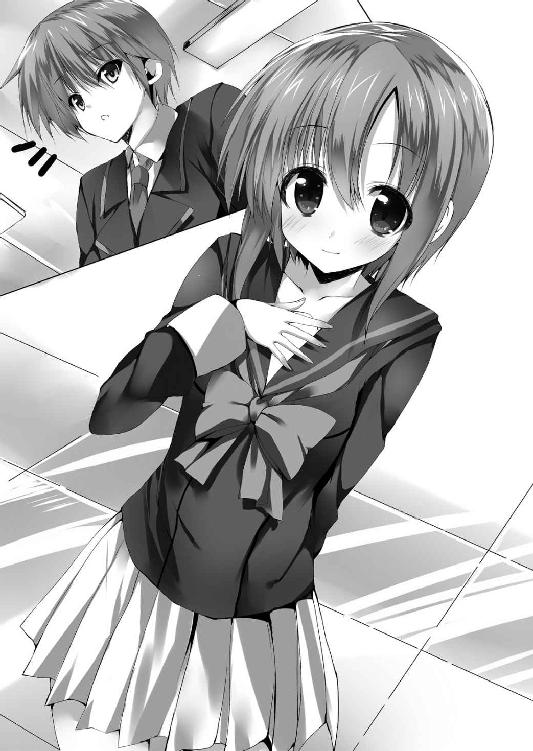
「......で、勢い込んでやってきたはいいが、お前は一体何をしようとしとるんじゃ？」
「決まってるでしょ？ 偽典の捜査に慣れてない直輝クンはきっと幻霧の爆弾魔の素顔からその所在を特定しようとするはずよ。ってことは、十中八九、高等部のデータベースを目当てにここにくるでしょ？ 上手く閲覧の許可が取れるようにわたしが裏から話をつけとくの」
「いや、それは分かるのだが......なんというか、その格好はなんなのだと妾はツッコミたいのであってだな」
「だからっ、わたしが暗躍してるって誰にもバレちゃいけないんだから変装よ、変装！ 常識でしょう？」
「ふむ、なんだろうな......優しい妾はごく控えめに、そりゃねーよ、と言っておこう」
「はい？ 何がよ？ ──って、やばっ」
職員室の窓からなかを覗いていたところをボサボサ頭の教師が通りかかり、織絵は慌てて縁に隠れる。不審者を見かけた教師はその場で数秒思案し、口を開いた。
「副会長、日比野だったらさっき閲覧室行ったぞ。お前さんとこのお仲間同伴で」
そう言うと教師はそのまま気だるそうな足取りで行ってしまう。
目を瞬くのは、サーチライトを当てられた脱獄犯の如く壁に張り付いていた織絵だ。
「え......？ わたしの仲間？ って、執行部の？ え、だ、誰......っ!?」
＊ ＊ ＊
担任から保護情報開示パスが入ったカードキーを受け取った直輝は、同じ教員棟の情報閲覧室へと向かっていた。その横には先ほど手助けしてくれた琉音の姿もある。
「ありがとう、えっと......時路？ おかげで助かったよ。なんてお礼を言ったらいいか」
「琉音でいいよ。代わりにあたしも直輝さんって呼んでいいよね？ 気にしないで、困った生徒を助けるのはあたしたちの仕事のうちだもん。ね、直輝さんはさ......『世界を規定せし書』の保持者なんだよね？」
「えっ、なんでそれを......っ!?」
いきなり言われて、直輝の足が思わず止まる。聞き返された琉音も首を傾げた。
「なんで、って......有名だもん。四月に『死に至る病』の暴走を止めたの、直輝さんでしょ？」
「あっ、そうか......ひょっとして琉音も幻想偽典の保持者ってこと!?」
「え、そこから!? あ、あー、そっか......直輝さんって特保の訓練もパスしたイレギュラーの保持者なんだっけ。うん、そうだよ。あたしも偽典の保持者の一人。で、四月の事件って街一帯が覆われちゃうほどの大事件だったじゃない？ 会長さんたちも不在だったから、学園の保持者たちもあの時はかなり緊迫してて、最終的にそれを解決した直輝さんは今一大注目株なんだよ？ それもただ解決しただけじゃなくて、その偽典が会長さんと同等の『世界を規定せし書』っていうなら尚更」
「そ、そうだったんだ......なんかあんまり自覚ないんだけど、ひょっとして俺、今保持者たちの間で有名人なのかな？」
「特保の訓練生にサイン求められちゃったりするくらいはあるかもよ？」
「へぇ......」
やっぱりあまり実感は湧いてこないが、考えてみれば幻霧の爆弾魔もこちらのことを調べ尽くしたような口ぶりだった。知らない間に水面下では色々変化が起きているらしい。
「それで......琉音、はどうしてあそこに？ 中等部とは職員室の場所が別だと思うんだけど......」
「あたしは明日の連合総会の準備で各職員室をまわってたんだ。そしたらたまたま有名人さんが困ってたから手を差し伸べてみたの」
「連合総会？」
確か会長もそんな単語を言っていた気がするが、あまり記憶が定かではない。
「それも知らないの......？ 一応、学園の表の行事でもあるんだけど、知らない？」
「あー、そういえばホームルームでそんなことを聞いたような......」
「な、なんか心配になってきたなぁ......。えっとね、連合総会っていうのは年に一度、大学部から初等部までの各委員会や部活、その他特殊活動団体の代表が時計塔に集まって開く総会のことなの。学園には幼等部もあるけど、そこは除外ね。基本的には各組織の交流や公の活動報告が主体の行事ってことになってる。でも、それはあくまで表向きのことなんだ」
「表向きって言うと......裏の意味もあるってこと？」
「そう。この学園で裏って言ったら、それはなんのことだと思う？」
「学園の裏側......あっ、幻想偽典絡みのことか！」
「当たり。大学部から初等部まで幅広い年代に保持者はいて、そこには様々な派閥があるんだ。そんな跳梁跋扈な無数の派閥をがっちり抑えて治安を守っているのが、生徒会執行部。その執行部が主導する連合総会は、決して揺るがない執行部の権威を公の場で示す意味があるんだよ」
「ああ、なるほど......幻霧の爆弾魔って敵が迫っているのに、会長が織絵先輩に総会の準備もあるだろ、って言ってた意味はそれか......」
「え、幻霧の爆弾魔？」
「あ、いや」
思わず呟いてしまってから、琉音が目を見開くのを見て、口に出してはマズいことだっただろうか、と直輝は焦る。正直、何が喋ってよくて何がダメなことなのか、まだ判断がつかない。
「そっか......体育棟での爆破の噂を聞いてから、幻霧の爆弾魔はたぶん『世界を規定せし書』にケチをつけたい愉快犯の保持者辺りかなぁ、って思ってたんだけど......正解？」
「え、ええと、それはだね......」
「んー、ないしは本当に直輝さんが幻霧の爆弾魔で普通に偽典で爆破騒ぎ起こしてるって線もあるんだけど？」
「ないない、それはない！ 俺は幻霧の爆弾魔の奴を捕まえなきゃいけない立場なんだ」
「だよね。話しててもなんかそんな感じ。直輝さん、どっか抜けてて自分から悪いことなんて出来なさそうだもん！」
それは褒められてるんだろうか、と思いつつ、直輝はどこかこの会話の雰囲気に既視感を覚える。なんだろうと考え、すぐに思い至った。
妹の雪乃と話してる時に似ているのだ。
グイグイくる感じとか、面と向かってこちらを頼りないと言い切る感じとか。まぁ、実際いまだに偽典に関して知らないことばかりなので、弁解のしようもない。そこまで考えて、ふと思った。
「ひょっとして......琉音は、執行部の人？」
偽典に関して知識が豊富で、執行部が主体らしい総会の準備もやっている。会長や織絵先輩は高等部だが、保持者が大学部から初等部まで幅広くいるのなら、中等部の生徒が執行部でも不思議はないように思えた。以前に織絵先輩から執行部員は会長からの完全指名制だとも聞いている。
直輝の問いにしばらく琉音はきょとんとしていた。あれ、違ったかな......と直輝が胸中で首を傾げるのとほぼ同時、琉音が突然弾けるような笑みを見せた。
「あはは、今さらー？ そうだよ、直輝さんの言う通りっ」
弾んだ声でそう言うと、琉音は廊下の真ん中でくるりとターンし、恭しくこちらに向かって頭を下げた。
「改めまして、リセリア学園生徒会執行部の時路琉音です。どうぞよろしく、『世界を規定せし書』の保持者、日比野直輝さん！」
「あ、これはどうもご丁寧に......、こちらこそです」
自分が加わる......はずだった執行部員に丁寧に挨拶をされ、直輝は慌てて頭を下げ返した。生徒会室で会ったロゼは敵意むき出しだったが、琉音は逆に好意的なようだ。
（あ、でも......）
だったらあの時、時計塔で呟いていた、死んじゃえ、という一言はなんだったのだろうか。
職員室で手助けしてくれてからの琉音はあの時のことをおくびにも出さない。
（ひょっとして何か俺の勘違いだったのかな......？）
そのままにしても気に掛かるので聞いてみようとしたところで、琉音が先に口を開く。中等部にしても小柄な少女は頭を上げると、すっと横方向に手のひらを広げた。
「ちょうど情報閲覧室に到着！ さあ、ここから捜査開始だね、直輝さんっ」
＊ ＊ ＊
カードキーをリーダーに通してコンソールを起動し、タッチパネル式のディスプレイで顔写真付きデータを閲覧する。高等部の女子だけに限ってもかなりの人数になるので一通り目を通すまでそれなりの時間が掛かりそうだ。
一応、琉音が直輝の身元を保証してくれている形なのでその間はずっと付き添ってもらうことになる。申し訳ないと謝ると「気にしないで。ほら、困ってる生徒を助けるのは執行部員の仕事だもんっ」と明るく言ってくれた。
「あ、ほら直輝さん、織絵さんのデータもあるよ、織絵さんのデータ！」
「いや琉音、先輩のは今は関係ないって」
「えー、でもほらスリーサイズまではっきり載ってるよ、これ！」
「............、いや！ 見ない、見ないぞ俺は！」
「あ、そっか。同棲までしちゃってたんだもん。それはもう大人の階段を上へ下へでスリーサイズなんて今さらだよね」
「してないしてない！ そんなピンクな踏み台昇降した覚えはないぞ!? ってか、ど、同棲とかそんなことまで保持者たちに知れ渡ってるの......っ？」
「いやそれは裏も表も関係なく、学園の果てまでも知れ渡ってるから。何言ってるのさ、今さら。大胆だよね～、大人って怖い！」
「......あ、あのさ、琉音。当時、俺は入学したばっかでなんか有名な生徒会の人がやるなら、それもこの学園では異常ではないのかな、って必死に納得しようとしたんだけど、違うの......？」
「聞きたい？」
「いや、ごめん。聞きたくない......。ここは外国なんだから通じないんだって思ってた常識が、やっぱり正しく機能していただなんてそんな現実見たくない......」
雪乃が起きたらしばらく口きいてもらえないかも、と暗澹たる気持ちになりながら、データの参照を続ける。
たとえば織絵先輩のように幻霧の爆弾魔も偽訳解放中は髪の色が変わったりしているかもしれない。というかそもそもあの爆弾魔の髪はそのまんま偽典の藍色の光に輝いていたので、ぱっと見の印象に囚われないように生徒たちの顔立ちを中心に見ていく。
幻霧の爆弾魔である生徒のクラスと名前が分かれば、奴が次の爆破を行う前に先手を取って仕掛けることが出来るはずだ。
そう考えて膨大な量のデータをすべて見ていったのだが......。
「......いない。幻霧の爆弾魔と同じ顔をした生徒のデータがない」
最終ページまで閲覧し、呆然としながら直輝は呟いた。
ひょっとしてどこかで見逃してしまったか。それとも奴は高等部の生徒ではないのか。制服は偽装でひょっとしたら大学部や中等部なのかもしれない。
「もう一回、申請取り直して他のところのデータも見てみる？」
「そうした方がいいのかな......いや待って。えっと、琉音、織絵先輩は偽訳解放中は髪の色が変わるけど、保持者の中には顔立ちとか姿まで変わったりするのもいたりする？」
「あ、うーん......どうだろう、あたしは会ったことはないけれど」
しばらく考え込んでから琉音は、でも、と言葉を続けた。
「引き出した偽典によっては不可能とは言えないと思う。たとえばカフカの『変身』の幻想偽典だったら昆虫に変化することも出来るだろうし、もっと言えば江戸川乱歩の『怪人二十面相』の偽典なんてあったらもう姿なんて変え放題だよね？」
「......そっか。確かにその通りだ」
重く息をはいて、直輝は顔を手のひらで覆った。
「素顔から正体を暴こうとしたのがそもそも間違いだったんだ......っ。もしも幻霧の爆弾魔が姿を変えることが出来るなら、この探し方じゃいくらやっても見つかりっこない。キルケゴールみたいに仮面をつけてない時点で気づくべきだった」
「ごめん、あたしももっと考えるべきだった」
「ああ、いや、琉音のせいなんかじゃないよ、もちろん。俺が浅はかだったんだ」
「ねえ、直輝さん。何か他に手がかりになりそうなものはないの？ 幻霧の爆弾魔が残したり、落としたりしたものとか」
「え......？ あ、ある。一つあった」
顔を見ていたことでそちらにばかり気を取られてしまっていたのだが、奴の残した大きな手がかりが残っている。
「あいつが起こした爆破の二回目、共鳴結界が作動し終わった音楽堂の柱に直接彫ったような文字があったんだ」
「それ、たぶん幻霧の爆弾魔からの犯行メッセージだよ！ そこから何か分かるかも。それに音楽堂に犯行メッセージがあったのなら、最初の犯行場所の競泳プールにも何か手がかりがあるかもしれないよっ」
椅子から勢いよく立ち上がり、行こう！ と琉音が言う。
「え、でも琉音にこれ以上迷惑を掛けるわけには......」
「何言ってんのさ、乗りかかった船なんだからあたしもとことん付き合うよ！ 今日やる分の仕事は終わってるし、それにこの件が片付かないと総会の準備にも支障が出るかもだし、あとは......」
そこまで言って、琉音はイタズラっぽく頬を緩める。
「執行部員としましては、直輝さん一人じゃ頼り無さ過ぎるもん！ あたしが一緒にいて指導してあげるっ」
「あはは、立つ瀬がないなぁ......」
頬をかきながらそう言って、しかしはたと直輝の表情が硬くなる。
「でも、その......大丈夫かな？」
「ん？ 何が？」
「会長は、その......俺を危険視してるんだ。琉音が俺を手助けしてくれるってことは、会長の意向に逆らうことになるんじゃないかな......？」
「会長さんが直輝さんを危険視って......どうして？」
考えないようにしていたことをあえて表層に戻して、直輝は言う。
「俺が八人目だから。禁忌の八人目は終焉を司るって言われてるんだろ......？ その終焉ってのがどんなものかは分からないし、会長も一旦保留にするって言ったけど、あの人も最初は俺の偽典を抹消しようとしてたんだ」
「禁忌の八人目の終焉か......。確かにあたしもその伝承は聞いたことあるよ」
しばらく考えるような間をおいて、でもさ、と琉音は続けた。
「直輝さん、『ミシェル・ノストラダムス師の予言集』って知ってる？ あたしが生まれた直後ぐらいに流行ったらしいんだけど」
「ん、ええっと......世紀末に世界がどうにかなるって言われてたアレのことかな？」
「そうそう。でも実際あたしたちはここでこうして生きてるよ。前世紀が終わるまでは結構みんな心配してたらしいけど、結局おかしなことにはならなかった。つまり、そんなもんなんじゃないかなぁ。もちろんあたしたちは幻想偽典っていう超常的な力の存在を知ってるから極端な楽観は出来ないけど、終焉っていう曖昧な言葉だけじゃあたしはどうもピンとこない。もしもそれに本気になって警戒する人がいるとすれば、それはその終焉がなんなのかを知ってる人だけだと思う。そうじゃないあたし個人としては、もしかしてって脅威より今頑張ってる直輝さんを応援したい。っていうかね」
ふっと近づいて琉音が突然直輝の手を握った。え、と驚くが目の前にいる琉音の瞳は真剣そのものだ。
「あたしにとって直輝さんの持つ七色の光って希望そのものなの。あたしは会長さんを尊敬して心酔して敬愛してるけど、でもだからこそその七色の光をただ怖いものって見方はしたくないんだ」
「七色の光が、希望......？」
それは会長や幻霧の爆弾魔が言っていたのとは、まったく逆の見方だった。
「うん、だからあたしは直輝さんの味方をするよ」
軽やかなその声と笑みに少しだけ気持ちが楽になった。
「......ありがと、琉音。改めてこっちからお願いするよ。幻霧の爆弾魔を追う俺の捜査、どうか手伝って下さい」
「りょーかいっ、お願いされました！ 執行部員のあたしがいれば大丈夫、信じてついてきてよ、直輝さん！」
そして琉音に背中を押されるようにして、直輝は情報閲覧室をあとにする。助けてくれる仲間を得て、その足取りはきた時よりも確実に軽くなっていた。
ただ、一つ気になることがあるとすれば。
──もしも本気になって警戒する人がいるとすれば、それはその終焉がなんなのか知ってる人だけじゃないかな。
（それなら、ひょっとして会長は......）
一瞬過ぎった不安を頭を振って追い出し、直輝は琉音と連れ立って先を急ぐ。
＊ ＊ ＊
情報閲覧室から出ていく直輝と琉音を廊下の陰から見ている人影があった。相変わらずのトレンチコート姿の織絵だ。
「直輝クンに協力してくれたっていう子......あれ、琉音ちゃんよね？ 確かにわたしのお仲間って言えば、お仲間だけど......なんで琉音ちゃんが？」
「事の経緯は分からんが、これで多少は直輝も捜査をしやすくなるのではないか？ 直輝一人では不安があったからな。ま、代わりにお前の出番はなくなったわけだが」
「う......っ。べ、別に直輝クンが大丈夫ならわたしはそれでいいわよっ。変な束縛とかするつもりないしっ」
「うむうむ、というわけでそのけったいな格好ももうおしまいにしておけ、と賢明な妾はアドバイスしておこう」
「ひょっとして直輝クン、年下が好みなのかしら......？」
「おい、人の話聞いとるか？」
弟を見守る姉もしくは単なるストーカーよろしく廊下の陰に佇む副会長を周囲の生徒が微妙な眼差しで見ないフリしつつ通り過ぎていく。
元から多少センスがズレているところがあるが、このままではそのうち学園の全男子憧れの的という評価も撤回されてしまうのではなかろうか、とメフィはひそかにため息をついたりする。
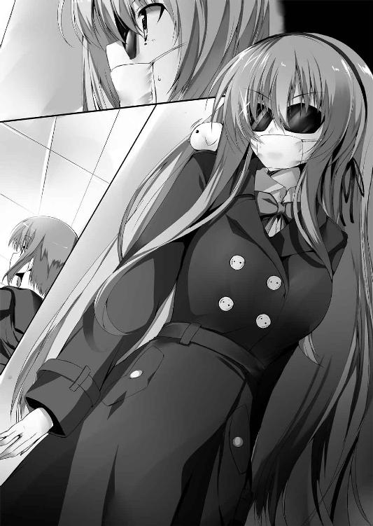
＊ ＊ ＊
体育棟の競泳プールに到着すると、水泳部の活動がちょうど終わりになる頃合だった。ただ部員は数人しかおらず、爆破騒ぎがあった時にいた部員たちはみな出てきていないらしい。実害はなかったとはいえ、確かに気味が悪いだろう。
職員室の時のように琉音が生徒手帳を見せると簡単に中へと通された。おそらく自分だけならこう楽に現場に入れてはもらえなかっただろうな、と直輝は思う。
「うーん、それらしいものは何も見当たらないね......」
「......」
しばらく琉音と手分けして探してみたが、野外音楽堂にあったような犯行メッセージは見当たらなかった。
「......何か、何かないのか」
こうしてる間にも幻魔の爆弾魔は次の犯行を始めるかもしれない。奴の記述がどこまでいってるのかは知らないが、その最後に狙われるのは雪乃の命だ。
「落ち着いて、直輝さん。ね、共鳴結界を張ってみたらどうかな？ もしも幻霧の爆弾魔が偽典で何か細工をしているなら、反応があるかも」
言われて、なるほど、と直輝は頷いた。
「アリストテレスの地下大聖堂に行く時の要領ってこと？」
アリストテレスがいる地下大聖堂には学園の中央記念図書館から行くことが出来る。もはや誰も入らないくらい古びた地下書庫の一室で偽典を開くと、ゲートとなっていると思しき偽典が反応して扉が開くのだ。
「あー、うん、たぶんそう。あたしは入る資格がないから行ったことないけど、原理としては同じだと思う」
「ん、資格って......なんか許可証みたいなのが必要だっけ？ 俺が行った時はとくに何もなかったけど」
「ああ、またか、またなんだね、直輝さん。自覚まったくなし！」
何やら大仰にため息をつかれてしまった。
「アリストテレスのいる地下大聖堂には限られた人間しか入ることが出来ないの。保持者の中では『世界を規定せし書』を所有する人、つまりは世界で七人だけ──会長さんを含めた『最果ての七柱』だけなんだよ。......で、今はそこに八人目の直輝さんが加わったってこと。気軽に社会科見学気分で行けるとこじゃないんだよ......？」
「あれ、そうなの？」
だが自分は以前に織絵先輩から「いつか大聖堂を案内してあげるよ」と言われた記憶がある。
（織絵先輩の『ファウスト』は『人越を規定せし書』なはずだし......。どういうことだろう？）
そう思いつつ、琉音に急かされて直輝は文庫本を取り出した。水泳部の部員たちはすでに引き払っている。
「あ、そうだ。悪いんだけど、琉音も一緒に偽典を出してもらっていいかな？ 水泳部はもう帰ったけど、一応共鳴結界の人払いの効果を強化するために」
「え、あたしも？ あ、あーと......あたしは、パス！ ......してもいい？」
ちょっと気まずそうに言われて直輝は、あ、ごめん、とすぐに謝った。保持者の中には自分の偽典がどんな大著か知られたくない人もいるらしい。
メフィさんからは以前に「たとえば屈強な肉体を持った戦士然とした男の偽典が乙女チックな『秘密の花園』とかだったらまわりはドン引きするじゃろ？ つまりはそういうことだ」と説明されている。要は保持者同士のちょっとしたマナーみたいなものらしい。
「ごめん、やっぱ俺まだ勉強不足だ」
「あ、ううんっ、気にしないで！ 偽典の初心者にはよくあることだよ。執行部のあたしはその程度ぜんぜん気にしないから！ それより直輝さんは平気？ もし知られるの嫌だったら、あたし後ろ向いてるけど......」
「ん？ 俺の偽典のことはもうみんな知ってるんじゃなかったっけ？ 大丈夫、俺の偽典はイデアの記述を集めたもので現存すらしてないらしいから、恥ずかしがりようがないんだ」
「え、イデア......？」
不可解な単語を聞いた、というように琉音が首を傾げたことには気づかず、直輝は文庫本を胸の高さに掲げて力ある言葉を唱える。
「──偽訳再現。プラトン・『イデアの片翼』」
直輝の手の中に七色の光を伴った本が現れる。すると傍らの少女が目を剥いた。
「ちょ、直輝さん!? プ、プラトンって一体どういうこと!? どういうことなの!?」
「え!? 何、どうした!? 琉音、琉音さんっ、痛いっ、折れる、腕折れるから！」
琉音が腕に飛びついてきたと同時にそれは起こった。
天井の梁の一部に直輝の偽典の七色が映った瞬間、藍色の光が灯り、バチッと爆竹程度の小さな爆発が生じた。
「うわっ、なんだっ」
ぱらぱらと落ちてきた梁の欠片を避けて天井を見る。
「あれは......」
そこには表面を刃物で削り取ったような形で文字列が出現していた。よくよく見なければ気づかない程度のものだが、確かに共鳴結界に反応して現れた犯行メッセージだ。
だが、それをゆっくり観察する余裕はなかった。
「ちょっと直輝さん、説明して！ その偽典がプラトンって本当にそうなの!? プラトンなの!?」
「え、いやそうだけどっ......それより琉音さん、あの、天井に犯行メッセージがっ」
「そんなのいいから！ あとでちゃんと見ればいいから！」
こちらの腕をがっちりホールドした琉音が偽典の表紙を凝視する。そこには題字と著者名が書かれているのだが、
「読めない......」
「まあ、古代ギリシャ文字だから......。でも一応間違いなく、俺の『イデアの片翼』はプラトンのものだよ」
「そっか、そうなんだ......。『世界を規定せし書』ってことに隠れて著者がプラトンってところまでは保持者たちの噂に上らなかったのかな......？ ううん、もしくは信じられなくて誰も口にしなかった......？ いや光は遠目から見ても分かるけど、著者までは直輝さん本人と相対しないと分からないからそのせいか......」
「ええと、琉音？ 一体何がどうしたの......？」
「直輝さんはこのこと自覚......してないよね、やっぱり。はぁ、あのね、直輝さんってちょっと無知が過ぎると思うの」
年下の女の子に真顔でダメ出しされて、ちょっと真剣にへこんだ。
「アリストテレスが『万学の祖』って呼ばれてることは知ってる？ あらゆる学問とそこから派生したあらゆる書物はすべてアリストテレスに端を発するって言われてるの。つまり幻想偽典もベースとなる大著も遡ればアリストテレスに繋がっているってこと。幻想偽典はね、その大原則を遵守する形で生まれているの。だから逆に言うと、アリストテレス以前の人物を著者とする大著は今まで歴史上一度も幻想偽典になっていないんだ」
「え、でもプラトンってアリストテレスの師匠じゃなかったっけ？」
「だから、異常なの。つまり直輝さんは禁忌の八人目であると同時に、歴史上今まで存在しなかったアリストテレス以前の幻想偽典の保持者でもある。しかも師匠であるプラトンの。なんていうかな、規格外が二つ同時にセットで販売されてる感じ？ あたしたちの知る偽典の法則としては......ちょっとあり得ない。それはひょっとしたら、過去に存在したあらゆる幻想偽典を超える可能性を秘めているのかもしれない」
「はぁ、そうなんだ......」
そういえば、メフィさんが会長を説得してくれた時もプラトンということが鍵になっているようだった。『イデアの片翼』は『世界を規定せし書』の八番目というだけでなく、アリストテレスを超えるプラトンとしての可能性も持っていたのだ。
「......でもなんか分不相応な気がするよ」
自分自身は相変わらず状況に翻弄されてばかりで何も出来ない人間なのに、『世界を規定せし書』が幻霧の爆弾魔の敵意を買い、プラトンが会長の判断に一石を投じた。こちらの意志など関係なく、与えられた力の存在感だけがどんどん増していく。
手にした偽典の重さが少しだけ不気味に感じられた。
「とにかく琉音、今は捜査を進めよう。ほら、犯人の残した手がかりがある」
見上げた先に浮き出た文字列は、野外音楽堂にあったものと同じ『ロンドン橋』。だがすべてが同じというわけではなく、異なった個所がある。
藍色の女のにやけた顔が目の前にちらついた気がした。
＊ ＊ ＊
幻霧の爆弾魔が犯行場所に『ロンドン橋』を残すのは、本人がゲームと称した以上、それがゲームの攻略──つまりは奴の正体に迫るヒントなのだと思われる。
当初はその素顔から迫れると思ったが、結果的に奴の提示したヒントが唯一の手がかりとなっていた。手のひらで泳がされているような不快感はあるが、立ち止まっている余裕はない。
「直輝さん、『ロンドン橋』に関連してそうな本、集めてきたよっ。......っと、わわ！」
「おっと！ 大丈夫、琉音？」
山のように重ねた本を手にして転びそうになった琉音を慌てて横から支えた。
「ありがと、こういう時は役に立つね、直輝さんっ」
「どうも。こういう時だけね」
照れ隠しに舌を出してそう言う琉音になんとなく懐かしい気持ちで笑みを返す。雪乃も失敗するとすぐそんなことを言っていた気がする。
『ロンドン橋』について、一応歌としては聞いたことがあるもののそれがそもそもどういうものであるか、ということを調べるために直輝と琉音は高等部の図書室にきていた。
「じゃあ、まとめるね？ 『ロンドン橋』はイギリスに伝わるマザー・グース──つまりは童謡の一つ。日本では『ロンドン橋落ちた』のタイトルの方が有名かな？ その歌は四行の詩をワンセットにしていて、そのバージョン違いをいくつも歌っていくのが一般的。それぞれの四行詩で共通するのは最後の一行が必ず『My fair Lady』の一文で締められることだね」
「......で、こっちが俺が書き写した競泳プールの天井に浮き出た『ロンドン橋』の歌詞」
直輝はルーズリーフを机の上に広げる。
London Bridge is broken down.
Broken down,broken down.
London Bridge is broken down,
その歌詞は典型的な『ロンドン橋』の一番だが、四行目の『My fair Lady.』が欠けている。
「琉音、どう思う？」
「三行目の終わりがピリオドじゃなくカンマだから、四行目がないのは何か意図があってのことなんじゃないかな？ あとは一番の歌詞ってことはやっぱり単純に、ここから犯行を始める、ってメッセージでもあると思う」
「うん、俺もそう思う。で、こっちがさっきもう一度行ってみた野外音楽堂の歌詞だ」
当初、野外音楽堂に出ていた一文は最初に見た『London Bridge is broken down.』の一文だけだった。
だが競泳プールで共鳴結界によって歌詞が出たことから、もう一度音楽堂に行き、再度共鳴結界を張ってみたところ、さらに続きの歌詞が浮き出てきた。
直輝は二枚目のルーズリーフを机に広げる。
Set a man to watch all night,
Watch all night,watch all night,
Set a man to watch all night,
My ......
「こっちは『ロンドン橋』のバージョン違いのうちの一つだね。野外音楽堂、つまり音楽が鳴り響いていれば眠ることもないから寝ずの見張りの歌詞を置いたのかな？ 競泳プールの時は橋が落ちたら下は川だから、水のある場所で競泳プールって解釈も出来るし。一応、犯行場所と歌の歌詞は連動させてるみたい。それから二回目の犯行場所である野外音楽堂では四行目の歌詞が『My』って一単語だけ追加されてるね。これはどういう意味なんだろう？」
「その意味なら最初に見た時、ピンときたよ」
「え、直輝さん、分かるの？」
「それはカウントダウンだ」
そう口にして、直輝は唇を強く噛み締めた。意識して感情を抑え込み、言葉を続ける。
「たぶんこの後も奴の爆破が続くとしたら、『fair』、『Lady』と単語が追加されていくんだと思う」
そして最後の『Lady』が刻まれた時、女子寮が狙われるのだ。『My fair Lady』という言葉は人質である雪乃をなぞらえているのだろう。
「直輝さん、えっと......どうしたの？ なんか、顔......怖いよ？ あたし、何か悪いことしちゃった？ 年下なのにやっぱり生意気過ぎた？」
「あ、いやごめん、違うんだ」
考えてみれば、その辺りの経緯をまだ琉音には話してなかった。執行部員なので直輝が今日生徒会室に呼ばれたことは知っているだろうが、幻霧の爆弾魔を追うことになった事情の説明がまだだった。直輝はかいつまんでここまでのことを琉音に話す。
「そっか、直輝さんの妹さんが幻霧の爆弾魔の標的に......。じゃあ『世界を規定せし書』のこととか、あまり言われたくないことだったね。そうとも知らずに......ごめんなさい」
「ああ、いいんだよ、そんなのぜんぜん。むしろ俺はもっとちゃんと知らなくちゃいけないんだ。自分が手にした力のことや、それによって自分のまわりに何が起きるのかってことを」
前回の事件の時は友人の夏生を巻き込んでしまった。そして今度は妹の雪乃。過ぎた力は否が応にも歪を生む。それを自分はちゃんと理解しなくてはいけないのだと思う。
「強いね、直輝さんは。あたしならきっとプレッシャーで潰れちゃってる」
琉音は少し目を伏せて言った。直輝は慌てて首を振る。
「強いなんて言ったら、琉音の方がそうさ。天上寺会長の下にいて、織絵先輩や会計のロゼって人と同等ってことなんだから」
「えっと......あはは、うん、そうだね」
なぜか少し淋しそうに笑って、琉音は机のルーズリーフに視線を戻した。
「話を続けよっか。四行目がカウントダウンっていうのはたぶん正解だと思う。じゃあ、その先、なんで幻霧の爆弾魔が『ロンドン橋』を残すのかってことなんだけど......」
そこで琉音は何か躊躇うように言葉に詰まる。どうしたんだろう、と思いつつ直輝はあとを引き継ぐ。
「『ロンドン橋』そのものが奴の幻想偽典に関わりがあるとかかな？ 幻霧の爆弾魔の偽典が何かっていうのが分かれば、あいつがどこの誰かってことは分かるもの？」
そう言ってから、キルケゴールの時はその偽典が『死に至る病』だと最初から分かっていたことを思い出す。予想通り、琉音は首を振った。
「......それぞれの偽典と保持者の情報は特保が管理してるけど、たとえどんな事件が起こっても開示してくれることはまずないよ」
「......ああ、お役所仕事だもんな」
特保の代表だという着崩れた執事姿の男のにやけた顔を思い出して、直輝はため息をつく。琉音曰く、執行部にも偽典と保持者の情報はあるが、それもあくまで今までの活動による集積であって、すべてを網羅してるわけではないという。
「そもそも『ロンドン橋』に関連した大著っていうのも、あたしもすぐには思いつかないかも。逆に都市としてのロンドンまでくくりを広げちゃうと、今度は山のように出てくるだろうしね」
「ロンドンが舞台の大著って言うと......」
「たとえば『小公女』とか『シャーロック・ホームズ』とかが有名かな。他には『切り裂きジャック』とかも何かの本になってるだろうし......」
「なるほど......」
その後もしばらく議論を重ねたが次の取っ掛かりに出来そうな案は出てこなかった。
『ロンドン橋』の他の歌詞から次に爆破の標的になりそうなところを考えてもみたが、歌詞のバージョン違いは思っていた以上に数が多く、加えて犯行場所になるだろう学園の施設も多種多様なものが揃っているので、両者を関連付けようとすればいくらでも出来てしまう、という有様になった。
「俺、もうなんか、どこもかしこも爆破されそうな気がしてきた......」
「うん、目に映るぜんぶが危険に思えてきたよ......」
げんなりして二人は同じ格好で項垂れる。
「ちょっと休憩しようか。何か飲み物買ってくるよ。琉音、何がいい？」
「あ、それならあたしが行ってくるよ。一応、直輝さんの方が先輩だもん」
「いやいや執行部としては琉音の方が先輩だからさ」
「じゃあ間を取って、あたしが買ってきて、ジュース代は直輝さんが奢ってくれる。っていうのでどう？」
「おお、ちゃっかりしてるな。うん、じゃあそれで」
苦笑しながら小銭を渡す。琉音が外に出ている間、手持無沙汰になった直輝はイギリス文学の棚に向かう。......琉音には休憩と言いつつ、やはり焦りがあってじっとしていられなかった。
「爆弾魔ってところはヒントにならないかな......？ ああ、いや爆発の能力は改変だって幻霧の爆弾魔本人が言ってったっけ。でも犯人の言うことを真に受けるのもな......けど、マッドサイエンティストが主人公の本ってなんだ？」
独り言を言いつつ、とりあえず琉音がさっき言っていた大著のどれかを手に取ろうとしていた指が、ある一冊の本の前で止まる。
「あれ？ これもロンドンが舞台の本なのか」
それは大著に疎い直輝でも知ってる有名な一冊だった。最後の解説だけ読み流して軽くパラパラとめくってみたが、その手がふいに止まる。
「この話、テムズ河での殺人が契機になってる」
ロンドン橋が掛かっているのはテムズ河だ。
「橋と......殺人、つまりは人死にか......」
それに近しい事柄をつい最近耳にした気がする。ぱっと閃光のように脳裏に蘇ったのは夏生の言葉だ。
──ショックのあまりお前をキルして俺もデスる。集団飛び降り騒ぎのあった大学部の大桟橋から二人で一緒にダイブだな。
「そうだ、大学部の大桟橋......っ。ロンドン橋と大桟橋、殺人騒ぎと飛び降り騒ぎ、もしもここに関連性があるのなら......っ！」
仮にこの本が幻霧の爆弾魔の幻想偽典の原典だとすれば、高等部の女子のデータにその存在がなかった理由も、奴自身が言った言葉のいくつかも綺麗に繋がる。おそらくこの本が幻霧の爆弾魔の偽典のベースとなった大著だ。
そうなると大学部の大桟橋、おそらくそこに奴に繋がる何かがある。
息つく暇なく琉音に大桟橋の場所を訊きに走ろうとした時だ。
──ふいに棚の向こうから声が掛かった。
「いやぁ、まさか自力でそこに辿り着くとは。思ったよりやりますねぇ、お兄さん？」
「──っ!?」
忘れようもないその声に悪寒が走る。一冊分空いた棚の先に見えるのは、藍色に光る長い髪。幻霧の爆弾魔がそこにいた。
「あ、大きな声は出さないで下さいね？ 偽訳解放中であたしめっちゃ光ってますので。共鳴結界の人払いも最初からその場にいる人たちには効きませんから、もし見つかったらあたしも口封じの一つや二つしなくちゃいけなくなっちゃいますからねぇ。あ、それはそれでちょっと面白いか」
「やめろ......っ。図書室には大勢生徒たちがいる。関係ない人たちを巻き込む気か!?」
「んー、爆弾魔って古今東西そういうもんだと思いますけど？ じゃあ、いきますよ？ スリー、トゥー、ワン──」
「......っ、そんなことさせるか──ッ」
力任せに本の間に手を突っ込んだ。ほんの一瞬届きかけたが、しかし寸前で藍色の髪がするりと手のひらをすり抜ける。
「あはは、冗談ですよ。あたしは自分ルールは遵守するんです。そうしないとゲームが楽しくならないから。でもいいですねぇ、その余裕のない感じ。お兄さんはほんとからかい甲斐があるなぁ。ハイドアンドシークの鬼には最適だ。ま、あたしの原典のシーク氏はもうちょっとダンディで紳士的なんですけどっ」
棚の向こうの腕が掴まれる。手のひらについた指輪の固い感触が伝わってきた。
「このまま腕、吹っ飛ばします？」
「......っ、やってみろ。もげた腕でお前を捕まえてみせる！」
「あはっ、覚悟決まり過ぎ。素敵ですねぇ、ほんとはビビリまくってるくせに！ そのやせ我慢、超濡れる！ 本当はね、なんか遠回りばっかりしててつまんないから、発破かけにきたんですよ。でもま、自力で橋の意味に気づいたようですし？ 軽めの発破にしといてあげますよ。あたしってば超やさしー♪ じゃ、お待ちしてますからね、お兄さん♪」
腕から幻霧の爆弾魔の手の感触が消える。同時、棚の向こうから藍色の光が輝いた。
「これくらいなら自分ルールには抵触しないかな？ かなかな？」
「──っ!? みんな、伏せろ！」
叫んだ声は爆発音にかき消された。棚の向こうの通路が偽典の力によって爆ぜる。
木霊する生徒たちの悲鳴。黒煙が立ち上り、天井のスプリンクラーが作動する。
その時にはもう幻霧の爆弾魔の姿は消えていた。
「直輝クン、大丈夫!? ごめん、至近距離過ぎて手が出せなかった！」
「織絵先輩!?」
扉から我先に逃げていく生徒たちとは逆に、なぜか窓から飛び込んできたのは織絵先輩だった。
「すみません、ここを頼みます！ 俺は幻霧の爆弾魔を追いますから！」
「──、分かった！ しょうがない、ここは任せて行きなさい！」
幸い、爆発は小規模で怪我人はいない。スプリンクラーで火も消えているので、あとの処理は先輩にお願いした方が間違いがないはずだ。
図書室を出ると、廊下の角にジュースの缶を二つ抱えた琉音がいた。
「あ、直輝さん、ちょうど良かった。あのね、さっき言いかけたことなんだけど、なんで幻霧の爆弾魔が『ロンドン橋』を残すかについて、あたし思ったことが......」
「それならもう分かったんだ！ 琉音、大学部の大桟橋ってどこか分かるか!?」
「え、直輝さん、なんでそのこと......あたしもちょうどその大桟橋のことを言おうとして......」
「よし、案内してくれ！ たぶんそこに幻霧の爆弾魔がいる！」
走るスピードを緩めないまま、琉音の手を取る。廊下にジュースの缶が落ちる音も直輝の耳には入らなかった。
三章 ─虚構の先で彼女は得る─
直輝が出て行ってしばらくした後、織絵は携帯を耳に当て、壁に背を預けていた。電話の相手は直輝だ。
「うん、大丈夫。あれからすぐに共鳴結界が作動して全部元通りになったから、痕跡は何も残ってないよ。わたしから特保に連絡してすぐに隠蔽処理も始まったから、たぶん幻霧の爆弾魔の噂の一つ程度にしかならないと思う。......え？ 『ロンドン橋』の歌詞？ それは見当たらないわね......うん、キミの言う通り、今回の図書室の爆破は突発的な犯行だと思う。......って、わたしが自分の考え言っちゃいけなかったね。......ああ、大丈夫、現場の処理程度なら直輝クンに協力したことにはならないよ。キミに課せられたのはあくまで一人で捜査をすること、だもん。──うん、それじゃあ、気をつけてね」
通話を切ると、特保の人員が忙しく行き交う様子を見つめながら、織絵は肩の上の相棒に話しかける。
「大学部の大桟橋だって。メフィ、どう思う？」
「つまり、幻霧の爆弾魔とはあの事件の生き残り、ということだろうな」
「うん......」
「なぜ琉音が直輝と共にいるのかは分からぬが、あの事件が背後にあるとすれば、無関係ではあるまい。むしろ得心がいくというものだ」
「なんか身につまされるね......」
「お前が気にしてどうする。あの事件の当事者はお前でなく、紋芽であろう？」
「それはそうなんだけど、でもだからこそって言うか......」
「お前が行けば助かる命があったかもしれぬ、と？ 驕るな、人は万能ではない。お前が今気に病むべきことがあるとすれば、それは......」
メフィは寄り添うように織絵の頬に身を寄せた。
「直輝が偽典を持つ者たちの闇の一端をとうとう垣間見てしまうということだ」
＊ ＊ ＊
それは大学部の学生会館とアリーナを繋ぐ空中通路だ。橋と言っても下には池も川もなく、あるのは舗装された通路のみ。ただ高さは建物の五階分あるので、落ちたらただでは済まないだろう。
正式名称は大桟橋。だが実際はほんの十メートルほどの長さの空中通路なので、生徒たちの間では揶揄の意味も込めてつけられた大桟橋という名称が一般的だった。
「琉音、次の角は!?」
「右だよ。そこを曲がればもうそこが大桟橋」
携帯をしまった直輝を案内して走りながら、琉音は自分の喉がひりついているのを感じていた。本当は競泳プールで『ロンドン橋』の一文を見た時から、連想していた。リセリア学園で有名な橋と言ったらこの大桟橋だからだ。
でも、出来れば二度とこの場所にはきたくなかった。だから、つい......言えなかった。
本当に幻霧の爆弾魔がいたらどうしよう。もしも幻霧の爆弾魔があの事件の関係者だったら......。そんな不安が込み上げてきて、胸が押し潰されそうになる。
......でも、負けちゃいけない。
（あたしは、執行部員なんだから......せめて、あたしを頼りにしてくれてる直輝さんの前では）
毅然としていなくてはいけない。
「ここか！ 出てこい、幻霧の爆弾魔ッ！」
左手に見えるのはドーム状のアリーナ。右手にはビルのように延びる学生会館。直輝と琉音が見上げる先、その両者を繋ぐのはアーチ状に掛かった大桟橋だ。
心に刻みつけられた傷がざわつく。込み上げてくるものを必死に抑え込みながら、琉音は橋の中央を見上げて......息をのんだ。
「え、どうして......？」
橋の欄干に一人の少女が腰掛けていた。
一歩間違えば真っ逆さまに落ちるその場所で、けれど彼女は優雅に風に髪をなびかせている。──幻霧の爆弾魔ではない。けれど、琉音にとってはある意味、それ以上に出会ってはいけない人物だった。その瞳は青く透き通る碧眼。
「誰が幻霧の爆弾魔よ。こんなに遅い到着でよくそんな偉そうな口きけたものね、禁忌の八人目」
「あなたは、ロゼ......さん？ どうしてここに？ 幻霧の爆弾魔は？」
橋の欄干にいたのは生徒会執行部のロゼだった。訝しげに問う直輝へ、つまらなそうに彼女は口を開く。
「決まってるでしょう？ 総会前のこの際どい時期に幻霧の爆弾魔なんて危険因子を放っておけるわけがない。だから仕事を早急に片付けて捜査してたのよ。奴はまだ現れていないわ」
幻霧の爆弾魔がいないと聞いて、琉音は内心ほっと胸を撫で下ろした。目の前にいる直輝の肩からも力が抜けるのが見えた。
「でも、幻霧の爆弾魔を捕まえるのは俺の役目です」
「アンタ、この大桟橋に辿り着くまでにどれだけ掛かった？ その様子じゃ幻霧の爆弾魔の動機にも至ってないでしょう？」
「動機？ あいつの目的は自分の偽典の記述を増やすことなんじゃ......？」
ハァ、と小馬鹿にするようにロゼはため息をつき......そして、その目が琉音と合った。
「......時路琉音？ アンタ、ここで何してるの？」
「あのっ、ロゼさん、えっとそれはね......っ」
「まさか禁忌の八人目の手助けなんてしてるんじゃないでしょうね？」
「あの、それは......っ」
射貫くような視線に身が竦み上がる。慌てたようにその視線から庇って前に出たのは、直輝だ。
「俺が無理やりに頼んだんです。捜査する上でどうしても執行部員の助けが必要だったから。俺が無理強いしただけで、琉音は別に会長の意向に逆らってるわけじゃありません」
「あ、直輝さん、その......っ」
直輝の言葉でロゼの眉が一気に詰まった。
「執行部員の助け？ 誰のこと言ってるの、それは？」
「......？ 決まってるでしょう、琉音のことです」
琉音は直輝の後ろで唇を噛み締める。そして、すべて理解したロゼが突然笑い声を挙げた。
「ああ、そういうこと！ なるほどなるほど、考えてみれば時路琉音、アンタもこの橋に因縁のある奴の一人だったわね。ま、幻霧の爆弾魔とは比べるべくもないでしょうけど」
「......？ 一体、どういうことです？」
「ああ、いいわ。教えてあげるわよ、禁忌の八人目。かつてこの橋で何があったか。そして、アンタの横にいるそいつが一体どういう奴なのか」
橋の上から二人を見下ろし、執行部員の少女が笑む。
「生徒たちが言う呪いの白い本の噂、どれでもいいから挙げてみなさい」
「......集団自殺未遂、実験棟の崩壊、ため池の干上がり、あとは突然の日食」
直輝が噂を羅列するとロゼは上機嫌そうに頷いた。
「その最初のやつ、集団自殺未遂、俗に言う集団飛び降り騒ぎがあったのがこの橋よ」
「え、ここが......？」
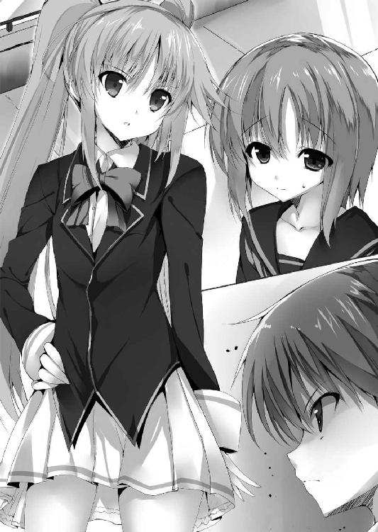
「さらに真実を突くとすれば、事はさらに凄惨。ある種の保持者たちは寄り集まって派閥を作るわ。ここで起きたのはその派閥同士の抗争。一方はフィスの『椿姫』の保持者を中心にした者たち、もう一方はメリメの『カルメン』の保持者を信奉した者たち。数多の大著の中でも一際輝く二人の美女、椿姫とカルメンの戦い。後に言われた大桟橋事件」
琉音の全身が震え出す。意味が分からないと言うように直輝が眉を寄せる。
「それがなんだって言うんですか？」
「禁忌なんて禍々しい名を与えられてるくせに鈍いわね。至極単純な話よ。ここで何が起きたかなんて言うのは。つまりそれは──」
つまらない冗談でも言うように、ロゼは軽く肩を竦めて言った。
「保持者同士の殺し合い」
「──っ!?」
直輝が息をのむ。琉音は胸を押さえて蹲った。
あの日、この場所で起きた惨劇が琉音の脳裏に蘇る。
橋の両端に集っていた殺意と敵意。複数の保持者たちが入り乱れて争い、多くの血が流れた。偽典の光と共に様々な能力が顕現し、互いに傷つけ合っては朽ちていく。
鉄は砕かれ、茨は軋み、爪は折れた。誰かが誰かを傷つける。誰かが誰かを嘲笑する。誰かが誰かを抱いて泣き叫ぶ。それは丸っきり悪夢のような光景。
「殺し合いなんてそんな......っ、ありえない！」
「なんでそう言えるのよ。記述が完遂した先の『終止符の地平』、そこに至れば願いが叶う。他人を蹴落とすことで記述の増える偽典を手にしたならば、願いのために武器を取る保持者は存在するわ」
「でも、いくら自分の願いのためだって、そのために命のやり取りをするなんて間違ってるでしょう......っ!?」
「おかしなこと言うのね？ アンタはすでに願いのために他者を永遠の眠りに堕とす保持者と戦ったはずでしょう？ さらに言えば、他者を守るために不死の魔女が自分の命を投げ出す瞬間にも立ち会ったって聞いたけど？」
「──っ!? それは......っ」
「何も違わない。幻想偽典の保持者だってことは、綺麗事じゃないのよ。ここで殺し合った保持者たちも、アンタが尻尾振ってる織絵も、さらにはこのアタシ自身もね。ここで起こった惨劇はこの学園ならばいつでもどこでだって起こり得る当たり前の悲劇よ」
「......っ」
「ま、それでも実際の死者は一人、一方の派閥の長だった椿姫だけだった。トップを失って自暴自棄になった椿姫の派閥が本格的な泥仕合を始める直前で、会長閣下が駆けつけて両方の派閥を一瞬で掃討したから。その余波でこの橋は真っ二つに折れ、保持者たちはゴミのように地に落ちた。その時の話が後に集団での飛び降り騒ぎとして噂になったのね。結果は明瞭、どちらの派閥も解体。そこにいた保持者のだいたいは学園を去ったわ。......けれど、今になってこの橋を連想させるようなメッセージを残す爆弾魔が現れた」
そこまで聞いて、はっとした直輝が声を挙げる。
「つまり、幻霧の爆弾魔はその大桟橋事件の生き残り......!?」
「会長閣下を敵視してる辺りから考えても間違いないでしょうね。どういうつもりかは知らないけど、大桟橋事件の意趣返しをしたいんでしょ。『ロンドン橋』から見るに、目下のところの狙いは惨劇の舞台になったこの大桟橋を落とすことかしら。で、そこでアンタに質問。きりきり答えなさい。図書室に幻霧の爆弾魔が現れてアンタと交戦したって話は特保から連絡がきたわ。もしも『ロンドン橋』の通りにあいつがこの橋を落としたいのなら、そのままこっちにくるかと思ったけど、どうなの？」
「......俺もそう思ってここまできました。でも、実際にはあなたがいた」
「あっそ。一悶着あればその流れでここにくるかと思ったけど、幻霧の爆弾魔的には順番としてまだ他に爆破するところがあるってことかしら？ どんなこだわりかは知らないけど、ならいいわ」
ふいにロゼが欄干の上で立ち上がった。蒼い瞳が好戦的に細められる。
「それなら、今からアタシがこの橋を落とす」
「はっ!? な、何言ってるんですか!?」
「簡単な話よ。自分が落としたかった橋を他人に落とされたなら、頭にきて出てくるでしょ？」
「そんな無茶苦茶な！ いやそもそも落とすって言ったって、十メートル以上あるコンクリートの空中通路だ。そんな簡単に落とすなんてことは......っ」
「アンタ、アタシを誰だと思ってるの？ アタシは天上寺紋芽会長閣下に仕える生徒会執行部の偽典詠士、ロゼリア・Ｈ・ミュッセよ。この程度の橋──」
ロゼがスカートのポケットから取り出した手帳を高々と振り上げる。その寸前、悲鳴じみた声でそれを止めたのは、琉音だ。
「やめてぇ！ あんな光景、もう見たくない！ やめて、やめてよ......っ！」
「琉音？ え、どうしたんだ......顔が真っ青だぞ!?」
「なるほど、アンタにとってはトラウマなわけか。情けないことね」
震えて泣き叫ぶ琉音に呆気に取られている直輝へ、ロゼが口を開く。
「そいつはね、逃げ出したのよ」
直輝がさする琉音の背中がびくりと震えた。
「主たる会長閣下に仕える身でありながら、そいつは保持者同士の戦いの凄惨さに臆し、持ち場を離れて逃げ出したのよ。敵前逃亡の臆病者、それがそこにいる時路琉音」
「あ、あたしは......」
「ついでに正しといてあげる。そいつは──」
「やめてっ、言わないで......っ」
その時、誰にも気づかれずにこの場を感知している幻霧の爆弾魔は、静かにほくそ笑んだ。──すべてあたしの思い通りに進んでるじゃないですか、と。
「そいつは──時路琉音は執行部員じゃないわ」
「え？」
直輝が呆けた声を出す。琉音が耳を塞いでしゃがみ込む。けれど、ロゼの言葉は止まらない。
「時路琉音は執行部の下部組織、中等部の支援執行部──通称支援部の人員よ。しかも特保の訓練を始めてから数か月経ってもいまだに偽典が大著にならず、空白状態のままな落伍者。敵前逃亡の臆病者、しかも偽典の扱いもままならない落ちこぼれ、それがアンタが協力を頼んだ時路琉音の正体よ」
「うぅ......っ」
琉音は唇を噛み締めてぎゅっと目を閉じる。
バレた。執行部員を騙る偽物だって、直輝さんに知られてしまった。
あの日、憧れた七色の光に近づきたくて、何者にもなれない自分でも役に立てると思いたくて、困っている直輝さんに手を貸した。君は執行部員？ と訊かれて本当のことを言わなくちゃと思いながら、でも嬉しくて、なんだか会長さんに認められたような気がしてたまらなく嬉しくて、違うよ、って言えなかった。
でも結局、それは嘘だ。
自分は執行部員じゃない。選ばれた執行部員じゃなくて、志願すれば誰でもなれる支援部員。偽典が大著にもならない落ちこぼれ。それが本当の時路琉音。七色に憧れた、ただの嘘つき。
直輝さんの顔が見られない。その顔に浮かんでるのは落胆か、怒りか、嘲笑か。瞼に浮かぶのはもう直輝さんの顔じゃなくて、今まで周囲から向けられてきた負の顔だ。
嫌われた。何も出来ない奴って、また軽蔑される。湧き上がる痛みに息が詰まった。
──その時、ふいにくしゃっと頭を撫でられた。
「だから、どうした？」
え、と顔を上げる。見えたのは直輝さんの背中。彼の視線は真っ直ぐ橋の上へ向いている。遥か高みにいる相手へ直輝さんが叫ぶ。
「琉音が執行部員じゃないから、だからどうした!? 琉音がいなきゃ俺はここまでこられなかった！ 自慢じゃないけど、俺は一人じゃ何も出来ないんだ！ 琉音がいてくれたからここまでこれた！ だから琉音の今までがどうであろうと俺にはそんなの関係ない！ 今、琉音が俺を支えてくれてる、それがすべてだ！」
「本当に自慢にならないわね。そいつは敵の前から逃げるような奴よ？ アンタだって幻霧の爆弾魔が出たら結局戦うんでしょうが。そんななかでそいつが逃げ出しても、アンタ許せるの？」
「みんながみんな危険な目に遭う必要なんてない。......俺は自分の大切な人は危険のないところにいてほしい、って思う」
それに、と彼は言った。
「武器を持って立ち向かうだけが戦いじゃないはずだ。真相を探して、駆けずり回って捜査して、次の悲劇が起きる前に犯人を止める。それだって戦いだ。琉音はちゃんと戦えてる。未熟な俺を支えてくれてるんだ！」
「直輝さん......」
「ハァ......呆れた奴ね。会ったばかりの相手のこと、なんでそんなに気合い入れて庇えんのよ。馬鹿じゃないの？」
「あなたには......、きっと分からない。そんな高みから見下ろして、人を馬鹿にしているあなたには。ロゼさん、それがあなたにとっての執行部の在り方なんですか？」
「──っ」
少女の碧眼が一瞬で鋭さを増した。その一言が彼女にとってどういう意味を持つものだったのか、他人である琉音と直輝には分からない。だが確実に彼女の逆鱗に触れたのだと分かるほど、ロゼのまとう雰囲気が一気に敵意を増した。
「黙れ、禁忌の八人目。神詠域大終焉も知らない者が執行部を語るな」
その手が高らかに掲げられる。蒼い瞳はどこまでも冷たく冴え渡っていた。
「大桟橋を落とすついでに、ここでアンタを撃ち落としたってアタシは構わないのよ!?」
そして現界する橙の色を持つ幻想偽典。放たれる力ある言葉。
「──偽訳解放！ アレクサンドル・デュマ『三銃士』！」
橙色の光をその身にまとい、少女の姿が変化する。
ブレザーとシャツは消え、代わりに現れたのは空色に映える銃士の上着と肩からなびく長い外套。両足は革のブーツに包まれ、腰には金の刺繍が施された吊り帯が現れた。そこから下がるのは三本のレイピアだ。
最後にここだけ銃士というよりはカウボーイのようなテンガロンハットが現れて、ロゼの手元でくるくると回転し、ぽんっとツーサイドアップの髪の上に乗せられる。ハットの側面についた羽根飾りが印象的だった。
「三銃士......？ あの有名な『三銃士』の幻想偽典の保持者......!?」
「いけないっ、直輝さん、逃げないと！」
「琉音、でも......三銃士の武器って確かマスケット銃っていう日本で言う火縄銃じゃなかった？ これくらい距離があればたぶん当たらないんじゃ......」
「違うよ！ 忘れないで、幻想偽典には保持者の精神性に引っ張られた改変がある！」
焦れた琉音がそう言ったのと同時、橋の中央からひどく凶暴な音がした。それはまるで鉄と鋼が互いに喰い合いながら無理やり噛み合っていくような重厚な構築音。
瞬く間に光の中で構築されたそれらを目にし、直輝が絶句する。
「な......っ!?」
そこに現れたのは三基の巨大な砲塔だった。
各所の廃熱孔からは陽炎を生じさせるほどの熱が吐き出され、黒光りする装甲板は重厚な存在感を振り撒いている。
銃士姿のロゼの周囲には何十何百もの輝く文字列が高速で走り続け、それが大重量のこの武装を空中で支えているようだった。
それぞれの砲塔には後部に巨大なエネルギータンクのようなものが付属している。そこには橙色に輝く珠が幾重もの拘束板で固定されていて、凶悪なプラズマを放っていた。
「誰の何がマスケット銃ですって？ 括目なさい、地を這う者ども。我が砲塔はアンジューのぶどう酒のように甘くはない。名誉にかけて、我は悪の一切を粉砕する！」
「嘘だろ......、なんなんだ、これ!? こんな馬鹿でかい物、顕現出来るものなのか!? レベルが違いすぎる......っ」
「これが上位の保持者──偽典詠士と呼ばれる者の力よ」
ロゼは腰からレイピアの一振りを引き抜くと、それを直輝と琉音へと向けた。同時、三連装砲塔の一基が轟音を挙げながらその筒先をこちらに向ける。
「ほ、本気で撃つ気なのか......っ!?」
「走って、直輝さん！」
「滅びよ、禁忌の八人目！ 第一砲門『アトス』！ ──発射！」
プラズマを伴った火柱が天から大地へ突き刺さった。目も眩むような閃光と衝撃。凄まじい爆風を背後から受け、直輝と琉音は前方へ吹き飛ばされる。
それは直撃などしなくても本来なら致命傷たり得る一撃だった。だが、火柱が大地へと着弾するその寸前、突然の邪魔が入り、ロゼの砲撃による熱を相殺していた。
「──っ!?」
ただ一人気づいたロゼが周囲を警戒し、気配を探る。気づかなかった直輝と琉音は転がるように地を走り、それが死地からの脱出の決定的な要因となった。
「どういうことよ......？」
二人が去った大桟橋でロゼは一人呟く。一瞬、図書室で現場立会いをしているはずの織絵がやってきて邪魔をしたのかと思った。だが、そうではない。
着弾時の二次的な爆風とはいえ、ロゼの砲撃を寸前で相殺した偽典の力、それは──藍色の光を伴った爆風だった。
＊ ＊ ＊
その場に留まり、幻霧の爆弾魔の気配がないことを確認したロゼは、しばらくして携帯の着信に気づいた。ディスプレイに表示されたのは会長の名だ。
「......はい、独断専行申し訳ありませんでした、会長閣下。今後は単独での行動を自粛します......禁忌の八人目は逃走、幻霧の爆弾魔の気配も今はありません。はい、詳細は後程詳しく。それから些事ではありますが、八人目に同行者がいます。──時路琉音です」
状況を報告し終えて通話を切ると、ふいに背後に気配が二つ現れた。だがそれは知っている人間の気配だ。眉をしかめて振り向いて、ロゼは新たに現れた二人の方を睨む。
「......いたの、アンタたち。なるほど、会長閣下がこっちの状況が落ち着いた途端に連絡してこられたのはそういうことか。よくもチクってくれたわね？」
偽典詠士であるロゼにすら気配を悟らせずに状況を静観していた二人のうち、一人が橋の欄干から静かにこちらを向く。逆光になっていてその表情はロゼからは見えない。
「......会長の人の命令は絶対。それを無視したトロワの人こそが、悪」
さらにもう一人が反対側の欄干から弾んだ声で言う。
「でもでもっ、ロゼちゃんが勝手に動いてくれたおかげで、だいたいのからくりは分かったよ？ 最後の藍色の光、どこから放たれたかこっちは捉えたからね～？」
二人のうち、一人は書記、一人は会長補佐。禁忌の八人目が生徒会室にきた時にはいなかった、執行部のメンバーだ。同時に、彼女たちは圧倒的なレアスキルを有した、ロゼ以上の偽典詠士でもある。
「......会長の人の考えは、理解し難い。......本来ならここまで時間を割くほどの事件ではない。まったく無益」
「ほんと紋芽ちゃんもルーキー君に任せるなんて面倒なことするよね？ あたしに任せてくれたら三秒で犯人の四肢をバラバラに引き裂いてあげるのに」
事もなげに言う彼女たちは確かにそれだけの力を持っている。禁忌の八人目に任せる必要などないという意見は確かに賛成だが、残念なことに自分も今の電話で会長閣下から不介入の厳命を受けてしまった。総会が差し迫ったこの時期に危険因子を放置しておきたくはないが、会長閣下からの命令では逆らえない。
「とりあえず、その幻霧の爆弾魔のからくりとやらを教えなさい」
細く息をはいて、ロゼは禁忌の八人目と時路琉音が走り去った方角に蒼い瞳を向ける。左右の二人も同時にそちらへ視線を向けた。
「その上であいつらが対処出来るかどうか、高見の見物をしてやろうじゃない」
＊ ＊ ＊
中央記念図書館から繋がり、世界各国に存在する学園の支部とも連結した、幻想偽典を巡るすべてにとっての文字通りの中心地、地下大聖堂。
四方を照らす煌々たる燭台と、先を見通せぬほどに高い吹き抜けの天井、そこに螺旋状に連なるドアと無数の鎖たち。そして整然と並ぶ着座椅子の真ん中を通る深紅の主廊、そこに織絵はいた。
図書室で特保の現場立会いを終えた後、直輝たちのあとを追おうとしたところを会長から呼び出しを受けたのだ。
「会長、一体なんの用なんだと思う？」
「タイミング的に間違いなく直輝に関することではあろうな」
「......ひょっとして、陰から直輝クンをサポートしてたことがバレたとか？」
「ううむ......しかし実際のところ、お前なんの役にも立ってないしのぅ。あんだけ大見得を切ったくせにやってることは結局ただのストーカーだからな？」
「う......っ、そ、それは言わない約束でしょっ」
「しかしその程度の話ならここに呼ぶ必要はない。この大聖堂は万に一つも他の保持者に話を聞かれることがないという、そういう場所だ」
「会長がそれほど万全を期そうとしてるのが怖いわね」
「だな」
そう話しているとふいに着座椅子の一つから、おや？ というわざとらしい声がした。立ち上がったのは着崩れた執事服姿の男──特保の代表にしてアリストテレスの忠実なる僕、ペリパトス・リードマンだ。
「久しぶりだね、ファウスト女史。その後、お体の方はどうだい？」
「おかげさまですこぶる健康よ。っていうか......いたの？」
「いたさ、いるともさ。むしろこの地下大聖堂以外に僕の居場所なんてないからね」
リードマンの軽薄な笑顔に織絵は露骨に顔をしかめる。
四月の事件の際、織絵はリードマンの計略で人柱になりかけた。それ自体は織絵自身も望むところだったので含むところはないが、それでもまあこの能面のような笑顔を見るのはいい気がしない。
「おっと、そうか。女史はここでニーチェ様と待ち合わせをしてるんだったね。それなら僕は退散しようかな。今、ニーチェ様と顔を合わすのはなんとも気まずいからね」
「ちょと待って」
相変わらずなぜかこちらの状況を知り尽くしているリードマンに辟易しつつ、織絵は呼び止める。
「会長は直輝クンの『イデアの片翼』を抹消しようとしてる。でもアリストテレスにとってプラトンの保持者は長年待ち望んだ待ち人なんでしょ？ その辺り、あなたと会長──いえ特保と『最果ての七柱』の折衝はどうなってるの？」
「たぶんそれを説明するためにニーチェ様は女史をお呼びになったんじゃないかな？ 自覚があるかどうかは知らないけど、今の女史は結構面白い立ち位置にいるんだよ？ 確かに主君アリストテレス至上主義の特保と、一応は世界の安定を建前にしている『最果ての七柱』のお歴々はプラトン様の扱いについて見解が真っ二つに分かれる。そしてそんなプラトン様が絶対の信頼を置いているのがファウスト女史──大聖堂に入れる数少ない『人越を規定せし書』の保持者、『託されし詠み手』であるというのは皮肉が効いているよね」
「やめて、その呼び名は好きじゃないわ」
「あれ？ せっかく女史の偽典のドイツ語読みにしてあげたのに。じゃあ、『託されし詠み手』とかの方がいいかな？ ふうむ、どうも偽典の概念は命名者が好き勝手な言語を使ってしまうのが難儀だよね。ま、母国語の偽典を引き当てる確率が高くないから仕方がないか」
「分かった、もういい。とっとと出てって。不愉快よ」
「おお、絶世の美女たる女史に嫌われてしまった、実に心地良い。あ、ちなみにプラトン様あれからまったく我が主君に会いにきてくれないのだけど、女史からも大聖堂にくるように言っといてくれないかい？」
「......それはわたしの関知するところじゃない。あくまで決めるのは直輝クンの自由意思よ」
「なるほど、何が起こるか分からないから女史は静観してるってとこか。それだと初心者のプラトン様は大聖堂に見向きもしてくれなくて困るんだけどなぁ。......ま、いっか。そのうちプラトン様からきてくれるように、こっちも色々細工をしてるしね」
「──っ、それどういう意味!?」
反射的に織絵が振り向いた先でリードマンは軽く肩を竦め、白い光の中に姿を消した。大聖堂から外へ出たのだ。
腹立たしげに織絵は唇を噛む。他人のことを路傍の石ころ程度にしか考えていないあの男のことは昔から好かない。まあ、落ち着け、というように肩のメフィが頬を撫でる。
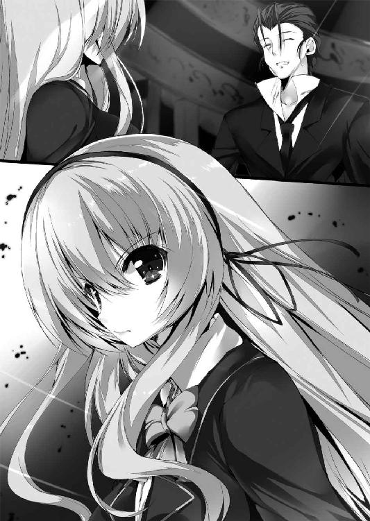
と、リードマンが去ったのと逆側の主廊がまた白い光に包まれた。現れたのは織絵を呼び出した張本人、天上寺会長だ。
「待ちましたか、ファウスト？」
「......ええ、わりと長く感じる待ち時間でした」
「......？ 貴女にしては珍しく不機嫌ですね？」
不思議そうに首を傾げる会長に織絵は首を振る。
「すみません、なんでもないです。それで、お話っていうのは？」
「いくつかあるが......とりあえず些事からいきましょうか。トロワが逸って一年生とやり合ったとのことです」
「えっ、ロゼが!? 直輝クンは無事なんですか!?」
軽やかな足取りで主廊を歩いてきた会長が目を見開く織絵の頭をぽんと撫でた。
「仕留め損ねたとのことなので、とりあえず貴女は安心していい」
「いえあの......それ、あんまり安心出来ないんですけど」
「織絵、戦果があればロゼは尻尾を振って紋芽に報告するであろうから、おそらく無傷と考えてよいはずだ」
「っていうか、会長......髪、ぐしゃぐしゃにしないで下さい」
「気にしなくていい。貴女が女性の嗜みとして携帯用のクシを常時持参していることを私は知っている」
「ああ、分かっててやってたんですね......」
微妙な気持ちで織絵は色々と諦める。会長のこういう態度が言って直るようなものではないことはよく分かっている。一通り撫でて満足したのか、手を離した会長が「それにしても」と息をはいた。
「一年生の幻想偽典はイデアについて記したものだ。それは言わば、プラトンとアリストテレスの合いの子と言える。なれば、彼の持つオルガノンは『万物を斬る光の剣』であるはず。その力を引き出せればトロワ相手でも決して引けは取らないだろうに、本当に彼は私を超越する可能性を有しているのですか？」
わざと値踏みをするような目を向けてくる会長に、織絵は強く頷いた。
「もちろんです。そもそもプラトンとアリストテレスの合いの子ってだけで可能性としては絶大じゃないですか」
「偽典の性能だけで私が納得することはない。私に似た種類の人間はやはり私と似た種類の体験をするのだろうから。見たいのは彼個人の真価ですよ。果たして、彼は超人たり得るかどうか、だ」
「直輝クンに会長の『永劫回帰』を受けろ、と？」
「もしも彼が我が『ツァラトゥストラ』の力を打ち破ったなら、私は彼に抱かれても構わない」
「ば、馬鹿なこと言わないで下さいっ」
「ふふ、貴女はつんとすましているより、そうやって頬を赤らめ焦っている方が可愛い」
からかわれてる......っ、と思いつつ、織絵は髪を直して大聖堂の奥へと目を向けた。
そこには祭壇に鎮座する巨大なパイプオルガンと、そしてこの世のすべての幻想偽典を生み出した存在、無数の鎖に繋がれた銀髪の少女──アリストテレスがいる。
「会長の求めるものとはやっぱりまた違うんでしょうけど、でも直輝クンにはもう一つ大きな可能性があるんです。ねえ、メフィ？」
「うむ、妾も未確認であるが、先のキルケゴールとの戦いの折、大聖堂から舞い戻った直輝は言っていた──アリストテレスの友愛を受けた、と」
「なんだと──？」
会長の目が突然鋭く細められた。こぼれ落ちた声にはわずかにだが殺気すらこもっていた。地の底から響くような声音で会長が問う。
「我が友メフィよ、その言葉に嘘偽りはありませんね？」
「うむ？ 無論だ、嘘偽りはない。だが......どうしたのだ、紋芽？」
「会長......？」
眇められた会長の視線は織絵の先、アリストテレスへと向けられた。
「ファウスト、私が貴女をここに呼んだのはアリストテレスと一年生の因果関係を確認するためでした。だが、どうやらその一端は掴めたようだ。事態は私の予想以上に差し迫っている」
「事態が差し迫っているって......どういうことですか？」
「四月、貴女が一年生と共にキルケゴールと相対していた際、私と執行部員の面々が何をしていたかは記憶していますね？」
「それは、はい......もちろん」
織絵と直輝が出会い、共に仮面の男に立ち向かっていたあの時、世界は紛れもない崩壊の危機にあった。
神詠域大終焉。
数百年に一度起こると預言された世界規模の超自然災厄だ。それを鎮め、世界の崩壊を回避するためにあの日、世界各地の姉妹校からトップクラスの偽典詠士たちが集い、『最果ての七柱』を中心としてその災厄に立ち向かった。
「古代の哲学者アリストテレスは次元の最外層から第五元素を用いて天体世界を円環させる存在のことを『不動の第一動者』と名付けた。神詠域大終焉とは詰まるところ、この未知なる『不動の第一動者』の変遷だ。その回避は大聖堂のアリストテレスにより産み落とされた幻想偽典でしか成し得ない」
「それは知っています。ただの保持者には知らされない神詠域大終焉の情報も、執行部に所属することになった偽典詠士には開示されますから。まさか自分が生きてる時代にそんな災厄が訪れるなんて思いませんでしたけど......」
「そうでしょうね。他の多くの者もそうであったでしょう。貴女は四月の際にはもはや寿命が近づいていたため、私の判断で学園に残しましたが、あの日あの場所で多くの未来ある偽典詠士が勇壮に災厄に挑み、そして──命を落としました」
「............」
「トロワなどはとくに心を痛めていたようです。あの子はあれで心根が弱く優しい。だからこそ、どうしても看過出来ないのでしょう。あの災厄と同じ、終焉の二文字を冠する八番目の少年を」
「でも......っ」
思わず声を荒げて織絵は言う。
「古来から伝えられている神詠域大終焉と禁忌の八人目の預言はまったく接点がありません！ いくらあの災厄の後でもその二つを無理に関連づけるなんて......っ」
神詠域大終焉に関してはかつて実際にそれが生じた際の記録が残っている。だが禁忌の八人目が現れたのは歴史上初めてのことで、もちろん記録など存在しない。
さらにはたとえ禁忌の八人目が終焉を司ると言われているものであったとしても、神詠域大終焉はすでに会長たち『最果ての七柱』の手で回避されている。直輝を危険視する根拠になどなり得るはずがない。
「確かに終焉の二文字を気にするトロワと、それが無関係であると断ずる貴女の議論は徹底して平行線となるでしょう。なぜなら、禁忌の八人目が司るという終焉の実態を知る者が誰もいないのだから」
そう言うと、会長は再びぽんと織絵の頭を撫でた。
「え......」
会長のその態度に織絵は息をのむ。頭を撫でるというのは、不器用な会長が主に誰かを慰める時に言葉より明確に思いを伝えるためにする仕草なのだ。
まさか、と呟いた声はひどく強張っていた。
「......会長は知ってるんですか？ 禁忌の八人目が司るっていう、その終焉の実態を」
「今から語ることは世界で七人の人間しか知らぬ、この世の真の理です。本来は門外不出の秘中の秘。だがかの少年の描く未来が正しい、そう信じる貴女になら語りましょう」
そうして、頂点に君臨する力を持った彼女は言った。
「──世界を捨てる覚悟で聞きなさい」
＊ ＊ ＊
大桟橋から走り続け、高等部にまで戻ってきた直輝と琉音は木陰にあるベンチへ崩れるように座り込んだ。
「追ってこない......もう大丈夫かな」
「うん、ロゼさんの能力は固定砲台みたいなものだから、ここまでくれば安心だと思う」
互いに大きく息をはいて緊張を解くと、琉音が懐から一冊の本を取り出し、おずおずとこちらに差し出した。
その本には題字がなく、ページをめくることすら許さないかのように両端に金属製の留め具がつけられている。表面は一切の歪みなく、どこまでも白い。直輝も最初に一度だけ手にしたことがある、大著になる前の空白の幻想偽典だ。
「これがあたしの幻想偽典。見た通り、まだどんな大著にも変化してない。なんの能力もないし、共鳴結界にも反応しない。もう何ヶ月も特保で訓練を受けてるけど、ずっとこの状態なんだ。ロゼさんが言ってた、大桟橋事件の時に持ち場を離れて逃げ出したっていうのも本当。敵前逃亡の臆病者で、偽典もろくに変化しない落ちこぼれ。それが、本当のあたし」
空白の偽典を胸に抱きしめて、泣きそうな顔で琉音が深々と頭を下げる。
「あたしは選ばれた執行部員じゃなくて、志願すれば誰でも入れる支援部の人員です。臆病者の落ちこぼれがあたしです。......ごめんなさい、あたしは直輝さんに嘘をついていました」
少女の震える肩を前にして、直輝は少し目を伏せた。
「......琉音は、どうして俺を手伝ってくれようと思ったの？」
「それは......」
「琉音の本当を教えてほしい」
「あ......」
顔を上げ、おずおずと琉音は口を開く。
「......七色の光はあたしにとっての希望だから」
「うん。そう教えてくれた。あの時、俺に掛けてくれた言葉が本物だって俺は知ってる」
「......っ、あたしは──」
堰を切ったように琉音は話し出した。
それは、悪夢の光景に七色の光が降った日のこと。
──そもそも時路琉音はなんの変哲もない少女だった。生まれも育ちも人並みで変わったことなど何一つない。普通の家庭に生まれ、普通に小学校を卒業し、この学園の中等部に入ったのも単なる行きがかりで、とくにこれといった理由もドラマも存在しない。
だから、特保が接触しきてこの世に幻想偽典という神秘があり、自分がその保持者になれると知った時、世界が変わるかもしれないという期待感で胸がいっぱいになった。
だが、そんな胸の高鳴りはすぐに自分への失望へ変わった。
幻想偽典を手にした者にとって、その瞬間から偽典こそが生き方の中心となる。同じ時期に訓練を開始した同期たちは程なくして空白の偽典が大著に変わり、次の段階である偽訳解放に至るための訓練を始めた。だが、琉音だけはいつまでたっても偽典が大著に変わらない。人並みだった人生は落ちこぼれの人生に変わった。
焦りを隠すように支援部に志願した。基本は偽訳解放を成せる者たちの集まりだが、偽典が空白の者でも雑用ぐらいはこなすことが出来る。まわりの目は冷ややかだったが、ただひたすらに任務をこなした。
そして、その日が訪れる。
保持者たちの中でも記述の増加に貪欲で事あるごとに小競り合いを繰り返していた二つの急進派派閥がとうとう正面から衝突するという情報が執行部に入った。支援部は執行部の手足となって動く下部組織だ。開戦の場所と目される大学部の大桟橋に人員を配置し、その瞬間を待った。
計画では、双方の派閥が現れ、戦闘が始まる直前を狙って執行部員が間に入り、争いを止める手筈だった。
けれど漁夫の利を狙う者はいつでもその機会を狙っている。双方の派閥の共倒れを画策した第三勢力が支援部へ妨害工作を行い、指揮系統がバラバラになった。
孤立した琉音の前で戦闘が始まる。否、それはもはや戦闘ですらなく──凄惨な殺し合いだった。
一方の長である椿姫は赤と白の美しい花弁を吹雪のように舞わせ、愚かな男共を次々と血の海に沈めていく。もう一方の頭であるカルメンは情熱的な舞いで仲間たちの想念を焚きつけ、ただでさえ強力な保持者たちをさらに強靭な戦士へと組み替えていく。
敗北したのは、椿姫だった。
花の名を冠した姫君が自らの流す血と敵から浴びた返り血の中で沈んでいく。それを抱き留めた彼女の仲間が身を裂くような絶叫を挙げた。
この世のものとは思えぬ光景、そしてこの世のすべてを憎み恨むようなその叫びに、琉音の恐怖が限界を越えた。泣きながら駆け出す。一秒でも早くこの地獄から遠ざかりたかった。
しかし、不用意に飛び出した琉音の姿は殺し合いの最中だった保持者たちの的となる。橋の上から幾多の力がこちらへ放たれた。ああ、死ぬんだ......と思った。諦めに彩られた絶望が口から漏れた。
その瞬間、天から降り注いだのは光。この場のどんな偽典の光よりも強く輝く、七色の光。橋の上でこちらを狙っていた保持者たちが一瞬にして吹き飛ばされて、地に落ちた。降り注ぐ無数の光の矢は、まるで爆炎を呼ぶ雨のよう。
生徒会執行部、天上寺紋芽会長。
落命した一人の姫君を前にして、悠然と降り立った彼女は言った。
「花とは勇気だ。貴女が命を懸けて咲かせたその道は、美しく永劫の輝きであることだろう」
──ああ、それならあたしには一生、花なんて咲かせられない。
恐怖に震えて逃げ出したこの命は、あまりに小さすぎて、救ったことすらあの人は気づいていない。
時路琉音にとって、七色の光は恐怖のどん底から救ってくれた希望そのもの。だが同時に、決して触れることの出来ない遥かな高み。でも、だからこそ──。
「同じ七色の光を持つ直輝さんの姿を見つけた時、そばに行きたいと思ったの......。あの人の目に留まるような花にはなれないあたしでも、七色を持つ直輝さんの役に立てたなら今度こそ何かに変われるかもって、そんな気がして......」
唇を震わせながらそう言って、琉音は顔を伏せた。
「そっか......」
直輝は琉音の抱いたその感情をよく知っている。それは見上げた憧れへと届かぬ者が抱く痛みだ。大切な人を守りたくても守れずにいる、日比野直輝が抱える痛みと同種のものだ。だから──。
「出来るさ。世界で一番綺麗な花を琉音ならきっと咲かせられる」
精一杯、背中を押すように少女の髪をくしゃりと撫でた。
「え......？」
「大桟橋でも言ったろ？ 俺さ、一人じゃ何にも出来ないんだ。琉音がいなかったら、きといまだに職員室で担任の先生と言い争ってた。琉音がいてくれたから、俺は今もなんとか前に進めてる。あの時、職員室で俺に声を掛けてくれた琉音の勇気が俺をここに連れてきてくれたんだ」
「直輝さん......」
「だから、大丈夫だ。琉音はきっと目指す場所に辿り着ける。理想と共に生きるプラトンが言うんだ、間違いない」
「なんだか......直輝さんってちょっとだけ会長さんに似てるね？」
「え、そうかな？ 個人的には、あんまり嬉しくないんだけど......」
「あたしとしてはほぼ最上級の褒め言葉だよ」
はにかむような笑顔を見せて、琉音が両手を広げた。そのままステップを踏むようにベンチから立ち上がる。
「あたしね、大桟橋事件で助けてもらったあの時から、ずっと会長さんに憧れてるんだ。強くて、凜々しくて、澄み渡る空みたいな人。あたしもいつか自分の大著を引き当てて、会長さんみたいになれるかな？」
「なれるよ、きっと。琉音ならなれる」
「えへへ、ありがとっ」
小さく息をはいて、直輝もベンチから立ち上がる。
「じゃあ、告白する。俺もさ、いつか織絵先輩みたいになりたいんだ。大切なものを守る力を持っていて、守ると言い切れる心を持ったあの人みたいに」
「......そっか。じゃあ、頑張んなきゃね、あたしたち。どっちが先に辿り着けるか、競争だね」
「うん。そしてそのためにも、まずは──幻霧の爆弾魔だ」
直輝がそう言うと、意を決したように琉音も頷いた。
「うん、あたしももう逃げないよ。最初は幻霧の爆弾魔が大桟橋事件の生き残りで目の前に現れたらどうしよう、ってずっと怖かった。でも今は戦いたい。次の悲劇が起きる前に犯人を捜し出して止めてみせる、それも戦いだって直輝さんが教えてくれたから」
「よし、じゃあ改めてよろしく、相棒」
軽く拳を握って差し出すと、しばらく目をぱちくりしてから、にっと笑って琉音もこつんと小さな拳をぶつけてきた。
「うん、よろしく。相棒さん！」
ふわりと風が吹いた。停滞のない軽やかな風だ。
「じゃあ次はどうする？ ロゼさん──いやあんなことあったし、同学年だから敬称略でいいか。──ロゼの言ってた橋を落とせば幻霧の爆弾魔が出てくるかも、って話はどう思う？」
「ちょっと乱暴すぎると思うし......図書室で直輝さんにちょっかいかけてきたのに大桟橋には現れなかったことを考えると、幻霧の爆弾魔はやっぱり爆破する順番みたいなのを優先してるんだと思う」
「だとすると、ロゼが橋を落としても出てこない可能性の方が高いわけだ」
「どっちにしろ偽典の力で橋を壊しても共鳴結界で修復されるから、何か特別なこだわりとか思い入れがないと意味のない行為だしね。その辺は幻霧の爆弾魔本人にしか分かり得ないことだから、橋の破壊はこっちがやるにはやっぱり現実味のない行為だと思う」
「だとすると、俺たちがこれからやることは......」
「うん、大桟橋事件の生き残りの線で進めよう」
琉音の口調に確かな決意を感じて、直輝も頷く。
「分かった。でも椿姫とカルメンの派閥の保持者たちはどっちも会長にやられて、ほとんど学園を去ったって話じゃなかったっけ？」
琉音の話にあった第三勢力の狙い通りに会長の力でどちらの派閥も解体されたはずだ。戦闘が始まる前ならば執行部員を挟んで話し合いも出来ただろうが、死者まで出てしまえば力ずくで止めるしかなかったのだろう。その第三勢力とやらはなんの犠牲も出さず、見事に漁夫の利を得たことになる。
幻霧の爆弾魔が大桟橋事件の生き残りだとするならば、奴は派閥の解体後も学園に残った保持者だということだ。しかし派閥自体がもう存在しないなら、当時の構成員を調べるのは難しいかもしれない。執行部になら資料なども残っているのだろうが、今の自分たちに見せてもらえるかどうかは分からない。
「それとも......残ってるその第三勢力を当たればいいのかな？」
「ううん、その第三勢力も企みを看破した会長さんに叩き潰されちゃったから、今はもうないんだ」
「え......じゃあ、手がかりなし、か」
会長の通った後はぺんぺん草一つ生えないのか、と唖然とする直輝へ琉音が首を振る。
「よく考えて、直輝さん。当時の状況を確実に知ってる人にあたしたちは心当たりがあるよ」
「......？ ──あっ、まさか」
出来ればそれはちょっと......と言いたげな直輝に対して、すべて分かった上で琉音がにこっと笑う。
その視線が向かう先は学園のどこからでも見渡せる最も空に近い建物──生徒会執行部が有する時計塔だ。
四章 ─真実の先で彼女は失う─
中央記念図書館に建つ尖塔の一角に織絵はいた。学園を睥睨出来る塔の先端に立って、風が髪を煽るのに任せている。
「──永遠の創造とはどういう意味だ。創造したものを無に突き落とすとは」
「......『ファウスト』第二部の一節か。まさしくそんな気分だな」
弓川織絵は今日、世界の真のカタチを知った。そして、禁忌の八人目が司る、その終焉の真相も。
「世界か、直輝クンか。こんなに早くその選択を迫られるなんて......」
唇を噛んで目を伏せる。空を見渡しても、答えなんてどこにもないのだ。
＊ ＊ ＊
さて、ではどうやって会長から生き残りの保持者たちの情報を得ようかと思案していると、横を歩いている琉音が携帯をパタンと閉じて言った。
「会長さん、手書きでよければ生き残りの保持者たちを今すぐリストにしてくれるって。あたしが直輝さんといることも、ロゼさんから聞いてるみたい。ちょうど時計塔に戻ったところらしいから、このまま取りに行こう？」
「......え？」
極めて自然体な琉音と共に豪華な一階ロビーを抜け、高速エレベーターに乗り、テラス兼展望台を過ぎて螺旋階段を上った末、生徒会室に辿り着く。ちなみに地上階では明日の総会の準備をやっているらしく、様々な機材や物資の搬入が始まっていた。
「きましたか、琉音。そして一年生。これが大桟橋事件以降も学園に留まっている保持者たちのリストです。上手く役立ててくれることを祈っています」
そう言って上質な紙に達筆な字で書かれたリストを手渡してくれる。そこに並んだ名前は全部で四人。拍子抜けするほどあっさりと手に入ってしまった。
「えっと......こんなに簡単でいいんですか？ もっとなんか壮絶な試練とか交渉とかを想像してたんですけど」
警戒心を解かないまま、直輝は思わず探りを入れる。もちろんいつ槍が突き出されても対処出来るように細心の注意をしたままだ。
だが目の前の会長はそんな直輝の様子を気にもせず、不思議そうに首を傾げた。
「......？ これはまた異なことを言う。貴方が幻霧の爆弾魔を追っている行為は本質的にはこの学園の生徒たちを守るためのものでしょう？ であれば、私がそれに協力することに否を唱えるはずがない」
「いや、でも俺と会長はある意味、冷戦状態で......」
「あとはそうですね、メル友である琉音の頼みであれば、私も無下に断れない」
「メ、メル友？ 琉音と会長ってそんな仲いいんですか......っ？」
「そだよ？ 言ってなかったっけ？」
だからそんな怯えないで、と琉音に背中を叩かれ、なんとも言えない気持ちになる。
「とりあえずそんな情報まったく聞いてないんだけど......」
「何かおかしいですか？」
自然にそう言われてしまい、一応距離は取りながらもやや警戒を薄めて喋る。
「いやおかしくはないですが......これまでの流れ的になんかもっとこう、琉音から見た会長って遠くから眺めてるようなイメージかなと思っていたので......」
「そんなこと言ったら直輝さんと織絵さんなんて同棲までしてたじゃん」
「あれにはさしもの私も度胆を抜かれました。規律と風紀を守るべき執行部員が堂々と不純異性交遊とは、ファウストもまったく嘆かわしくも逞しい」
「あの会長っ、なんか言葉選びがおかしいですし、不純異性交遊なんてしてません！」
「貴方たちに比べれば私と琉音は至って常識的です。機械文明に疎い私に携帯電話の扱いを教えてくれたのも実は琉音なのです」
「しばらくしたら、今度はスマートフォンの使い方も伝授する予定なんだよっ。ねー？」
真顔のまま、琉音の「ねー？」に合わせて小首を傾げる会長の姿になんとも言えない気持ちで直輝は唸る。会長に常識を説かれるとは何か納得がいかない。
「さて、では琉音。隣室のパソコンに生徒たちのデータが記録されています。私が記述したリストは氏名と保持している偽典だけなので、そちらで所属を照合するのがよいでしょう」
「うん、了解っ。じゃあ、ちょっと行ってくるね。会長さん、あたしがいない間に直輝さんの偽典に手を出したら嫌だよ？」
「確約しましょう。安心なさい、私はメル友との約束は違えない」
会長が頷くと、リストを手に琉音は一旦生徒会室を出ていった。
「執行部のパソコンを使わせてもらえるなら、職員室で頼む必要なかったなぁ......」
幻霧の爆弾魔に遠回りと揶揄されたのも仕方のないことなのかもしれない。そんなことを思った矢先だ。
「さて、二人きりになってしまいましたね、一年生」
そう声を掛けられ、静かに向けられた視線に直輝はたじろいだ。淀みを許さない会長の清廉な双眸がじっとこちらを見つめている。
殺気立っているわけではない。だがそこにはまるでこちらのすべてを見通そうとするかのような底の見えない恐ろしさがあった。
「やっぱり......ここで俺の『イデアの片翼』を狙う気ですか？」
「いいえ、ファウストに対して判断を保留にすると言った約束を違えるつもりはない。今しがた、琉音とした約束も然りだ。それに個人的に私が貴方を気に入っていることも確固たる真実。愛する者には選択する時間を与えて然るべきだ」
執務机の上で手を組み、会長はわずかに目を伏せる。だがその言葉とは裏腹に会長の様子は意識して敵意を抑え込んでいるようにも見えた。
「選択......？ よく意味は分かりませんが、とりあえず俺は今ここで会長に襲われる心配はないってことでいいんですか？」
直輝がそう言うと、ふふ、と会長が唐突に吹き出した。空気が一変して弛緩する。
「それを言うのなら、貴方に襲われるのは私の方です。ファウストと話したのですよ。もしも貴方が私の能力を破ったなら、私は貴方に抱かれることになっている」
「......はい？」
何を言われたのか、とっさに分からなかった。
「え、ちょ、はい!? だ、抱かれるってどういう意味ですか!? 織絵先輩との話でってどんな状況ですか!?」
「無論、抱くとは健康的な肉体と肉体による不純で濃密なアレコレのことだ。この提案にはファウストも嬉々として賛同していましたよ？」
「そんなわけないでしょう!? 織絵先輩がそんなこと言うわけ──あ、いや、まさか」
......ひょっとして、これは先輩からの何某かの大人な駆け引きなのだろうか。
前回の事件の後、先輩からは「もう簡単には振り向かない」と宣言されている。経験薄弱な直輝としてはその時点でもうどうすればいいか五里霧中なのだが、会長からもたらされたこの話はそんな先輩からのさらなる攻勢なのかもしれない。
「いや、でもそもそも前提がおかしいですし。俺が会長の能力を打ち破るって......」
「不可能ですか？ そうなると貴方は私を超越出来ないということになるが？」
「う、それは......」
以前に会長の幻想偽典『ツァラトゥストラ』の能力『永劫回帰』は見たことがある。メフィさんによれば、その攻撃は対象にとって苦痛であればあるほど永劫に続く無限の連撃になるそうだ。そんなものを相手にしてどう戦えばいいのかなんて、正直まだ分からない。
「宜しい、では簡単に教授して差し上げましょう」
「え？」
「私の幻想偽典のベースとなった原典『ツァラトゥストラはかく語りき』がどんなものかは知っていますか？」
「ええと、名前だけなら。内容まではちょっと......」
「ふむ、まあ良いでしょう。『ツァラトゥストラ』の著者はドイツの哲学者フリードリヒ・ニーチェ。彼の後期思想を著したその書はツァラトゥストラという一人の男の半生を追う形で展開していきます。このツァラトゥストラが何者であるかという解釈については受け手によって異なるでしょう。人によっては『ワンダホゥな引きこもり爺さん！』などとのたまう愚か者もいますが......私からすれば、破壊者という言葉が最も相応しい」
「破壊者、ですか？ でも会長は学園を守る立場の人じゃ......」
直輝がそう言うと、会長は妙に苦々しい笑みを見せる。
「著者であるニーチェがツァラトゥストラに行わせようとしたこと、それは──神という概念の破壊だ。そして神に代わる新しい人々の指針として打ち立てようとしたもの、それが人を超えし者──すなわち『超人』です」
「超人......それに、神の破壊......ですか」
「そう、しかし神を信奉する者たち、とりわけニーチェの生きた近代西洋の人々にとって神という概念の破壊は痛みそのものです。ゆえにツァラトゥストラはその放浪の中で幾度となく他者を傷つけ、また自らも傷を負いながらそれでも破壊を続けていく。神による不可侵の運命によって生かされるのではなく、人が人として己の生き様を選択する者となるために。彼は言う、痛みは消えない。この世界は永劫に繰り返され、そして痛みは永劫に繰り返されるのだ、と」
「それは......」
そこまで聞いて、直輝ははっとする。会長は静かに頷いた。
「そう、その顕現が私の『永劫回帰』の能力です。私が天空に生み出す車輪、そして彼方より飛来させる矢は敵に無限の痛みを強いる。数多の保持者たちはあれを最強無比の能力だと言います。けれど私に言わせればそれは笑い話だ。本来、私の『永劫回帰』を破る可能性は誰もが有している。なぜならば、永劫に繰り返す痛みを受け入れる、その覚悟こそが『超人』へと至る道だからだ」
そうして、ようやく会長の言わんとしていることを直輝は悟った。
「痛みを受け入れ、なお進める者──『超人』に成り得る者には会長の『永劫回帰』の能力は破ることが出来る。そういうことなんですね......」
ただし、いまだかつてそれを成し得た人間はいない。永遠に繰り返される痛みを受け入れられる人間など、存在しないのだから。
「然り。私は私を破り、超人へと至る人間を欲している。メフィの口車に乗ったのもそれが理由です。私を超越する人間がいるというのなら、私は何をおいてもそれを見たい。そのためならば、私は世界の終焉すら容認してしまうかもしれませんよ？ ツァラトゥストラは超人のためならば神をも死なせる破壊者だ」
本気とも冗談ともつかない会長の言葉になんと答えていいか分からず、直輝はとりあえず視線を外へと逃がす。
「......とりあえず、最後の一言は琉音には言わないで下さい。琉音は、たぶん学園の守り手としてのあなたに憧れてるんですから」
「それに関しては私も少し気になっていた。いつの間にか貴方はずいぶん琉音と親しくなっているように見えます。友達の少ない私としては、大いに嫉妬してしまう」
「......いや、いきなりそんなカミングアウトされても。むしろ、俺には会長と琉音が仲がいいことが意外ですし」
「......あんなふうに無邪気に懐いてきてくれたのは、あの子だけなのです」
ひどく優しげな目で会長は言った。普段は厳しい顔つきをしていることが多いので分かりにくいが、意外に目の前の人は表情の豊かな人なのだと、直輝は今になって気づいた。
「私は会長として学園の守り手を務めているが、大方の保持者にとってその在り方はやはり破壊者として映るでしょう。誰もが私を恐れ、遠のき、私もまたそれでよいと考えている。そんななか......ちょうどあの大桟橋事件の後からでしょうか。小さな支援部の少女が私のそばをうろつくようになった。最初はひどく不思議だったものです。あの事件ではあの子も怖い思いをしたでしょうに、まるでその痛みを見せる様子もない」
「え、会長......、ひょっとして大桟橋事件に琉音がいたこと、気づいてたんですか？」
「......？ 貴方はたまにおかしなことを言う。私が指揮した捜査に参加していた人員をどうして私が把握していないのです？」
「あ、いや、言われてみればそれはそうなんですが......」
琉音の話では、会長はまるで支援部の一人員になど気を払っておらず、琉音の存在自体にすら気づいてないかのような感じだった。会長は傍から見ていて豪放なイメージがあるので直輝もそれを鵜呑みにしていたのだが......存外、それは思い込みなのかもしれなかった。
「私に畏敬ではなく、純粋な敬愛を持って接してくる人間は珍しい。当初こそ戸惑いましたが、今では彼女は私の掛け替えのない友人です。見なさい、一年生。私が髪を結っているこの髪飾り、これは琉音が誕生日にプレゼントしてくれたものです。これは私が友人から贈られた生涯初の贈り物だ。私にとってこの髪飾りは、ニーチェの言う『人類への最大の贈り物』に匹敵する。それ程のものなのです」
そう言って自慢してくる会長の様子は妙に微笑ましさを感じさせた。
「あの、さっきの大桟橋事件のことですけど、もし機会があったら琉音に話してあげて下さい。きっと、喜ぶと思うんです」
「ふむ？ 私は他人を傷つけることはしても、友の傷をほじくり返す趣味などないのですが？」
「傷だっていつまでも痛いわけじゃない。それが治れば、いつか良い思い出に出来ると思うんです」
「ほう、貴方の意図は測りかねますが、その言葉は澄んだ響きを持っている。頭の隅に記憶しておきましょう。ただ......」
淑やかな手が髪飾りを包む。
「その機会が訪れてくれれば、ですが」
「会長？」
一瞬、その表情に影が差した気がした。けれど、それを確かめる前に部屋の大扉が開いて琉音が顔を出す。
「直輝さん、リストの照合終わったよ！ 会長さん、悪いことしなかった？」
「無論です。この私は常に中天に掛かる陽の下を歩む者だ」
「後ろ暗いことはないってことだね、ならいいです！ さあ、行こう。直輝さんっ」
「あ、ああ......今行くよ」
張り切っている様子の琉音と生徒会室を退室する。その寸前、会長が琉音へと言葉を掛けた。
「琉音、貴女は貴女の信じた道を行きなさい。すべての語られない真実は有毒となる。だが、その毒を食むことで芽生えるものもまた美しいのだ」
「......？ ええと、会長さんが言うことってたまに難しくてあたしにはよく分からないんだけど......でも、一つ言えることはね」
ちらりと直輝の方へ視線を向けてから、胸を張って琉音は言った。
「いつかきっとあたしもあたしの花を咲かせるよっ。そのために今は頑張ろうって思うんだ！」
大きく開いた窓からいつしか夕焼けの柔らかい光が差し込んでいた。自らの弱さと過去を乗り越えようとする少女の姿はとても誇らしげで美しく、斜陽に映えるその横顔をどうしてもっと自らの脳裏に焼き付けなかったのかと──直輝はこの先、強く後悔することになる。
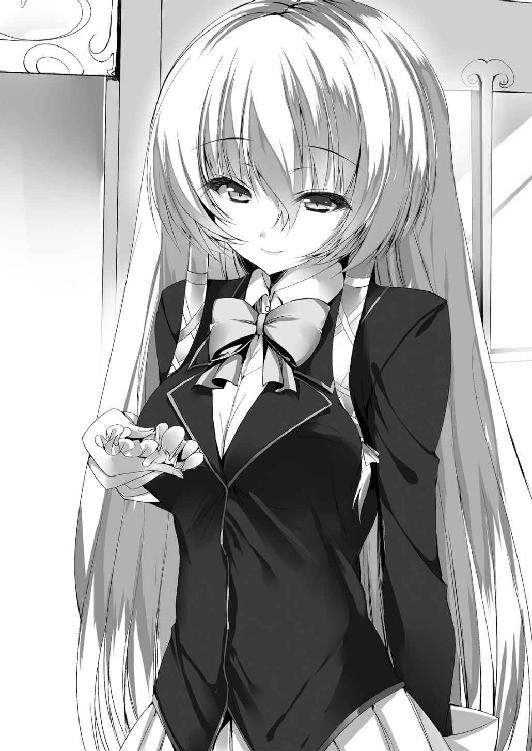
＊ ＊ ＊
「この四人の中の誰かが幻霧の爆弾魔なのか......」
下降していくエレベーターの中で直輝は改めてリストに目を通し、ごくりと喉を鳴らした。リストには保持者の名と所有する幻想偽典が記されている。
有島省吾──トーマス・マン『魔の山』
木ノ下美紀──ノヴァーリス『青い花』
朝比奈結衣──メアリー・シェリー『フランケンシュタイン』
大橋琢磨──アン・ラドクリフ『ユードルフォの秘密』
それぞれの名の横には琉音が照合してくれた所属する科や学年クラス、それに連絡先などの情報が追記されている。
「リストの最初の三人が椿姫の派閥だった人で、最後の一人がカルメンの派閥にいた人だよ」
「生き残りの四人の中で女子生徒は二人。ってことは、木ノ下美紀と朝比奈結衣のどっちかが幻霧の爆弾魔ってことかな......？」
朝比奈結衣の『フランケンシュタイン』は幻霧の爆弾魔が言っていたマッドサイエンティストに当てはまる。一方、木ノ下美紀の『青い花』がどんな内容の本なのかも気になるところだ。
「ちょっと待って、直輝さん。女子生徒二人が幻霧の爆弾魔だとは限らないよ？」
「え、でも幻霧の爆弾魔は女だよ？」
そう言ってから、直輝は情報閲覧室で生徒たちの写真から正体を探そうとした時のことを思い出す。幻霧の爆弾魔がもしも姿を変えられるなら、女子生徒だから犯人という考えは確かに早計だ。
「そうか、幻霧の爆弾魔が女に変身した男の可能性もあるんだ......。でも、ちょっと考えたくない可能性だな......」
実は男だったんですよっ、とかドヤ顔で言われたら真っ二つに叩き斬っても気持ちが晴れない気がする。
「いや、そうじゃないよ......。この四人の誰かが黒幕で幻霧の爆弾魔はあくまでただの実行犯って可能性があるってこと。直輝さん、たまに発想が怖いよ？」
「えっ、あ、そうか！ そうだよね、あはは......っ」
ちょっと呆れ果てた視線を向けられ、誤魔化し笑いをしているとエレベーターが一階ロビーに到着する。
「じゃあ、とりあえず一人ずつ連絡を取っていこうか」
携帯を取り出して直輝は一人目の番号へ発信した。電話に出た相手と慎重に会話を進めていく。当初高圧的だった相手もこちらが天上寺会長の名前を出すと途端に勢いを失くしていった。職員室では失敗したが今度は上手くいきそうだ。
「じゃあ、今から出てきてもらえますか。詳しい話を聞かせて下さい。場所は......」
どこがいいだろう、と言い淀みそうになったところで、琉音が袖を引っ張って小声で囁いた。
「正門の並木道なんていいんじゃないですかね？」
「正門の並木道で。はい、じゃあ十分後に」
緊張して電話に集中していた直輝はそのかすかな違和感に気づかなかった。
＊ ＊ ＊
全寮制のリセリア学園は夜間になると当然の如く正門が閉じられる。無論、抜け道などいくらでもあるのだが、それゆえ陽が落ちるとこの辺りはほとんど人通りがなくなった。
並木道を琉音と連れ立って歩きながら、そういえば入学式の時はここの桜が満開だったなと思い出す。
「どうしたの、直輝さん？」
「あ、いや......春に見たここの桜がすごかったな、と思って。花だけじゃなくてなんか色々オブジェとかあって豪華絢爛だったような......」
直輝がそう言うと琉音が嬉しそうに頷いた。
「あの飾り付けね、会長さんの鶴の一声でやることになったんだ！ せっかく新入生を迎えるのだから派手にいきましょう、って。あたしも色々手伝ったんだよっ」
「へえ、そうだったんだ。明日は総会があるって言うし、生徒会もただ戦ってるだけじゃないんだなぁ」
「そりゃそうだよ。表向きは一応普通の生徒会だもん。ま、会長さんが行事好きっていうのもあるかもだけど。毎月何かしらの行事があるもんね。会長さん、あの野外音楽堂で歌ったりもしたことあるんだよ？」
「会長って歌上手いの？」
「うんっ、すっごい微妙！」
「あ、微妙なんだ......」
それでも自信満々に歌っているところがイメージ出来てしまうのが恐ろしい。
そうやって話してるうちに並木道の半ばまできて、さて、と直輝は足を止める。琉音が世間話に付き合ってくれたおかげでだいぶ緊張が解れた。
「もしかしたら戦闘になるかもしれない。琉音はここで待っててくれるかな？」
「やっぱり足手まといになっちゃうよね......」
「琉音......」
「分かってるっ。武器を持って立ち向かうだけが戦いじゃないもん。あたしはここで待ってるよ。でも何かあったら絶対呼んでね。あたし、すぐに助けに行くから！」
「うん、ありがとう」
真っ直ぐにそう言う琉音に頷きを返して、直輝は歩を進めた。ひょっとしたらこれから会う相手が幻霧の爆弾魔を呼ぶかもしれない。それでなくても相手が偽典を出して戦闘になる可能性もある。
（それでも、俺は一人じゃない......）
そう思えるだけでとても心強かった。
しばらく歩くと並木道の入り口に辿り着く。そこはちょっとした広場になっていて、正門が建っており、そして──待ち人がいた。
高等部工学科二年五組、有島省吾。トーマス・マン『魔の山』の保持者。元椿姫の派閥の構成メンバー。リストの最初にいた人物だ。
「まさか話題の『世界を規定せし書』の偽典詠士様に呼び出されるとはなぁ。あんたが執行部入りするって噂は本当だったんだな。これも運命の巡り合わせかね。はっ、やってらんねえなぁ」
有島は垢抜けた印象の生徒だった。大きく胸元を開けたシャツに耳元にはピアスがついている。気後れしそうになりながら、直輝は意識してはっきりと喋る。
「とりあえず、たぶん俺は偽典詠士じゃないです。どういう基準でそう呼ばれるのかは知りませんけど、言われたことはないんで」
「どうでもいいよ、そんなこと。で、何よ。椿姫の下にいた奴らの情報が知りたいんだっけ？」
有島には大桟橋事件の事後調査をしている、と話してここにきてもらった。幻霧の爆弾魔のことは伝えず、当時の生き残りである彼らが今どうしているかを調査するという体裁を取っている。これは支援部である琉音のアイデアだ。話の中で有島に怪しいところが見つかればよし、そうでなくばさらに踏み込んでいくつもりだ。
「ええ、執行部のケアの一環なんです。大桟橋事件に関わった人たちがその後、平和に学園生活を送れているかの聞き込みをしてます。率直に言ってしまえば、当時の遺恨からあなた方が再び争い出さないかの調査ってとこです」
「はっ！ よく言うね。また争うかどうかなんて言われたってさ、俺らの中で一番それをやりそうだったキルケゴールの旦那をぶちのめしたのはあんたじゃないか」
「は......？」
予想外の名前が出てきて、一瞬思考が止まってしまった。その顔を見て、有島が眉をひそめる。
「なんだよ、その顔。椿姫の片腕だったキルケゴールの旦那が『死に至る病』事件を起こしたから、他に危なそうな奴がいないかって洗い出しを始めたんじゃないのか、あんたらは？」
「キルケゴールが椿姫の派閥の人間だった......？」
四月に相対した仮面の男のことを思い出す。
そうだ、言われてみれば確かにキルケゴール──緒方成一は自ら言っていた。偽典の争いに敗れた友が死に、その悲劇によって絶望による救済の道を見出したのだ、と。
「そうか、あいつの言っていた友っていうのは、椿姫のことだったのか」
「......おい、待てよ。なんであんたがそれを知らない？ 旦那を倒してこの学園から追放した張本人のあんたが、なんでその程度のことも知らねえんだ！」
「──っ!?」
詰め寄ってきた有島に胸ぐらを掴まれる。
「ったく！ 執行部ってのはみんなそういう奴らなんだよな!? あの時もそうだったよ！ 椿姫はカルメンの卑劣なやり方に義憤を覚えて立ち上がったんだ！ 正義は俺たちにあった！ けど天下の会長様はそんなことに見向きもしない！ 卑怯者のカルメン一派も正義を掲げて立ち上がった俺たちも、みんなまとめてゴミみたいに消し飛ばしやがった！ お前らはいつだってそうだ！」
固い拳が頬を強かに打った。殴られて地面に倒れた直輝の上にさらに有島は馬乗りになる。
「大事の前の小事っての？ お前ら執行部はいつも天秤に掛ける。助けるべきものを秤に掛けて、軽い方は見向きもせずに捨てるんだ......っ。そうだろ!? そうだって言えよ！」
鬼気迫る表情の相手が再び拳を振り上げる。だが直輝の頭の中は不思議と冷静だった。
──ああ、よく似てる。
「......守りたかったんですね、椿姫のこと」
「......っ」
振り上げた拳が止まり、表情が崩れた。
「......分かります。俺も大切な人を守れなかった。雪乃──妹が眠りに堕ちる前に助けなきゃいけなかったのに、それが出来なかった。四月の時もそうだ。俺は織絵先輩を二度も守れなかった」
見上げた星が綺麗だった。織絵先輩が『ファウスト』から還ってきてくれなかったら、きっと自分もあの仮面の男のようになっていたのだろう、と今になって思った。
「──でも、キルケゴールを倒したことが間違っていたとは思いません。無関係の生徒たちを眠りに堕としたあいつは叩き潰してしかるべき相手だった」
「......そうだな。さすがにありゃやり過ぎだった。街一つを茨が覆った時は学園から見てた俺も焦ったよ......」
有島曰く、あの時学園にいた保持者たちには相当緊張が走っていたらしい。基本的に記述を増やす行為には互いに不可侵を貫く保持者たちではあるが、キルケゴールの最終的な行動は常軌を逸していた。執行部が不在の中、キルケゴールを止めようとする一派と不可侵の原則をあくまで唱え続ける一派とで意見が対立し、事件の解決がもう少し遅ければその両者で大規模な抗争に発展していただろうとのことだ。
「本当は分かってたんだ......暴走した旦那を止めるのは仲間だった俺たちじゃなきゃいけなかった。でも間に合わなかった。迷ってるうちに気づけば全部終わっちまった......」
直輝から離れて、有島はアスファルトの上に座り込む。その目に映っているのは拭いきれない後悔だった。
「......でさ、実際あんたは一体何が知りたいんだ？ 本当のところ、あんた執行部員ですらないだろ？ なんとなく雰囲気が違う。あいつらよりだいぶ甘ちゃんだ」
「......一応、最初の最初は執行部に入るって話だったんですけど」
体を起こして直輝は改めて有島と向き合った。
「知りたいことは最初の質問と変わりません。当時の事件で生き残った保持者たちの現在の状況です」
「いねえよ。あの事件に生き残りは一人もいない」
「え......？」
不可解な返答に眉をひそめる。すべてを諦めた顔で有島は言った。
「俺たち椿姫の一派も、それからカルメンの一派の奴も、あの事件に関わってまだ学園にいる人間は誰一人、もう幻想偽典の保持者じゃない。焼かれたんだ。ここ数日でいきなり襲われて、持ってた偽典を灰にされた。俺たちの偽典はもう二度とこの世に現界しない」
「襲われた......っ!? ここ数日で？ 一体、誰に......っ!?」
「分からん。少なくとも俺たちが抗争やってた頃には見なかった顔だ。ただ奴は言ってたよ、自分は悪意の代行者だって。あの事件で振り撒かれた悪意を、自分は再びばら撒きにきたんだって」
「悪意......っ、それはどんな奴でしたか!?」
「空の色を手酷く塗り固めたような、藍色の髪の女だった」
「──幻霧の爆弾魔だ......っ！」
直輝の声が夜の空気に木霊した。
「あんた、あの女を追ってるのか？ 幻霧の爆弾魔？ じゃあ、あいつが噂の爆破騒ぎの犯人なのか......」
「そうです！ 俺はあいつの凶行を止めなきゃならない。でも正体が掴めず、偽訳解放前の姿も分からなくて、それで手がかりを求めてあなたのところに......っ」
幻霧の爆弾魔は大桟橋事件の生き残りではなかった。
だが奴はこの数日でその生き残りたちを襲って偽典を抹消している。当時争った派閥の人間ではなくても、幻霧の爆弾魔の正体は大桟橋事件と無関係ではないのだ。
「幻霧の爆弾魔の素顔なら分かるぞ」
「──っ、え......っ!?」
「俺には素顔のまま接触してきた。それで、自分が誰だか分かるかって訊いてきたんだ。知るかボケって答えたら、その場で偽訳解放して姿を変えた。で、戦って......結局、俺は負けたんだがな」
突然目の前に差し出された大きな手がかりに声も出せず、直輝は有島の腕を掴んだ。
「そりゃ協力してほしいって意思表示か？」
「はい、そうです......っ」
「でもな、情けねえ話だが俺はあいつが怖い。出来ればもう二度と会いたくない」
「守ります！ 決してあなたに害が及ばないように俺が守りますから......っ」
「おいおい、そりゃ簡単に言っていい言葉じゃねえだろ。俺にとっても、あんたにとっても」
「それでもっ、それでも俺は......っ、あの、その......っ！」
「落ち着けよ、まったく」
面倒くさそうに苦笑して有島は頭をかいた。
「生徒たちの顔写真付きのデータを用意しろ。それ見て犯人の素顔を教えてやる。俺がしてやれるのはそこまでだ」
「はいっ。大丈夫です、それならすぐ閲覧出来ますから！ 俺も一度高等部のデータを見たんです。すぐに準備出来ます！」
ついに決定的な手がかりを掴んだ。焦る手で携帯を取り出し、すぐ担任に連絡を、いや会長にまた頼めばいいのか、じゃあまず織絵先輩に会長の連絡先を訊いて......とガチャガチャと携帯をいじる。
「あー、ちなみに違うぞ。必要なのは高等部のデータじゃない。──中等部のだ」
「え？」
直輝が訝って訊き返そうとしたのと同時、背後から聞き慣れた少女の声がした。
「直輝さんっ！ 今すごい大きな声で、幻霧の爆弾魔だっ、って叫んでたけど、どうしたの!? 大丈夫!?」
琉音の声だ。思わず挙げてしまったさっきの叫びを聞いて駆けつけてくれたらしい。大丈夫だよ、と言おうとして......目の前の有島の表情にぎょっとする。
ピアスの目立つその顔が恐怖の形に歪んでいた。
「有島さん......？」
「なん、なんでこいつがここにいるんだよ......っ!?」
「こいつって......え、琉音がどうかしたんですか？」
有島の見ている方を振り向き、直輝は目を疑った。
「────」
そこにいるのは確かに見慣れた琉音なのに、その表情が──まったくの別人だった。
こちらを見ているのは、あの時、時計塔で見た憎悪のこもった泣きそうな眼差し。
「馬鹿野郎っ、こいつだ！」
その手にあるのは空白の偽典。まだなんの色も持たないはずの本。だが今、その縁が強い藍色に輝いている。
「このガキが幻霧の爆弾魔の正体だッ！」
「な......」
何を言われたのか分からなかった。分かりたくなかった。
直輝の声は虚しく夜の空気に溶け、少女の表情は三日月のような凄惨な笑みへ。そしてあの時空耳だと思った言葉が今度こそ琉音の唇から紡がれる。
「死んじゃえ──お兄さん♪」
その瞬間、空白の偽典にゴォゥと題字が浮き出し、放つ光が一気に力を増した。
「あんたも偽訳解放しろ！ 殺されるぞ!?」
「──っ」
有島の叫びに条件反射で直輝は偽典を現界させる。力ある言葉は両者ほとんど同時に叫ばれた。
「「──偽訳解放ッ！」」
偽典から結晶の剣を引き抜きながら、直輝は突きつけられた現実に顔を歪める。
そうだ、図書室で幻霧の爆弾魔が現れる寸前、自分は奴の偽典がなんなのかという真実に辿り着いたはずだった。なのに、見逃してしまった。
もしも、かの物語が奴の偽典の原典であるのなら、幻霧の爆弾魔が姿を変えることに説明がつく。野外音楽堂で奴自身が口にした、マッドサイエンティストな主人公という条件にも当てはまる。
図書室では琉音と入れ違いに奴は現れ、自らけしかけたくせに、琉音が隣にいた大桟橋ではまったく姿を見せなかった。──それがすべての証左になっていた。
「さあ、よおく見て下さいね......っ！」
その口から出る言葉はすでに琉音のものではない。同時、藍色に光る空白の偽典が在るべき姿を取り戻す。
──それは霧の街ロンドンを舞台とした物語。
飛び抜けた頭脳を持つ医学博士がその長年の研究と運命の悪戯によって作り出したのは一つの薬品。
それにより彼の長年の憧れを叶える人格は生み出され、幻のように正体の掴めぬ悪意の化身として霧の街を震撼させる。
表と裏。光と闇。陽と陰。
別たれた二つの人格の悲劇を謳うことにおいて、この世で最も知られたその書の名、それは──。
「──ロバート・ルイス『ジキルとハイド』！」
その瞬間、巻き起こった風が並木道の葉を一斉に空へと飛び散らせた。眩い光の中で少女の髪は藍色へと染め上げられ、小柄だった肉体は直輝と同等の身長へと一瞬で様変わりする。
親しみやすさのあった顔は他者への嘲笑を貼り付けたものへ変わり、中等部の制服も藍色の光に伴って高等部のそれへと変化した。そしてその両手に現れたのは、貴石の指輪。ジキル博士からハイド氏への如き、完全なる変容。
高らかな声は最大限の悪意を持って少年を嘲笑う。
「ハローハロー、ご機嫌いかが？ 月夜の晩に醜いお供、紅蓮の悪意がお兄さんを傷つけるために舞い降りましたよ？」
両手を合わせてキンッと貴石を砕くと、宿敵が藍色の霧を解き放つ。それは月明かりの仄かな光を反射させ、ほんの瞬きの間だけ偽りの七色の輝きを見せる。
「さあ、失意と後悔ばかりの愉快な宴を始めましょう！ おお、ペデ・クラウド！ ようやくあなたの処罰が足を引きずりつつ訪れたのだ！ それでは、イッツショータイム♪」
目も眩むほどの藍色の爆発。かくして葉桜の茂っていた並木道は、一瞬にして焦土に変わる。
五章 ─止め処なく降り注ぐ、幾千の失意─
有島を抱えた直輝はぎりぎりで爆破の包囲を突破し、地面に転がった。
「有島さん、逃げて下さい！ とにかく少しでも遠くへ！ ここは、ここは俺がなんとかしますから......っ」
必死の形相でそう言うが、その目には明らかな狼狽が見て取れる。
「そら逃げるさ、逃げるけどよ......でも、あんたはどうするんだ!?」
「お、俺は......」
「よく分かんねえけど、あいつ、あんたの知り合いなんだろ!?」
「俺にだってどうしたらいいか分からない！ でも、とにかくあなただけには逃げてもらわなきゃ......っ」
言葉と共に有島の肩を掴んだ手へ悲痛な力がこもる。
「俺はあなたのことを守るって、そう言ったんだから......っ。お願いします、約束を果たさせて下さい......っ」
「......分かった。死ぬんじゃねえぞ？」
頷くと、もう振り返ることなく有島が走り去る。
それと同時に、辺りに場違いに陽気な鼻歌が流れ出す。──それは、ロンドン橋。瓦礫と化して落ちる橋の歌だ。藍色の女が悠然とやってくる。燃え散る葉桜を背にして。
「ヒュー、かっちょいい！ 自己犠牲ってやつですか？ 尊いですねぇ、でも今時そういうの流行りませんよぅ？」
「幻霧の爆弾魔......っ、お前は......琉音、なのか？」
「ええ、琉音ですよ。あたしは正真正銘、時路琉音です」
「......っ、いや違う！ お前の手にしていたのは幻想偽典『ジキルとハイド』、だったら......っ」
「なんだ、分かってんじゃないですか。ま、そゆこと。あたしは時路琉音というジキルに対応したハイド、幻想偽典が生み出した仮想人格です」
「一体、いつから......？」
「アハッ、そんなの決まってんじゃないですか」
目の前、三メートルにまで迫った足取りがふいに加速した。──速い。瞬く間に懐に飛び込まれ、鋭い手刀が直輝の腹に直撃する。
「最初から♪」
「がぁ......っ」
浮いた体に今度は斜め方向からの回し蹴り。オルガノンで受けようとしたところ、軌道が曲がって強かに肩を蹴り飛ばされる。体勢を崩した直輝の目の前にかざされる右手、そこには爆破の霧を生む貴石がある。
「この......っ」
「──ダメダメ、超遅ーい！」
避けることも許されず、掴まれた胸ぐらに滲む藍色の霧。それは一瞬で雨へ変わり、目の前で爆炎が炸裂する。
「──っ!!」
視界が明滅し、地面に倒れる。偽訳解放の身体強化をもってしても防ぎきれないダメージだ。
「音楽堂でお兄さんを標的にすると決めてから、あたしは表の人格の琉音をこっそり裏から操って職員室へ誘導しました。どっかしらで接点作れば、きっと琉音はお兄さんに近づきたいと思うでしょうから。結果はご承知の通り。琉音の中からあたしずーっと見てましたよぅ？ 図書室でわざわざ言ってあげたでしょう？ 遠回りし過ぎだから発破かけてあげにきたって。それってつまり近くからずっと見てるぞってことじゃないですか、なのに気づいてくれないし？ お兄さんたら捜査の手際が悪くて悪くて、琉音がいなかったらまったくどうしてたのか。一人じゃ何にも出来ないって本当だったんですね？」
「......幻霧の爆弾魔、いや──仮想人格ハイド。琉音は、お前のことを......」
「知りませんよ。知ったらどんな顔するでしょうねぇ。落ちこぼれだと思ってた自分の幻想偽典がもうとっくの昔に大著になってて、いつの間にか自分があちこちぶっ壊してる爆弾魔になってるなんて知ったら」
「く......っ、ふざけんなぁ──っ」
「ふざけてなんてない、ですよ！」
指で地面をかきながら立ち上がろうとしたところを、幻霧の爆弾魔──否、ハイドに頭を踏み落とされる。それは一度では収まらず、溢れる憎悪をぶつけるようにハイドは何度も何度も直輝へ足を振り下ろす。
「お話ししてあげます、よ！ あたしが目覚めたのは、ね！ 大桟橋事件の時、でした！ 椿姫やカルメン一派の保持者たちに悪意をぶつけられ、琉音の心が限界を越えたその時！ あの子の幻想偽典は変化を始め、そして空から会長さんの光の矢が降った時！ 琉音の中に生まれた感情が大著を引き出した！ いやぁ、ピンチになって偽典が覚醒っ、とかならない辺り、実にあの子とあたしらしいですよね。ふー、お兄さん、いい踏み心地ですね？ クセになりそ」
「ぐ......っ、この......」
「原典のハイド氏が起こしたテムズ川の殺人は今みたいな感じですよ。ステッキ持ってないのが片手落ちですけど、そこはご愛嬌。さて、幻想偽典が『ジキルとハイド』になってすぐ、あたしは自分が偽典の創り出した仮想人格だと自覚しました。自慢じゃないですがね、あたし生まれた時はめちゃくちゃ弱かったんですよ。だから琉音の知らぬ間にちょいちょい入れ替わっては徐々に記述を増やし、力を蓄えていったわけです。ハイドアンドシークって言いましたよね？ あたしは霧の如く誰の目からも逃げ通したハイド氏のように隠れることに精通してまして、偽典を空白状態のままカモフラージュしてたんです」
「なんでそんなこと......？」
「決まってんじゃないですか。悪意をぶつけることで記述を増やす偽典なんて、あの子が知ったら自分から偽典を破棄しかねないですから。それじゃあ困るんでね」
いい汗かいた、とでも言うように額を拭ってハイドは大きく伸びをする。
「んでまあ、だんだん強くなりまして、ここ何日かで大桟橋事件の生き残り共を片っ端からゴォートゥヘルしてきました。思った通り、ある意味宿敵なあいつらに悪意をぶつけるとやっぱり記述は一気に増えましたねぇ。で、そろそろ記述も中盤、中折れ地点。ってなわけであたしは本格的に動き出し、爆破騒ぎの開幕となったわけです。ここもあそこも目につくすべてをぶっ壊せ！ みたいな？」
「......っ、そんなことさせるか！」
オルガノンを杖にし、直輝は勢いをつけて立ち上がる。
結晶の剣を振りかぶり、斬りかかる。だが、相手は琉音だ。その斬撃はやはり形だけで芯が通っていない。余裕の笑みでハイドが貴石を砕いた右手を横に流す。爆炎の壁によってオルガノンが斜めに払われた。
「遅ーい、っていうかやる気が感じられなーい」
「煉獄の霧雨、近距離戦にも適応してるのか!? がぁ......っ!?」
寸前で後ろに跳んだがカウンターで放たれたハイドの爆破を躱しきれなかった。膝を付き、煙を上げる胸を押さえながら喘ぐ。
「ええ、これはね──たぶん、お兄さんの影響ですよ。あたしの能力ってね、土台はジキル博士の記述なんですけど、その顕現は琉音の七色に対する憧れで出来てるんです」
呼吸もままならない直輝へ、ゆっくりと藍色の女が近づいてくる。
「この手から生まれる雨は会長さんの矢がまるで降り注ぐ光の雨に見えたから。巻き起こる爆発は保持者たちと一緒に爆散した大桟橋の記憶から。ついこないだまではね、中距離戦主体だったんですよ、あたし。でもいつの間にかこんな戦い方まで覚えていた。それは......光の剣を持つあなたが近距離戦の保持者だから。その七色に琉音が惹かれたから。まぁ、あたしってば応用の利く優等生なので、とっくにオリジナルのお兄さんよか強くなっちゃってるみたいですけど？」
「なんで、だ......」
「はい？」
「お前が......琉音の憧れで出来てるのなら、なんで......悪意を振り撒くような、そんな存在に、なった......？」
「アハッ、それ訊いちゃう？」
ガッとハイドの蹴りが顔を打つ。だがそれを手で振りほどき、叫び返す。
「......琉音はっ、あいつは前に進もうとしてるんだ！ 臆病者と言われようと、落ちこぼれと言われようと、それでも会長みたいになりたいって、頑張ろうとしてるんだ！ あいつの純粋な憧れが、そんな間違った形になるはずない......っ！」
「だから、ですよ」
ハイドが両手の貴石をキンっと合わせる。夜風になびく長い髪に藍色の粒子が舞う。その声は酷く乾いていた。
「人が抱く憧れの裏側には、必ずそれと同じだけの痛みがあるんです」
砕けた貴石が霧になり、舞い上がる。それは無数の雨となり、地に落ちると激しい爆炎を作り出す。まるで嵐のように迫りくる爆発を前に、直輝は力を振り絞って後方へ飛び退く。
「ぐぅ......っ！」
だが逃げるたびに新たな霧が生まれ、雨となって降り注ぎ、地面は捲れ、火の手が上がった。それはまさに煉獄の光景。
「憧れが大きければ大きいほど、その裏には届かない矮小な自分の影がある！ あたしはね、琉音の『憧れ』から生まれた、琉音の『痛み』なんですよ！ 分かりますか!? 会長さんに助けられ、七色の光に救われて、でもその瞬間、決して自分はそこには至れないと確信してしまった琉音の痛みが!? 分からないでしょう!? だってあなたは特別な存在！ 会長さんと同じ『世界を規定せし書』を持つ者ですからね!?」
「違う......っ、俺はそんな特別な何かなんかじゃないっ」
「言ってろ、ばーか！ 持ってる奴はみんなそう言うんですよ！ 持たざる者の気持ち、その身に刻んで死ねばいい！」
指輪の貴石が一際大きな音を立てて砕けた。無数の雨がハイドの周囲を取り囲む。藍色の爆発は全方位へと拡散する。
「煉獄の霧雨──掌握霧火」
目の前に爆炎の壁が迫る。
「クソっ、ふざけんな、琉音は持たざる者なんかじゃない......っ！ 琉音はまだ戦ってるんだ！ あいつはなれる、いつかきっとあいつの望む理想の姿になれるんだ......っ！」
偽訳解放の全力を振り絞って上空へと跳躍。炎上する大地のさらに上、爆風に乗って放物線を描き、中心のハイドへとオルガノンは使わずに拳を握る。だが、
「──なれませんよ。あの子は憧れの七色には至れない。だって、あたしっていう幻想偽典がもう顕現しちゃってるじゃないですか」
「──っ!?」
ハイドの手にいつの間にか一振りの剣が握られていた。それは、オルガノンによく似た結晶の剣。宙を薙ぐ斬撃。その斬撃に沿って爆炎が生じる。それはまるで会長の名づけた直輝の光の軌跡のように。
「がぁ......っ」
まともに爆炎の斬撃を受けた直輝はハイドの背後の地面へ落下する。
「......あたしたちの雨は焼け野原を作るだけ。どれだけ降り注いでも、美しい花なんて咲かせられないもの」
前髪で伏せられた顔から、そうハイドは言った。
「これは、あなたへの憧れが形作った剣。名前は、そうですね......硝霧の剣とでもしときましょうか」
直輝の体はすでに痛みすら越えて、全身が熱を持って痺れている。指先一つ動かない。
「幻想偽典がまとう藍色の光。それは『他者へ向かう負の感情』を示します。七色には程遠いでしょう？ それがね、現実なんです」
アハッ、と自嘲するように女は笑う。その表情は憎悪に溢れ、しかし同時に今にも泣き出しそうだった。時計塔で見た、あの顔だ。
「ま、そういう現実がありまして。じゃあ、どうしようかって話ですよ。いくら憧れてもそこには決して辿り着けない。見上げるほどに痛みは降り積もっていく。だったらさ、もうやっちゃうしかないじゃないですか」
動けない直輝の前にハイドがしゃがみ込む。その手には獰猛な刃を見せる硝霧の剣。
「──憧れを壊す。それがあたしの存在理由」
「......っ！」
「だから、ごめんね。バイバイ、お兄さん」
ハイドが剣を振りかぶる。それが、風を切って振り下ろされるその瞬間──。
「......がぁっ!?」
突如、ハイドの指輪の貴石がジジジ......ッと明滅し始め、硝霧の剣が砕けて光に還る。
「く......っ、またですか、琉音の奴......っ!? ったく、こっちのことなんて何一つ知覚してないくせに、無意識でよくやりますよ。あたしが他者を傷つけようとするといつもこうだ。潔くやっちゃえば、記述も一気に増えるのに......っ」
「る、琉音......？ 琉音が俺を守ろうとしてるのか......!?」
考えてみれば、これほど悪意を振り撒くハイドが今までの爆破で一人も犠牲者を出さなかったり、因縁ある有島たちの偽典を焼きながら彼ら自身には危害を加えていないのは不自然だった。
だが無意識の中で琉音がハイドを抑え込もうとしてるのだと考えれば説明がつく。
「頑張れ、琉音っ。ハイドになんて、自分の痛みになんて負けるな......っ」
「うるせぇですよ！」
動けない直輝の腹をハイドが蹴り飛ばす。だがその表情には余裕がなく、頬には冷たい汗が流れている。
「......しょうがない、今回はここで時間切れみたいですね。今のところ人格としてのパワーバランスは琉音の方が上ですから。でも、勘違いしないで下さいよ。原典『ジキルとハイド』では中盤からハイド氏がジキル博士の制御を越えて、彼の人格を塗り潰していくんです。あたしと琉音の関係もまんま同じ。記述が増すほどに天秤はあたしに傾いていく」
「な......っ!? じゃあ、まさか......っ」
「ええ、ご想像の通り。偽典の記述が後半に入れば主導権のすべてはあたしのもの。そこから先は一瞬でしょうよ。原典でもジキル博士を塗り潰すハイド氏の猛攻は凄まじかったですからねぇ。琉音の『痛み』であるあたしは、琉音自身に取って代わりその『憧れ』を壊すんです」
「お前が主導権を取ったら、琉音はどうなるんだ......？」
「消えますよ。言ってるでしょ、塗り潰すって」
「やめろっ！ そんな馬鹿なことがあるか......っ」
力を振り絞ってもう一度立ち上がりかけた直輝の目の前に、ハイドの顔がきた。息も掛かりそうな距離で、囁く。
「戦えますか？ これは琉音の体ですよ？」
「──っ、それは......っ」
ガンッと蹴りを受けて倒れ込む。明滅する貴石を無理やり振るって、ハイドは最後に地面へ小さな爆発を生んだ。
そこに現れたのは、マザー・グースの四行詩。
Build it up with wood and flower,
Wood and clay,Wood and flower.
Build it up with wood and flower,
My fair ......
「ちょっとだけ替え歌アレンジして、これがこの桜並木の『ロンドン橋』。分かってますね？ 次でフィナーレです。あなたが戦わなくても、あたしは自分のゲームを進めますから」
刻まれた四行目には最後の『Lady』の一単語だけが欠けている。それが示すものは明白だった。
「ゆ、雪乃を狙うつもりか......っ」
「ふふ、よく考えておいて下さい。努々、忘れないように。悪意をぶつけることで『ジキルとハイド』の記述は進む。つまりあたしがあなたと戦えば戦うほど、琉音は人格としての死に近づいてくんです」
「......っ」
「でも、戦わないなら妹さんが粉微塵に吹き飛びます」
「そ、そんな......っ」
突きつけられた現実に直輝は絶句する。
「選べばいい。あなたの正義が一人の少女を殺すんだ」
愕然とする直輝へとにやりと笑んでから、ハイドの姿が藍色の光をまとって夜闇に消える。燃え盛る並木道に一人残された直輝は呆然とその場に立ち尽くした。
ハイドを止めねば雪乃が死ぬ。だがそのハイドと戦えば、琉音が消えるのだ。
「──嘘だろ。そんなの一体、どうしろって言うんだ......っ」
＊ ＊ ＊
共鳴結界で修復の始まった並木道を出て、直輝はふらつきながらただ歩いた。頭の芯が熱を持ったように重く、何も考えられない。足を引きずりながら夜の校内をさまよい、やがて膝から崩れるように歩みを止めた時、目の前にあったのは──。
「織絵先輩の温室......」
スペアキーはだいぶ前に先輩からもらっていた。夢遊病者のように鍵を開け、木々が荒れ放題の温室に入る。テーブルのところまで辿り着けない。敷石で舗装された通路の上でついに力尽き、倒れ込んだ。
頬に当たる敷石はひどく冷たい。見上げれば、天窓から三日月が覗いている。無意識に連想するのは藍色の女の裂けるような笑み。だが、湧いてくる怒りの矛先をどこに向ければいいか、もう分からなかった。ハイドと戦えば琉音の存在が消えていく。けれど戦わなければ、狙われるのは雪乃の命だ。
「そんなのってあるかよ、馬鹿野郎......っ」
一体、どうするのが正しいのか。考えるのを放棄するように直輝の意識は三日月の下、ゆっくりと沈んでいった。
..................。
............。
......。
どれくらい時間が経っただろうか。そばに暖かい温度を感じて、ふいに直輝は目を覚ました。眠っていたのか、それとも気絶していたのか、どうやら意識が落ちていたらしい。
ゆっくりと開いた視線の先にいたのは、
「織絵、先輩......？」
「おはよう、直輝クン。こんなところで寝てたら、風邪ひいちゃうぞ？」
いつの間にか目の前に織絵先輩がいた。直輝の頭は先輩の膝の上にある。それに気づくと、恥ずかしさよりも申し訳なさが先に立った。
「すみません、先輩。石の上で足、痛いんじゃ......」
「いいの」
慌てて起きようとしたところを、やんわりと両肩を押さえて止められた。先輩の髪が頬に当たり、ふわりとシャンプーの匂いがする。
「いいから、このままでいて」
とても静かで、けれど断れない響きだった。改めて身を沈めた温度は敷石と違って、泣きたくなるくらい温かい。
「あの、先輩は......琉音と会ったことありますか？」
「会長と仲がいいよね。わたしは残念ながら顔見知り程度だけど」
「そうですか......」
もしも先輩が自分の立場だったら、どうするのだろう。日比野直輝が憧れる弓川織絵先輩なら、きっと──。
「先輩、俺......っ」
ぐちゃぐちゃになった感情が喉元までせり上がる。先輩を頼るのは禁止なんて、会長の決めたそんなルールはもうどうでもいい。一人じゃ何も出来ないことはもう嫌って言うほど分かってる。そんなことより、今は......。
「ねえ、直輝クン。今ここで......初えっち、しちゃおっか？」
「え......っ」
ふいに顔を寄せた先輩が耳元でそんなことを囁いた。突然のことに一瞬すべてを忘れかけ、頭が真っ白になる。
「あ、あの、いや、俺はその......っ」
「わたしはいいよ。今なら、キミに抱かれてあげる」
先輩が顔を上げ、薄紅色の唇から柔らかい吐息が漏れる。そんなふうに目を細めた先輩の表情を見て、思わず言葉が止まった。
痛いくらいに鳴る鼓動のせいではなく、確かな違和感によって。
先輩の笑顔にどこか深い影が差しているような気がした。
それは、そう──かつて幻想偽典『ファウスト』と体を蝕む病魔に囚われていた頃の、すべてを一人で抱え込んでしまっていた時の先輩の表情だ。
「先輩、何があったんですか......？」
「え......」
虚を突かれたような返答。直感的に悟った。
ダメだ、今の先輩に自分の分の重荷まで背負わせちゃいけない。
「なんにもないよ？ ......どうしたのかな、変な直輝クン」
「......織絵先輩」
「ごめん、変なのはわたしの方か。お願い、今のは忘れて」
取り繕うように再び形作られた笑みを前にして、直輝はこちらもかろうじて口角を上げる。つい今しがたまで暴れ出しそうだった不安を無理矢理に抑え込む。
「はい、分かりました」
「ありがと。直輝クンこそ、何があったの？」
「......俺もなんにもありません。ぜんぜん、大丈夫です」
「そっか......」
相手に何かあったことは、お互い感じ取っていた。けどだからこそ、その先に触れることが出来なかった。
「あの、このまま少しだけ眠ってもいいですか......？」
「いいよ。起きなかったら、またお姫様だっこして部屋に連れてったげる」
「あはは、それは遠慮したいです」
「おやすみなさい。今だけは......色んなことを忘れていい夢がみれますように」
先輩の手がそっと直輝の瞼に掛かる。浅い微睡がゆっくりと近づいてくる。
＊ ＊ ＊
そして、夢をみた。
たぶん小学生の半ば辺り、そろそろ兄妹一緒に登校するのがお互い恥ずかしくなってきて、けれどそんな照れなんて知ったことかっ、とばかりに手を繋いでくる雪乃と毎日連れ立って学校に行ってた頃の夢だ。
当然、同級生にからかわれたりするのだが、それでも手を繋いで登下校を強行するのが実にウチの妹だった。もちろん直輝も友達にひやかされて恥ずかしいのだが、横にいる妹がそれ以上に羞恥で顔を真っ赤にしているので、そこまで雪乃がそうしたいなら、となんだかんだで流されていく兄だった。
「ええーっ、お兄ちゃんも拾ってきちゃったの!? それもネコ!? どうするのさ、ああもーっ」
夢はそんなある日のこと。
校門で雪乃を待っていて、怪我をしているネコを見つけた。まわりには他にもクラスメートたちがいたが、みんななんだかんだ理由をつけて見て見ぬふりをした。そして気づけばそこには直輝と前足を怪我したネコの一対一。結局、見かねて水泳の授業で使ったやや濡れたタオルにネコをくるんで雪乃がくるのを待っていた。
すると兄妹とはたまにおかしなミラクルを起こすもので、いつもの時間よりだいぶ遅れて校門にきた雪乃の手にはダンボール箱。なかには震える子犬が一匹。
「どうするって言われても......どうしよ」
「ほんともーっ、お兄ちゃんちょっと目を離すといっつもなんかしら厄介事抱え込むんだから！ しかも犬とネコってどうするのさっ。一緒には家に連れてけないよ!? そういうことする時はあたしにちゃんと一声かけるのっ」
「いやでも雪乃も子犬拾っちゃってるし、一声かけたらどうにかなったの？」
「それはどうにもならないけどっ」
「あ、やっぱならないよね......」
だいたい雪乃こそ目を離すと男子とケンカしたり女子のいざこざに首突っ込んだり、自分の方がよっぽど危なっかしいじゃないかとお兄ちゃんは思うのだが、そんなこと言おうものなら倍の文句が返ってくるのを長年の経験で知っているので沈黙は金だ。
と、そんなふうに話してるあいだにも二人の手の中の子犬とネコは早くもケンカを始めそうになっていた。程なくして、わんわんみゃーみゃー、ブレーメンよろしく騒ぎ出す。慌てて二人同時に離れるが、根本的な解決にはならない。
「どうすればいいんだ......」
直輝の手の中にいるネコは怪我をしている。放っておけばそれが悪化して死んでしまうかもしれない。一方、雪乃の腕の中には子犬がいる。元いた場所に置いてくれば、そう時を待たずに保健所行きだろう。小学生の自分には限界がある。どちらかは助けられるかもしれない。でも、どちらかは見捨てるしかない。
「............」
真剣に考えた。何を基準にして選べば、誠実な選択になるのか。熱が出そうなくらい必死になって考えた。
「あのさ、雪乃」
そして、意を決して妹の名を呼ぶ。けれどそんなことお構いなしに雪乃は雪乃で決断を下していた。
「決めたよ、お兄ちゃん。ネコの方は怪我してるけど、もう大人だもん。だから──」
だから、と言ったその後、雪乃はなんて言ったんだっけ......。
＊ ＊ ＊
ふいに目が覚めて、直輝の両目が焦点を結ぶ。視界に入るのはフローリング用の薄いカーペット。ここは女子寮の雪乃の部屋だ。
織絵先輩がお姫様だっこで連れてきてくれたわけではない。昨夜、少しの間だけ膝の上で寝かせてもらった後、温室から出て、直輝はその足で雪乃の部屋にきたのだ。
妹は直輝が背を預けているベッドの上で眠っている。四月からもうずっと眠りっぱなしだ。髪が少しだけ伸びてきていた。その頬は蝋のように白い。
当初はこの部屋にはルームメイトの女子生徒がいたのだが、雪乃の起きる気配がまったく見られないことで今は部屋を移ってくれている。毎日、雪乃の世話をしにくる直輝が遠慮しないように配慮してくれたのだ。女子寮の寮母さんも雪乃のことを見てくれている。
織絵先輩が直輝の部屋に住みだした頃は大慌てしたものだが、今はその自分もこうして女子寮に入り浸ることになっているのだから、人生何が起こるか分からない。少しだけ笑えた。ひどく乾いた笑いだった。
「もう朝か......」
おそらく今日中にハイドはこの女子寮を爆破しにやってくる。『ロンドン橋』の四行詩その最後、『My fair Lady』の一文を完成させに。
「戦えるのか、俺は......？」
ここにいるのは雪乃をハイドから守るためだ。雪乃をあいつの手に掛けさせやしない。それだけは絶対だ。なのに感情は揺らいでいる。
「だってあいつの正体は琉音なんだ......っ」
壁に拳を叩きつけた。ジンとした痛みに腕が痺れる。
雪乃を守る。でもそのために琉音を見捨てるなんて出来ない。なのに敵は、ハイドは必ずやってくる。思考は堂々巡りの繰り返しだ。
答えの出ないまま、時間はゆっくりと過ぎていった。
寮の生徒たちが廊下を歩いていく音がして、しばらくすると窓の向こうから始業を告げるチャイムが聞こえた。一時限目が終わった頃に夏生から着信があったが出なかった。陽が中天に差し掛かり、外で食事をする生徒たちの声が聞こえてくる。昨日から何も食べていないが空腹は感じなかった。そのまま午後の授業が始まり、チクタクという目覚まし時計の音だけを聞いている。やがて放課後になり、しかし──。
「......ハイドが現れない」
時間切れがどうのと言っていたが、それが回復していないのだろうか。いや奴は音楽堂でも同様のことを言いつつ、その後すぐ図書室に現れている。
「だとすると、女子寮に生徒たちが帰ってきてから爆破するつもりなのか......？ いや違う、それなら朝のうちにやってきたはずだ。それなら一体......」
その時、ふいに窓の外から澄んだ音が響いてきた。チャイムに似ているが、それよりももっと威厳のある音だった。窓を開けて外へと顔を出し、気づく。
「時計塔の鐘の音......？」
そういえば、今日は執行部の連合総会が行われる日だ。普段は使用されない時計塔の鐘は重要な行事の際に鳴らされる。響いてきたのは、その音だった。
「待てよ、連合総会......？」
ふいに何かが引っかかった。自分は何か重要なことを見逃しているのではないか。
ハイドが今まで爆破し、そして『ロンドン橋』の歌を残してきたのは、体育棟の競泳プール、大学部の野外音楽堂、そして正門の桜並木だ。
そして雪乃を狙うと言ったのは二箇所目の音楽堂の爆破の時。
「そうだ、あの時点でもう『My fair Lady』のカウントは始まってた......っ」
そもそもハイドはゲームを止められなかったら雪乃の女子寮を爆破すると言っていた。『My fair Lady』はハイドが記述を完遂するまでのカウントダウンだ。つまり、ハイドが最後の一単語『Lady』を刻むための標的はこの女子寮ではない。
ハイドが想定している『My fair Lady』が雪乃の他にいて、その誰かに目掛けて作られたのがこのゲームなのだ。
──さん、あの野外音楽堂で歌ったりもしたことあるんだよ？
あの飾り付けね、──さんの鶴の一声でやることになったんだ！
ふいに頭に浮かんだのは琉音の言葉。爆破された二箇所目と三箇所目、野外音楽堂と正門の並木道はどちらも『あの人』に関係した場所だった。直輝は弾かれたように雪乃の机の本立てに手を掛ける。
「確か入学式で配られた生徒会の広報誌がどこかにあったはず......っ、雪乃はああいうのは取っとく性質だ！」
見つけた。慌ただしく生徒会の活動報告欄に目を通すと、推測は当たっていた。
爆破された一箇所目、競泳プールで過去に行われた測定会であの人は県の記録を出していた。野外音楽堂であの人が歌ったのは、大学部の音楽フェスタにゲスト参加したものだったらしい。正門の並木道を飾った時の写真ももちろん載っていた。
そして、気づく。
競泳プールの件は二月、野外音楽堂のフェスタは三月、並木道は入学式なので言わずと知れた四月だ。
「ハイドはあの人が生徒会の活動で携わった場所を順番に爆破してたんだ......っ！」
気づいた直輝は窓の外を睨んだ。
考えてみれば、当然のこと。ハイドはあの人の七色から始まった存在なのだから。
「ハイドが俺をゲームに乗せたのはただの余興、あるいは記述を増やすための悪意をぶつけるのに七色の俺が最適な相手だったからだ。ハイドは標的を変えたと言いながら、結局一人の人間だけを狙ったゲームをずっと続けていたんだ。カウントダウンに示された『My fair Lady』は雪乃じゃない。あいつが計画の終点として目指していたのは最初からあの人──天上寺会長ただ一人。だからこれから奴が爆破しようとするのは女子寮じゃなく、五月の行事、連合総会が行われる場所──あの時計塔だ！」
もしも総会中に爆破されれば、どれだけの生徒に被害が出るか分からない。止めなくてはいけない、絶対に。唇を噛み締めて直輝は部屋を飛び出した。
＊ ＊ ＊
そして、直輝が出ていったその直後、部屋の窓が音もなく開いた。
風に揺れる白いカーテンと共にふわりと舞ったのは藍色の粒子。降り立ったのは三日月のように笑う一人の女。
「ようやく正解に辿り着きましたか。相変わらず遅いですねぇ、お兄さん。あたしはとっくに裏の裏をいってますよぅ？」
ハイドが目を向ける先にいるのはベッドに横たわる一人の少女──雪乃だ。
「へぇー、本当に眠り姫なんですね、妹さんってば。さてさてそれでは、あたしにとっての『My fair Lady』は会長さん。お兄さんにとっての『My fair Lady』は妹さん。せっかくなんだから片方だけなんてケチなこと言わず、両方取りが粋ってもんでしょう？ ね、妹さんもそう思いません？」
指輪のはまった指先でハイドは雪乃の白い頬を撫でる。
「お兄さんは知ってますかねぇ。『ロンドン橋』に歌われる『My fair Lady』がなんのことか。あれはね──」
酷薄な笑みで彼女は目覚めぬ少女に告げる。
「人柱のことなんですよ」
＊ ＊ ＊
「だから、今すぐ中止にして下さい！ あいつの本当の狙いは会長なんだ！ もし総会中に奴が爆破をしてきたら、生徒たちにどれだけの被害が出るか分からないっ」
「ですから、総会を中止にするという判断はない、と何度も言っている」
時計塔一階ロビーの裏手で直輝は会長を捕まえた。そばには資料を携えた織絵先輩の姿もある。
「良いですか、一年生。今、地下のセレモニーホールには一般生徒に混じって学園の保持者たちの派閥のトップも同時に集まっている。この連合総会は学園の定例行事であると同時に執行部の威光を示す場なのだ。たかが一人の敵のために中止にしたとなれば、執行部の沽券ひいては学園の治安維持に関わる。ゆえに総会の中止はあり得ない」
「でも......っ」
一瞬、言い淀み......だが、拳を握り締めて直輝は言った。
「あいつの、あの爆弾魔の正体は......琉音だったんだ！」
「え......っ!?」
「────」
声を挙げたのは織絵先輩。会長は静かに目を細めただけだった。
「琉音の偽典は大著になっていたんです......その銘は幻想偽典『ジキルとハイド』。偽典が創り出した仮想人格ハイドは琉音の体を乗っ取って、この時計塔を爆破しにきます。このままじゃ琉音の人格も消されてしまう。だから......っ」
「だから、なんだと言うのです」
「え？」
その表情には微塵の容赦も存在しなかった。
「なれば琉音ごとその敵対保持者を断罪するだけのこと。最初に貴方に一任した通りだ。幻霧の爆弾魔改め敵対保持者ハイドを貴方がその手で滅ぼしなさい」
「な、何言ってるんだ、あんた!?」
信じられない思いで直輝は叫ぶ。
「断罪するって滅ぼすってそれどういう意味だよ!? いいか、ハイドの偽典は悪意をぶつけることで記述を増す。つまりハイドは誰かと戦うほど力を増して、どんどん琉音の人格は追い詰められていくんだ！」
「琉音が犯人となんらかの繋がりを持っていることはトロワから報告を受けていた。こちらでもいくつかの可能性を検討し、結論は出ている。そして今、貴方の言葉でそれが確定した。その偽典がロバート・ルイスの原典『ジキルとハイド』に忠実なものであるなら、どちらにしろすでに手遅れだ」
「琉音を見捨てろっていうのか......っ!?」
「たった一人の安否のために、学園全体の安定を脅かすなど愚の骨頂だ」
「ちょっと待ってくれ！ 琉音はあなたにとっても大事な人間のはずでしょう!? 自分に純粋な敬愛を持ってくれる人間は珍しいって、あの子は掛け替えのない友人だって、あなたは俺にそう言ったじゃないですか!?」
「竜が蛇の毒のために死んだ試しなどあるだろうか？ 真に大局を視る者にとって、鱗の一つ欠けたとてそれがなんの痛みになるだろう。忘れるな、私は学園の秩序を守る破壊者だ。出来ぬというなら総会が終わるまで時間を稼ぎなさい。その時は──私がこの手で琉音を仕留めよう」
「......っ」
天上寺紋芽は揺るがない。自分にとって大切な人を失おうとも、決して会長としての在り方を歪めない。それも一切の責任を他者に求めることなく、すべてを彼女自身の判断として。
「それが執行部のやり方なんですか......？」
押し殺した声で直輝は問う。執行部は大事の前に小事を捨てる。有島の言った通りだった。
「それがこの学園で人を守るということだ。そして、あなたが目指したいと言ったファウストも我が配下の執行部員。そうでしょう、ファウスト？」
会長に視線を向けられ、一瞬先輩の表情が強張った。
「あなたは選択を迫られた時、その判断を誤ることのない賢明な者だ。そうですね？」
「わ、わたしは......」
眉を詰めた先輩の視線がこちらを向く。目が合うと縋るように直輝は言った。
「先輩、琉音は頑張ろうとしてたんです。自分の弱い心と向き合って、頑張ってそれを乗り越えようとしてた。琉音はこれからなんだ、なのにこんなのはあんまりです......っ」
「......ごめん、わたしにもどうすればいいか分からない」
「先輩......」
見捨てられたような表情の直輝、辛そうに目を背けた織絵、その両者を一瞥し、会長は二人の間を割るように通った。
「話は以上だ。一年生、先刻言った通り琉音を仕留める覚悟がないなら、時間を稼ぎなさい。ただし、その後に貴方の偽典も抹消する」
何も言葉を返せず、唇を噛み締めて立ち尽くす直輝を背にして、会長は一度だけ足を止め、言った。
「──すべての幕はこの私が引こう」
六章 ─別たれた怪物たち─
銀縁の尖塔から鐘の音が鳴り響く。連合総会が始まったことを示す鐘だ。
直輝が立っているのは時計塔の正面玄関前。固く閉ざされた扉を守護するように、オルガノンを地面に突き立て目を閉じている。まわりに他の生徒の姿はない。すでに直輝の張った共鳴結界の人払いが効いているのだ。
会長がくるまでにハイドをなんとかしなくてはいけない。それも奴と戦わずに、だ。出来るだろうか、という迷いを首を振って断ち切る。やるんだ。そう、覚悟を決めた。
「......きた」
直輝のまとう七色の光が反応して、ほんの一瞬ボゥと光を増した。同時、尖塔の鐘の音に混じって、あの歌が聞こえてくる。それは遠くイギリスの地に伝わる童謡、マザー・グース『ロンドン橋』。
悠然とした足取りで藍色の女は現れた。石畳と花壇の真ん中で足を止め、琉音のように快活な笑顔でこちらに手を振る。
「ハローハロー、お兄さんっ。ちゃーんといてくれましたね、宜しいですよぅ。ご機嫌はいかがですか？ 昨夜はちゃんと寝れました？ 宿題したかな、歯磨いたかな？ ゲームもとうとう最終幕、覚悟と準備はオッケーですかぁ？」
「............」
直輝は無言。こちらが答える気がないと分かると、ハイドは嘆息しつつ肩を竦める。
「ノリ悪ぅ。せっかくのデートなのにそれじゃあ盛り上がりってモンに欠けますよ？ 琉音にはあんなに甘かったのに、これって差別ですよね、まったく。──で、会長さんはいないんですか？」
「会長はこの時計塔の中だ。今、総会の真っ最中だよ。それくらい分かってるだろ？」
「......まーね、あたしの暗躍程度で出てくる人じゃないって分かってましたよ。いいですよ、別に。あたしとしても記述が完遂する前に出てこられても正直困りますし？ そのためにこうして前座としてお兄さんを配置する形で計画を組み直したんですし？ お兄さんと戦って、記述を完遂させて、完璧無敵な状態であたしは会長さんに挑みます。で、当然あれですよね？ そこにそうして立ってるってことは、今のお兄さんの心意気は、ここを通りたいなら俺を倒していけっ、的な感じと受け止めてよいんですよね？」
そう言うと両手の貴石が藍色に輝き、オルガノンによく似た結晶の剣が現れる。直輝への憧れから生まれた硝霧の剣。直輝は一瞬目を細め、言う。
「俺はお前とは戦わない」
「はいぃ？」
斜めに首を傾けてハイドは顔を引きつらせる。それを無視して、直輝は叫んだ。
「琉音っ、聞こえてるか!? 俺だ、直輝だ！ ハイドになんて負けるな！ 頑張れ、お前の意志でそいつの支配を打ち破るんだ！ お前になら出来る、俺が信じてる！」
「あー......何を言い出すかと思えば、そゆこと。無駄ですよ？ 基本的にあたしが表層に出てる時は琉音は意識の奥底に沈んでますから。そりゃ刃傷沙汰を起こそうとした時に抵抗はされますけど、あれだって人を傷つけることへの琉音の恐怖が無意識に──」
「だったら、お前のその硝霧の剣はなんだ!?」
「む......」
「そいつは俺のオルガノンを模して生まれた剣だろ!? お前の能力は琉音の憧れから顕現するって言ったはずだ。でも琉音は俺のオルガノンを見たことなんてない！ この結晶の剣を直に見たことがあるのはお前だけだ。だからたとえ無意識だろうとなんだろうと、琉音はちゃんとお前を通してこの世界を認識してるんだ。だったら届く、俺の声はきっと琉音に届く！」
「あー、まあ、超ポジティブに考えればそういう解釈も出来ますか。雲を掴むような話ですけど、宇宙まで飛んじゃってるわけじゃない。でもなんだろうなー、思い通りにならないってすっごいムカつく！」
ゴッと地面を蹴ってハイドが一気に距離を詰める。直輝は地面からオルガノンを引き抜き、硝霧の剣を受け止める。
「はっ！ 甘いですよ！」
硝霧の剣からその軌跡に沿って爆炎が生じた。だが直輝は鍔迫り合いの瞬間に衝撃を横に流して、その爆炎を回避する。
「何......っ!?」
「よし、一か八かだけどなんとかなった......っ。その剣が生む爆炎はオルガノンの光の軌跡と一緒で斬撃に沿って出るんだな!? だったらなんとか受け流せる......っ。──琉音、聞こえてるだろ!? 応えてくれ！」
「あー、あー、うるさいなぁ。じゃあ、これは!?」
刃と刃を合わせた状態から軽業のように重心を変え、ハイドが蹴りを放ってきた。ハイドの近距離戦は剣技と体術を駆使してくる。しかも基本的な速度はあちらが上だ。
直輝は腕を捻ってオルガノンの柄で受けようとする。だが、その寸前でまた蹴りの軌道が変化した。中段蹴りが足払いへ。
「......っ!?」
体勢を崩したところへ膝、腹、胸へ三段蹴り。
「ぐ......っ」
「さらにオマケでもう一丁っ！」
硝霧の剣が斜めに斬り払われた。爆炎に身を焦がされる。
「がぁ......っ!?」
背後へ倒れそうになったところを歯を食いしばってハイドの襟を掴んだ。無理やりに引き寄せて、叫ぶ。
「琉音ぇっ！ 俺はここだ、ここにいるぞ!? 帰ってこい──ッ！」
「なっ!? ほんとに戦わない気なんですか、あなた!? 馬鹿なんじゃないの!?」
ガッと両足で飛ぶ音がして、猫のように宙で身を屈め、ゼロ距離から胸板へ蹴りが突き出される。まともに食らって肺から空気が逆流し、直輝は転倒。
「どーです、効くでしょう、あたしの蹴りは!? 原典のハイド氏も幼女から老人までガンガン蹴り倒しますからね！ そのまま無抵抗貫くってんなら容赦なく踏み殺しますよ!?」
直輝は歯を食いしばって立ち上がろうとし、よろけてたたらを踏んだ。硝霧の剣の一閃と蹴りの応酬が足にきている。その様子を見て、ハイドの表情が多少余裕を取り戻す。
「そういえば、お兄さんはあたしの原典『ジキルとハイド』は読んだことあります？ 有名な話なんで筋ぐらいはもちろん知ってるでしょうけどね」
「なんだ、突然......」
「いいから聞いて下さいよ。『ジキルとハイド』はロバート・ルイス・スティーヴンソンによって書かれた中編小説です。意外かもしれませんが実はこの話の語り手はジキル博士ではなく、彼の友人である某弁護士なんですよ。彼は苦労してハイド氏の謎を追います。──彼が隠れるなら私は探す。原典の有名な一文です。ハイドアンドシークって言ったでしょう？ あたしがお兄さんを見初めたのは、あたしのシーク氏に見立てたからなんですよ。ま、お兄さんは原典のシーク氏に遠く及ばないほどかくれんぼがド下手でしたが」
硝霧の剣を地面に突き立て、ハイドはその柄に頬杖をついた。
「シーク氏は友人であるジキル博士を困らせているハイド氏を追います。そして、ついに彼らが同一人物であるという真実に辿り着く。でね、ここがたまに誤解されがちなところなんですけど、ジキル博士って別に善良な被害者じゃないんですよ。なんてったって、ハイド氏はジキル博士が自ら望んで作り出した薬品によって生まれでた人格なんですから。あたしが言いたいこと、分かります？」
肩で息をする直輝を、まるで見下すようにハイドは流し目で見つめた。
「あたしがやってることは、すなわち琉音の望みでもあるってことです。弱くて惨めな自分が消え去ることも、どんなに努力しても認めてくれない学園を爆破することも、決して届かない憧れそのものな会長さんをぶっ壊すことも、全部が全部琉音の望みなんですよ」
「お前こそ、分かってない......」
「はいぃ？ 何がですか？」
がばっと顔を上げ、直輝は藍色の女へ向けて言う。
「俺が信じるのはそんな自分を越えようとする琉音の心だ......っ！ どんな甘言で惑わせようとしても無駄だ！ 俺は琉音を信じるッ！」
「......ちっ、頑固な人ですね。面白くもない」
「それに偽典は現界する時点で保持者の願いを歪めるんだ。大方、琉音の『会長みたいになりたい』って願いを、お前が『なれないなら壊したい』なんてふうに歪めたんだろ？」
「............」
「顔色が変わったな？ 図星か？」
「──友人で恩人のエドワード・ハイド」
「......？」
「ジキル博士が自分の遺産の相続人としてハイド氏を指名した時に、遺言状へ記した言葉です。琉音とハイドの関係を探し物も出来ないシーク氏如きが語るな！ 虫唾が走る！」
鬼気迫る表情でハイドはそう言い放ち、それから無理やりに口角を上げて言った。
「どうしても戦わないって言うならいいでしょう。ゲストを連れてきて正解でしたよ。さあてお兄さん、どうぞあちらをご覧下さい！」
「ゲスト？ なんのことだ？」
硝霧の剣を引き抜いたハイドがその切っ先で突然あらぬ方向を指し示した。警戒しながら目を向け、直輝は絶句する。
「な──ッ!?」
時計塔には二本の尖塔がある。一方は金縁に彩られた文字通りの時計塔。もう一方はそれより背の低い銀縁の鐘楼。
その鐘のついた尖塔の先端に鎖でがんじがらめに拘束された──雪乃がいた。
＊ ＊ ＊
セレモニーホールの舞台袖に織絵はいた。ステージでは会長が各委員会からの質疑応答を行っている。
先ほどメフィが想念の衝突を感じ取った。時計塔は執行部の本拠地として堅牢に造られているので、かなりのことがない限りは震動すら感じないが、外ではハイドの強襲が始まっているはずだ。
「......大丈夫かな、直輝クン」
「そう思うなら、駆けつけてやればよい。たとえこの世のすべて、世界の悉くを捨ててでも。お前がその選択をするというなら、妾は共に地獄の果てへ赴こう」
「......その言い方は、ずるいわよ。まるで悪魔に戻ったみたい。直輝クンに怒られるよ」
「直輝に比べれば、悪魔など可愛いものであったな。紋芽の話を聞いた後では、そう感じる」
「何言ってるのよ......」
今のは、怒るべきところだった。メフィもそうさせるつもりで言ったのだろう。でも、その言葉が出なかった。織絵は唇を噛んで目を伏せる。
「目を背けようとも、選択の時はやってくるぞ。否が応にも、選ばなくてはならない時はやってくるのだ。それは織絵、お前にも。そして──直輝にも」
＊ ＊ ＊
銀縁の尖塔の先端に雪乃は鎖で繋がれている。無論、意識はない。深く目を閉じた瞼の上で前髪が揺れ、見慣れない白いドレスの裾が風になびいていた。
「サービスで眠り姫よろしくドレスアップしといてあげましたよ？ お兄さんも馬鹿ですよねぇ、あたしの狙いが会長さんだって気づいたまではいいですけど、だからって妹さんに手を出さないなんて保証はないじゃないですか。記述が揃ったら妹さん爆破するって約束なんだから、連れてきちゃった方が早いって思いません？ 大切なものはちゃんとそばに置いとかなきゃダメですよぅ？」
「雪乃......」
呆然と呟く直輝の手の中で結晶の剣ががちゃりと鳴る。
「雪乃──ッ！」
叫んで駆け出した。ハイドには目もくれず時計塔の一階部分、二階部分の窓枠に足を掛けて跳躍していく。
「あーあ、目前の敵には目もくれず一目散とか。脇が甘いってレベルじゃないですね」
尖塔の外周ブロックに足を掛け、垂直に飛んだところで、ヒュンと風を切る音がした。ハイドが一瞬でこちらを追い越し、正面へ現れた。
「どーも♪ 兄妹水入らずを邪魔するお邪魔虫でっす！ さあ、行きますよぉ？ 文字通り天から降り注ぐ──煉獄の霧雨！」
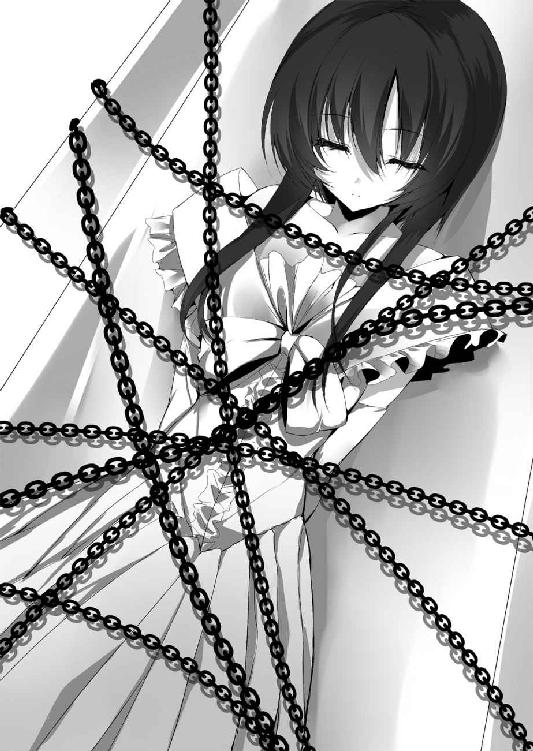
「な──っ!?」
藍色の雨が視界いっぱいに広がった。こちらは跳躍中。とっさにオルガノンを壁に突き刺して回避動作を取ろうとするが、間に合わない。
「がぁぁ──ッ!?」
藍色の一雫が体に触れた途端、爆発が連鎖した。衝撃が五体を突き抜け、圧倒的な熱が肌を焼く。煙の残滓を引いて落下し、直輝の身は時計塔の二階部分にドン......ッと放射状のヒビを作った。
「かはっ......」
肺から漏れた空気に血の味が混じる。上下の感覚がなく、意識が朦朧とする。明滅する視界にわずかに映るのは、尖塔に突き刺さったままのオルガノン、そしてその先にいるハイドと──雪乃。
「あたしを怒らせるのが悪いんですよ。お兄さんはこれでゲームオーバーかな？ ま、今のでかなり記述も進みましたし、あとはその辺適当に爆破して完遂しますかね。お兄ちゃんが助けにきてくれなくて残念でしたねぇ、妹さん」
ハイドが雪乃へと顔をすり寄せ、これ見よがしにその頬を舌でぺろりと舐めた。
怒りと悔しさで目の前が真っ赤になる。力を振り絞って立ち上がろうとするが体は言うことをきかず、かろうじて伸ばした手は遥か先の雪乃へは届かない。
「こんな、ところで......こんな、雪乃......っ」
──大切な人を守れる人間になりたかった。
だが、この手は決して届かない。何が足りない？ 何が必要だ？ 何があれば大切なものを失わずに済む？ ──織絵先輩のいないこの場所で、たった一人でも。
その時、──リィンと澄んだ鈴の音が響いた。
『汝、我が友愛を受けし者。我が半身なる禁忌の八人目』
突如、頭の中に響いた声。それが誰のものであるか、直輝はすでに知っている。
『汝が求めしものは、原始なる力。なれば、我がプラクシスにおいて今こそそれを還元しよう』
＊ ＊ ＊
セレモニーホールでは会計のロゼが壇上に上がり、今期予算についての説明を行っていた。それを見ていた会長、そして織絵のポケットにいたメフィが同時に、ぴくんと反応する。
「なんじゃ、この膨大な想念は......っ」
「どうしたの、メフィ？」
「......なるほど、手段を選ばないということですか、リードマン。いや事によると動いているのは本当にその主か」
「会長？ 何、一体何が起きてるんですか？」
学園の守り手である破壊者の視線は上へと向けられた。
「──アリストテレスが禁忌の八人目に干渉している」
＊ ＊ ＊
木霊したアリストテレスの声に呼応するように尖塔の先端、鎖に繋がれた雪乃の胸の前に突如、透明な光が生まれた。すぐ横にいるハイドが警戒して身を引く。
「え、なんです!? 色のない光......？ なんですか、これ......？」
その光の中から出現したのは、一冊の絵本。
それは幼い頃、直輝が雪乃にせがまれて描いた手描きの絵本だ。
「なんで、あの本が......？ それも、雪乃のところから......アリストテレス、君がやってるのか!? どういうことなんだ!?」
絵本は透明な光をまとったまま、落下する。それは尖塔に突き刺さったオルガノンに当たると弾けて消えた。だが代わりに今度は結晶の剣が直輝の元へ落下してくる。その刀身にまとう七色に──八色目の透明な光を加えて。
「あれは一体......っ!?」
『我は汝に還元する。導かれし原始の力は──始まりの怪物アンドロギュノス。さあ、叫べ』
伸ばした手に剣の切っ先が触れた瞬間、刷り込まれてくる力ある言葉。導かれるように直輝は叫んだ。
「光の還元！ 我が声に目覚めよ、アンドロギュノス──始まりの怪物よ！」
その瞬間、オルガノンの刀身から何かが流れ込んできた。どくん、と心臓が強く波打つ。
「な、なんだこれ......っ!?」
流れ込んできた何かがその存在を示すように、直輝の腕に浅黒い紋様が浮かび上がる。それは瞬く間に侵食を始め、直輝の右半身をくまなく覆った。そして──。
「お、おお、オオオオオ──ッ！」
力が全身を駆け巡る。ただ一点、敵を葬ることへと意識が収束していく。
衝動のまま振り上げた斬撃は光の軌跡へと変わり、尖塔を疾走した。外壁ブロックが粉微塵に吹き飛び、ハイドのいる鐘楼へと光の軌跡が直撃。
「な......っ!? 目がイっちゃってますよ!? なんですかその力っ!?」
「オオオオ──ッ！」
空中へ投げ出されたハイドへさらなる光の軌跡が飛ぶ。だがそれは直輝の意志というより紋様の浮かんだ右半身が勝手に動いているようだった。
肥大化した光の軌跡が掠り、尖塔の鐘が吹き飛んだ。その威力にハイドが目を剥く。
「ちょ、無茶苦茶過ぎるでしょ......っ、勘弁して下さいよ！」
空中で爆発を起こし、その余波で軌道を変えてハイドが姿勢を制御する。その直後、紋様の浮き出た直輝の右足が地面を踏み込んだ。その身が一瞬でハイドの目の前に現れる。右手はすでにオルガノンを振りかぶっている。
「はぁ!? タイムタイム、ちょっと待っ──がはぁっ!?」
ハイドは硝霧の剣で直輝の一撃を受け止めたものの、ゴッと鈍い音がして、空中から地面へ落下。凄まじい勢いで広場の石畳へその身を叩きつけられた。
「──」
直輝の目にはすでに意志の光がない。自由落下にその身を任せ、右半身の求めるままハイドへ追撃を加えようとして──左目がふいに尖塔から落ちる白いドレスを映した。
「......ユキ、ノ。──っ、雪乃!?」
その目に意志が戻る。だが右腕はハイドに照準を向けていた。
「なんだ、体が......っ、ふざけんなッ、俺の体だろ!? 言うことを聞けぇ──ッ！」
左手で無理やり右手を押し込み、結晶の剣を尖塔に突き刺した。それを軸に方向転換、斜めに跳躍して──落下していく雪乃を抱き留める。
「届いた──っ！ 雪乃、大丈夫だ、もう大丈夫だぞ！」
ハイドに巻かれていた鎖が引っかかり、落ちるまで時間差が出ていたようだ。絶対に離さないように左手で雪乃を抱き締め、直輝は衝撃に備える。そして、着地。かなりの高さだったはずなのに、右足から降りるとほとんど反動なく着地出来た。
「この力は一体......アリストテレス！ 説明してくれ！」
虚空に向かって叫ぶが、もうあの銀髪の少女の声は聞こえてこなかった。今も少しでも気を抜けば力が溢れそうになっている。まるで右側半分が自分のものではないようだ。
見上げると、鐘楼のあった尖塔の根元から先端へ縦一文字に巨大な亀裂が走っていた。破壊の規模だけで言うなら、野外音楽堂での会長の一撃に匹敵するかもしれない。
「あれを俺がやったのか......？ はっ、そうだ、ハイドは!?」
見回すと正面広場の一角にハイドの姿があった。直輝からの一撃を受けた時のまま、まったく動かない。さっと血の気が引く。
「琉音っ!?」
雪乃を抱いたまま駆け寄り、倒れたハイドの前で膝を折った──瞬間だった。
ずぶっ、と左の脇腹に何かが突き刺さった。
「え......？」
それはハイドの手から伸びた結晶の剣。ゆらりと藍色の女が顔を上げる。その表情は今までの嘲笑の形ではなく、場違いなほど慈愛に満ちたものだった。
「......悪意の最後の一刺し。ありがとう、お兄さん。あなたのおかげで今、あたしの記述は完遂した」
「そんな......」
引き抜かれる剣と共に血を吐いて倒れる。右半身が暴れ出そうとするが直輝自身にもうその力がない。入れ替わるようにハイドが立ち上がり、大きく両手を広げ、叫ぶ。
「さあ、今こそこの身は死者の告白をこじ開けよう！ 燃え上がり消し炭と化せ、完全なる遺書よ！ 彼の者の大いなる名誉を冒涜するのだ！ 嗤え、世界で一番哀れなヘンリー・ジキル！」
ハイドの胸の前に突然、明星の如き光が現れた。偽訳解放中であるにも拘わらず出現したのは藍色に輝く幻想偽典。その銘は『ジキルとハイド』。その保持者ハイドが今、改変された記述の最後の一文を読み上げる。
「──あなたの真の死の瞬間は今、この時に訪れた！」
目も眩むほどの閃光。その藍色は光の柱を形作り、空を穿った。導かれし現象の名は、『終止符の地平』。幻想偽典に刻まれたすべての記述がその総力を用いて保持者の願いを顕現する、文字通りの奇跡。
ハイドはその手に握った硝霧の剣を藍色の柱へと突き刺した。するとその光のすべてが結晶の剣へと集まっていく。
「これがあたしと琉音の願いの形......」
天を突くほどの光のすべてを得た後、その手にあった剣は形を変えた。
それは、一振りの突撃槍だ。
「か、会長と同じ......」
「ええ、そうですよ。この槍こそがあたしたちが記述のすべてを懸けて望んだもの。これこそが本当の──」
腰を落とし、ハイドが突撃槍を持った腕を引き絞る。両手の貴石が砕けて霧を作り、それに呼応するように槍が激しい藍色の光を放つ。その腕を突き出すと同時にハイドは呟いた。その力、その槍の名を。
「──硝霧の突撃槍」
ゴゥッと衝撃が迸った。槍から放たれた藍色の光は流星の如く空を駆る。その行きつく先は、
「大桟橋......っ!?」
直撃だった。遥か遠方の大学部にある大桟橋が藍色の流星を受けて崩壊していく。先ほど尖塔を裂いた直輝の一撃をも凌駕する恐るべき破壊力だった。
「なんてことを......」
愕然とする直輝の耳に聞こえてきたのは、『ロンドン橋』。高笑いするハイドを想像した直輝が目にしたのは、水平線の先でも見るように目を細めた静かな横顔だった。
「やっと落ちた......」
呟いたハイドがこちらへ目を向ける。藍色の粒子をまとう髪が風になびいた。
「見てくれましたか？ これがあたしが『終止符の地平』に至って手にした力です」
「あの橋を落とすことがお前の目的だったのか......？」
「まあ、一つですね。通過儀礼みたいなもんです。なんだかんだであの始まりの場所を叩き潰さなきゃ次にはいけないですから。ちなみにあの橋はもう戻りませんよ？」
「そんなはずない。偽典の力で破壊されたものは、人間以外なら共鳴結界で修復されるはず......」
「共鳴結界をキャンセルする破壊の力、それがこの硝霧の突撃槍の特性です」
「なんだって......っ!?」
「ね？ 偽典の記述のすべてを費やす価値のある力でしょ？ これであの橋は二度と蘇らない。憧れの生まれた場所はこれで壊れた。そして──」
ハイドが片手で小さな爆破を起こした。石畳に刻まれたのは『ロンドン橋』だ。
Gold and silver I have none,
I have none,I have none.
Gold and silver I have none,
My fair Lady.
「金と銀がなくなる......？ まさか......っ!?」
「ええ、会長さんが率いる生徒会執行部、その象徴たる時計塔......これもあたしがこの手で壊します」
「馬鹿な......っ、時計塔には今、大勢の生徒たちがいる。琉音が無意識で止める限り、お前は誰も傷つける、ことは......」
言葉の途中で気づき、唇が震えて動かなくなった。ハイドは静かにこちらを見ている。
記述が進むほどにハイドは人格としての力を増し、琉音という主人格を侵食していく。そういう前提だった。それを防ぐために直輝は戦わないという戦法を取ったのだ。
だが今、ハイドは『終止符の地平』に辿り着いた。幻想偽典のすべての記述を完遂したのだ。
「う、嘘だろ......？ え、そんな......そんなこと......っ」
「だから言ったじゃないですか、記述が中盤までいったらあとは一瞬だって。お兄さんがその紋様のよく分からない力を使って襲ってきた時、あたしの記述は中間地点を越えたんです。......で、最後の一押しはそのお腹の一刺し」
「じゃ、じゃあ......」
「琉音はもういません。時路琉音という人格はこのあたしによって完全に塗り潰されました」
「う、嘘だぁっ！ そんなのない、ありえない！ 嘘だろ、嘘だって言ってくれ！」
反射的に体を起こして叫び、腹の傷が開いて血を吐いた。
「お兄さんには感謝してます。あの結晶の剣が土台としてなければ、きっとこの結晶の槍には辿り着けなかったでしょうから。だから、せめて苦しまないように逝かせてあげますね」
「そんな、琉音がもういないだなんて......っ!? そんな......っ」
右半身は目の前の敵に挑みかかろうとしている。だが、直輝は動かない。もう一歩も動けない。
「後悔なんてやめて下さい。無意識だろうと意識的だろうと、それがあなたの選択の結果なのだから。妹さんを取って琉音を見捨てた。あなたの正義が一人の少女を殺したんだ」
槍の切っ先が直輝を捉える。その延長線上には時計塔もある。
「さようなら、お兄さん。最後だから言いますけど、あたし、結構あなたのこと......好きでしたよ」
そして藍色の貴石が砕ける......その直前、ガガッと乾いた音が響いた。
眉をひそめてハイドが音のした方を見る。それはすでに破壊された銀縁の尖塔から。かつて鐘があった場所で歯車だけが空打ちしている音だった。
──つまりそれは、連合総会が終了した合図だ。
その声は時計塔の正面玄関から厳かに、そして朗々と響いた。
「──破壊者は言う。私の敵たちでさえ、私の至福の一部なのだと。殊に敵に向かって投げつけるこの私の槍。ついにこの槍を投げつけることが出来るということに、私は私の敵共に心からの感謝さえ禁じ得ない」
ハイドは視線を鋭くし、すぐさま警戒の体勢に移った。直輝は倒れ込んだまま、時計塔の大扉がゆっくりと開いていく様を目にする。
「一年生、敵対保持者に敗北しましたか。それでは私を超越することなど夢のまた夢。約束の履行の時です。私は貴方にはあらゆる悪を成し得る力があると考えた。だから私は貴方に類稀なる善をこそ期待したのだ。だが、どうやらそのすべては──ただ私が槍を振るう喜びへと消えたようだ」
両開きの扉から現れたその在り様はまさしく威風堂々。真っ直ぐに進む清廉な足取りに伴って、たおやかな髪が帯状の髪飾りと共に涼しげに揺れる。
空気が一気に張りつめていく。ハイドは頬に流れる冷たい汗を拭いもせず槍を構えた。直輝はオルガノンを手にしたまま動かない。
その両者を前に微塵の気負いもなく絶対者は静かに告げた。
「リセリア学園生徒会執行部会長、天上寺紋芽がここに推参致します。──さあ、これで幕引きだ」
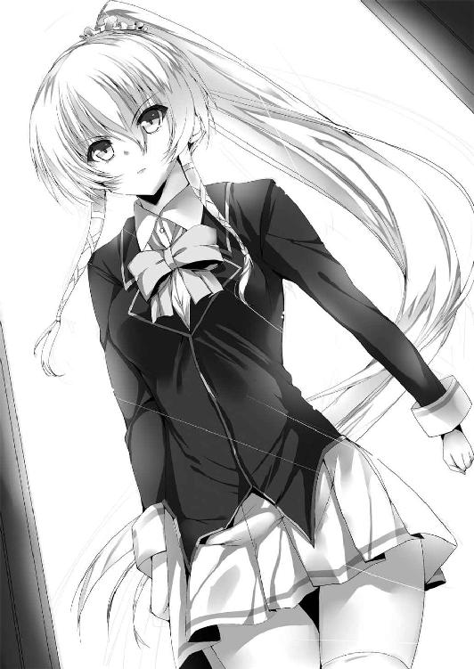
七章 ─今、最善の選択を─
セレモニーホールのバックヤードから織絵は駆け出した。会長はすでに外へ出ていて、会長補佐の執行部員が各種連絡事項という名目でまだ生徒たちをホールに留めている。おそらく会長はその間にすべてを終わらせるつもりだ。
織絵は司会進行を任されていたため、会長よりも出遅れてしまった。こうなったら一秒でも早く外に出なくてはいけない。だが、薄暗い廊下で立ち塞がる人物がいた。ロゼだ。
「ロゼっ、どいてよ！ 総会はもう終わったのよ!?」
「ダメよ。アンタがこないように足止めしろって会長閣下からのご命令。今、上では禁忌の八人目と爆弾魔を会長閣下が始末してるんでしょ？ あたしもね、高みの見物を決め込むって決めてるの。だからアンタに会長閣下の邪魔はさせないわ」
「......っ、なら力ずくで通る！」
「やってみなさい！ いい機会だわ、アンタを倒して副会長の座をアタシがもらう！」
互いにぶつかり合うように偽訳解放。薄暗い廊下で赤と橙の光が激しく輝いた。
＊ ＊ ＊
「その半身、アリストテレスからの友愛によるものですね？ なれば──」
直輝の姿を見た会長は一瞬目を細め、偽典を現界させた。その手に現れるのは革張りの重厚な幻想偽典。
「さあ、高らかに物語りましょう！ 偽訳解放──ニーチェ・『ツァラトゥストラはかく語りき』！」
圧倒的な七色の光と共に一瞬で偽典の紙片が飛び散り、吹雪のように辺りに舞う。
そこから一歩を踏み出すと、会長の額に光が集って何かを形作る。直輝は一瞬、それが茨の冠に見えた。だが、違う。メシアの装いに似たそれは赤く美しい薔薇の冠だ。
同時、彼女の肩に賢者のような白くゆったりとした外套が掛かり、その端を払うように腕を一振りすると、その手に突撃槍が現れる。
直輝は初めて目にする会長の偽訳解放に束の間、目を奪われた。おそらくキルケゴールの時は槍を出しただけの簡易顕現だったのだろう。
その姿はただただ美しく、凜と澄んでいる。学園の守り手たる破壊者は、悠然とここに立つ。
「アハッ、寸前で間に合いましたか。さすがは会長さん！ この時を一日千秋で待ってましたよ！ 『終止符の地平』に至ったあたしの力、そこに込められた望みのすべて、全部丸っとぶつけちゃいますからねぇ！」
そう言い、ハイドが両手の貴石を砕き、硝霧の突撃槍に藍色の光をまとわせる。大桟橋すら一撃で破壊したその力を前にして、会長は──。
「その半身の八色目の光......残念です、一年生。アリストテレスの友愛によって、貴方自身がすでに禁忌の領域に足を踏み入れている。もはや偽典を抹消するだけでは足りない。私は今ここで貴方の命を貰い受けることになった！」
見向きもしなかった。
石畳を割るほどの膂力で蹴り出される一歩、次の瞬間には烈風の如くその身は前へ。
「え──」
絶句したハイドの横を七色は一瞬で過ぎ去り、直輝へと肉薄する。烈風に煽られて藍色の髪が激しく揺れた。
「あたしがここにいるのに──」
直輝は呆然と目の前に迫りくる死を眺める。よく分からないがこの禍々しい力を思えば、殺されても仕方ない気はした。しょうがないか、と確かに一瞬思った。
だがすぐ左手に感じる体温に気づく──今、この手の中には雪乃がいる。死ぬわけにはいかない──っ！
「オオ、オオオオオオ──ッ！」
抑えつけていた右半身の力を解放した。剣と槍が真っ向から激突し、偽典の力がスパークして石畳が捲れ上がる。あの会長の一撃を受け止められた。
「ダメだ、今は死ねない！ 俺の手の中に雪乃がいる！ 琉音を守れなかったのに、勝手なのは分かってる......っ、でも俺はまだ死ねないんだ......っ！ ごめん......っ！」
誰に謝っているのか、もう自分でも分からなかった。
「良い！ 命の限りに抵抗しなさい、それがただ一瞬の生ということだ！ 幾度となく繰り返せ！」
剣と槍が弾き合い、その余波が花壇と街灯を吹き飛ばす。大きく振りかぶり、さらにもう一度。
「嘆くことはない！ 貴方が自らに『然り』という限り、貴方のその傲慢は紛うことなき貴方の正義だ！ 誇りを灯せ、叫びを挙げろ！ その生ある限り、抵抗することを私は許そう！ それは正しい行いだ！」
「......っ、こんなの正しいわけないじゃないか！ 誰かを救うために誰かを見捨てるのが正義なら、そんなものはクソ食らえだっ！ そう、分かっていたはずなのに......っ」
突き出された槍を大上段からの斬撃で打ち払う。七色と七色、そしてそこに重なる透明な光。互いを喰い合うように力は烈断され、衝撃が周囲を破壊する。
「あたしを見て......」
その破壊の外で捨てられた子犬のように呟いたのはハイドだった。その手の中で硝霧の突撃槍が最大の光を放つ。引き絞るように槍を構え、ハイドは突っ込んでいく。
「あたしを見てッ！ 今この時、あなたと相対するためだけにここまできたんです！ そのために潜んで隠れて憎んで憎まれて、悪意をぶつけてここまできたんだ！ あなたにあたしのすべてをぶつけるために！ だから無視しないで、あたしを見て──ッ！」
地を這う流星が解き放たれようとした。それは大桟橋さえ砕いた絶大な藍色の咆哮。
だが──、
「黙りなさい、今は世界の危機だ！ 琉音の想いも私の想いも、すべては些事に他ならない！」
直輝との剣戟の最中、勢いのまま身を翻した一瞬、会長は──あろうことか素手でハイドの槍の切っ先を掴んだ。そのまま槍ごとハイドを宙高く跳ね上げ、地面に叩きつける。
「がは......っ!?」
「その槍は私の模倣ですか？ だとすれば温い。哀しいほどに熱が足りない！」
七色の光を宿した手のひらは藍色の光を完全に抑え込んでいた。掴んだ切っ先を横に一閃して薙ぎ払う。ハイドの身が宙に舞い、直輝に激突。そのまま二人まとめて花壇に突っ込んだ。そして、破壊者は自らの槍を地面に突き刺す。
「さあ、立ちますか？ もう立てないと言うのなら、楽にしてあげましょう」
「まだまだ、ですよ......」
「俺は死ねない......」
会長の視線は直輝に向けたもの。だが、荒い息を吐きながら立ち上がる人影は二つ。会長の視線が鋭さを増す。どこか痛みを帯びたその鋭さで会長は言う。
「良かろう。ならば一年生には千載一遇のチャンスを、傍らにいる爆弾魔にはせめてもの手向けを。誇りなさい、貴方たちには私が私として最も信頼する力をその身に刻む！」
ゴッと会長のまとう七色の光がその輝きを増した。そしてすでに偽訳解放をしている身にさらに重ねられる、力ある言葉。
「二式解放『ツァラトゥストラはかく語りき』！ さあ、朗々と奏でましょう──っ！」
赤、橙、黄、緑、青、藍、紫の七つの光が螺旋を描いて空へと昇った。同時、夜明けのような荘厳さでそれぞれの色を冠した七つの歯車が大空へと顕現する──。
＊ ＊ ＊
全身をレイピアの傷で赤く染めながら、織絵は一階ロビーを進んでいる。立ち塞がったロゼを力ずくで捻じ伏せたが、こちらもただでは済まなかった。
「不死身の頃であれば、そんな傷ものの数ではなかったのにのう......」
「あはは、それは言いっこなし。直輝クンがまた気にしちゃうでしょ......？」
直輝の元へと急ぎながら、それでもまだ何が正しいのかは分からずにいる。禁忌の八人目が呼び込むという終焉の正体を自分はすでに聞かされてしまったから。
「世界のイデア......不動の第一動者......アリストテレスと、そして禁忌の八人目......」
日比野直輝という少年の存在が会長の言った通りのもので、先ほどのアリストテレスからの干渉がそれを加速させるものだとすれば......会長は彼の命を狙うかもしれない。
「そんなの嫌......でも、わたしのワガママで世界を危機になんて晒せない、けど直輝クンがいなくなっちゃうなんて、そんなの......」
何が正しいかは分からない。天秤に掛けられた世界と彼のどちらを取るべきなのか、その答えはいまだに出ない。それでも逃げることはもっと出来なくて......織絵の足は戦場へ向かう。
＊ ＊ ＊
「空を穿て、舞踏する星を産み落とすのだ！ これこそが大地の心臓にして大いなる法！ 汝が真なる生を望むなら破ってみせよ──見よ、これが我が『天空の大車輪』だ！」
ツァラトゥストラは『超人』へ至るあらゆる段階を虹と称した。
天上寺紋芽が大空へと顕現したこの歯車──否、この天空の大車輪こそはその顕現。ツァラトゥストラの唱える、一つの自力で回転する車輪、一つの第一運動、一つの大いなる肯定を具現化したものである。天空に鎮座するそれぞれの車輪が一斉に稼働し、彼方からの光を呼ぶ。すると空に一つの星が輝き、ゴッと空気を裂いて地へ落ちた。一条の矢と化した星が、直輝へと直撃する。
「な......っ!? がぁぁぁ──ッ!?」
剣を持つ右肩に突き刺さった矢は偽訳解放の身体強化などものともせず、肌を裂き、肉を抉り、骨を折る。直輝の右腕は矢の破壊に耐え切れず──肩先から千切れ飛んだ。
「ぐっ、あああああああああ──ッ！」
かつて経験したこともない痛みに獣じみた絶叫が放たれる。集中が途切れて、結晶の剣が偽典に戻り、光になって消えた。
同時、半身に刻まれていた紋様も剥がれ落ちるように弾けて消える。アリストテレスに還元された荒れ狂うほどの力が消失していく。
「半身を割った形を模したその姿。あなたが顕現したのは、哲学者プラトンがその著『饗宴』の中で謳った始まりの怪物アンドロギュノス。記憶によればそれは神に別たれた最初の人間──人の本来在るべき真実の姿。『万物を斬る光の剣』とは正反対の力だ。だが、それも世界へと還した。では──」
のたうち回る直輝の様子を前に会長は顔色一つ変えず、天空に鎮座する車輪へと手を掲げた。
「さあ、かつて繰り広げられた世界が再び円環となってまとめ上げられる！ 自らの意志を持って円環せよ、『永劫回帰』！」
ゴウン──ッと七つの車輪が先ほどとは別の回転を始めた。世界が七色の光に満たされる。そして、
「──はっ!? え......？ お、俺の右腕が......っ」
気づくと、千切れ飛んだはずの右腕が元に戻っていた。呆然とする直輝へ会長が厳かに言う。
「夢でも幻覚でもありません。貴方は確かに我が矢を受けた。だがそれは私が元の姿に回帰させたのだ。もう一度繰り返すために！」
会長がそう言った瞬間、天空から飛来した矢が再び直輝を貫いた。正確に先ほどと同じ箇所を射貫いている。だが偽典と紋様は元に戻っていない。生身に矢を受けて右腕が千切れ飛ぶ。
「がっ──ああ──ッ!?」
「さらに、もう一度。円環せよ！」
会長が力ある言葉を発する度、右腕の再生と破壊が繰り返された。精神が焼き切れそうな激痛の繰り返しにすでに悲鳴すら出ない。
「『世界を規定せし書』とはその名の通り、世界そのものを改変する可能性を持った偽典だ。そして私が行うのは時空間の改変。キルケゴールの際はただの矢の連打として使いましたが、これこそが我が『永劫回帰』の真骨頂。この力により貴方は我が矢を受ける恐怖と苦痛を何度でも繰り返す。そして永劫に繰り返すその苦痛に精神が耐え切れず、すべてを諦めた時、貴方の命は死を迎えるのだ」
「そ、そんな......っ!?」
肉体は元に戻っても、想像を遥かに絶する痛みと恐怖は精神に刻まれている。吐き気が込み上げ、直輝は胃の中のものを地面にぶち撒けた。だが破壊と回帰は終わらない。何度も、何度も。やがて十数度目で限界を迎えた。終わらぬ苦痛にがらがらと自分の精神が剥がれ落ちていく。目の前に開いた死の扉が救いにすら見えた。
（......こんな力......破れるわけ、ない............）
そしてその瀬戸際で直輝は見る。傍らで自分と同じように光の矢を受けるハイドが──壮絶に歓喜しているのを。
＊ ＊ ＊
「アハッ、これでいい！ これがいい！」
ハイドは天空へと硝霧の突撃槍を撃ち続けていた。いつか自分が、いや琉音が見た憧れそのものの矢に挑み、けれど藍色の光は無残に打ち砕かれて、その身がズタズタに引き裂かれる。そんな責め苦を繰り返した。何度も、何度も。心の底から歓喜しながら。
「だって、これがずっと望んだものだったから......っ！」
今、自分はあの人の攻撃を受けている。真っ直ぐな殺意をこの身に浴びている。それはあの日、気づくことすらしてもらえなかった自分たちが、あの人の視界に入っているということ。ただそれだけで、叫びだしたくなるほど嬉しかった。
「──London Bridge is broken down！」
硝霧の突撃槍を撃ちながら、その身を無残に引き裂かれながら、ハイドは歌う。
寝ずの番を置きましょう、の歌詞は琉音の奥から世界を見ていた自分のこと。
木と花で建てましょう、は自分と琉音には出来なかった美しいもののこと。
金も銀もなくなった、は結局会長のいる執行部には入れなかった琉音の夢のことだ。
人が抱く憧れの裏側には、必ずそれと同じだけの痛みがある。すでに藍色の偽典が現界してしまった琉音は憧れの七色には至れない。だったら琉音の痛みである自分は、その元凶を──憧れをぶっ壊すしかない。
「でも本当は、敵わないって知ってたんです！ だって、決して届かないからそれは憧れなんだから......っ！」
その矢に貫かれて硝霧の突撃槍が粉々に砕けて散った。同時、ハイドの身からも鮮血が噴き出す。ここが彼女の限界だった。摩耗した精神はもう回帰に耐えられない。
彼女は遥か天空にいる会長へと届かない手を伸ばした。ここで終わりなことは分かっていた。
「ああ、やっと願いが叶う。あたしと琉音、二人分の願いが......」
会長は七色の車輪の上からハイドを見つめていた。目が合ったことに気づき、ハイドは照れくさそうに目を細め、言った。紡がれるのは嘘つきな彼女が漏らす最後の本音。
「本当はね......」
会長がその髪に結わえられた髪飾りを外した。琉音から受け取ったという大切な髪飾りを、彼女はそっと空から落とした。藍色の呟きは細く静かに小さく響く。
手が届かないことは分かっていた。だったらせめて──。
「あなたに殺されたかったの......」
髪飾りはハイドの瞳に映りながら、はらはらと風に流れていった。
＊ ＊ ＊
この戦場に現れた時から、紋芽は琉音とハイドを区別していなかった。『ジキルとハイド』は憧れから生まれた痛みの話だ。だとすれば琉音の抱えたそれらも不可分だと、どちらも一つの心だと、そう考えていたから。
「勇気とは花だ。琉音、大桟橋事件後も支援部を続けた貴女の勇気は美しい花だと、私はそう思っていましたよ......」
だが、彼女が漏らしたその言葉は、たぶん──琉音にもハイドにも届かなかった。
＊ ＊ ＊
そうして、ハイドの瞳から光が消えていくのを直輝は見た。逆に少し離れたところに倒れている雪乃には光の矢は及んでいない。
「これが、俺の選択の結果......？」
ハイドは言った。雪乃を取って、琉音を見捨てたのだと。あなたの正義が一人の少女を殺したのだと。その声に応えたのは、遥か高みにいる会長だった。
「選択......なるほど、貴方は妹を助けるため、琉音と戦うことを選んだのか。良い。その結果、間に合った私が琉音を断罪し、妹の命は守られた。ならば、その選択は間違いではなかったのだ」
「違う......」
「違う？ 何が違うというのだ」
会長の言葉は執行部の考え方そのものだ。天秤に掛けて、優先すべきものを選別する。そうやって彼女は学園を守ってきたのだろう。そうしなければ守れない現実があったのだろう。だけど......。
「俺は、本当は......」
ふいに思い出したのは子供の頃のこと。傷ついたネコと震える子犬。どちらを見捨て、どちらを助けるか。その選択を迫られたあの時、雪乃はなんて言ったんだっけ？
「......ああ、そうだ」
直輝は己の過ちを悟る。そして──。
＊ ＊ ＊
織絵は大扉から正面広場に出た。空には会長の『天空の大車輪』が浮かび、地面には倒れた幻霧の爆弾魔──ハイドとそして今まさに息絶えようとしている彼の姿があった。
「直輝クン......っ」
彼の元へと走りながら、情けなさで涙が出た。どうして離れたりしたんだろう。会長の命令だって、そんなの聞かずに一緒にいなくちゃいけなかった。ああ、そうだ──。
──俺は片翼だから一人じゃ何にも出来ないんです。だから先輩の翼を貸して下さい。俺、先輩がいてくれないとダメなんです。
彼はあの時、確かにそう言ってくれていたのに。
「直輝クン......っ、大丈夫!? しっかりして！」
「織絵、せんぱい......？」
彼の口調からもうほとんど意識を失いかけているのが分かった。会長の『永劫回帰』の中で何度致命傷を負わせられたのだろう。握った手にはすでに力がない。
「ごめんね......っ。わたし、ずっとそばについててあげるって言ったのに......っ。キミか世界かを選べって言われて、どうすればいいか分かんなくなっちゃったの......っ。答えなんて出てるのに、その答えが選べなくって......馬鹿だ、わたし。こんなことなら最初から迷ったりしなければよかった。直輝クンを選んで世界なんて捨てるって、そう叫べばよかった......っ！」
「......それ、違います」
「え......？」
「......俺も悩んだんです。雪乃か琉音か、選べなくて......迷って、悩んで、手遅れになって......でも、そうじゃなかった」
じわり、と彼の目じりに涙が滲む。
「......織絵先輩、ウチの実家ね、ネコと犬がいるんです」
その瞳に映るのは、もう取り戻せない後悔だ。
「だから、最初から言えばよかったんだ。胸張って俺はどっちも取るんだって......っ」
＊ ＊ ＊
「あのさ、雪乃」
まだ幼かったあの日。拾ったネコと子犬を前にして直輝は意を決して妹の名を呼び、けれどそんなことお構いなしに雪乃は決断を下していた。
「決めたよ、お兄ちゃん。ネコの方は怪我してるけど、もう大人だもん。だから──」
でも結局、兄妹は同じ答えを出していたのだ。直輝が考えたことと同じことを雪乃は言った。
「だから大丈夫、なんて言って見捨てること出来ないもん！ こうなったら、ネコも子犬もどっちも連れて帰っちゃおう！ きっとなんとかなるよっ、なんとかする！」
それから散々苦労した。朝から晩までケンカして喚く二匹に振り回されつつ、それがきっかけで直輝と雪乃もケンカしたりして──でも、今、あの二匹は仲良くウチにいる。
「どっちも捨てられないなら、両方取っちゃえば良かったんだ。だって、そのどっちもが大切だったんだから......」
「どっちも大切......」
「分かっていたはずなのに、俺はまた一人じゃ手が届かなかった......琉音を助けられなかった......。ハイドの記述が完遂して、琉音はもう......」
顔をぐしゃぐしゃにして直輝は目を伏せた。その手を再び織絵が強く握り返す。その目は何かに気づいたように見開かれていた。
「そうよ。わたしは直輝クンも世界もどっちもほしい。だったら、それでいいんだ。なんで忘れてたんだろう。キミとならどんな無茶な現実だって越えていける、あの時、わたしは確かにそう思ったんだから......っ！」
「先輩......？」
「立って、直輝クン！ 大丈夫、まだ何も終わってない！ わたしとキミが一緒なら琉音ちゃんは助けられる！ 思いきり欲張って、両方取りしちゃおうよっ」
織絵が浮かべた満面の笑みに直輝は呆然とする。そして──わたしとキミが一緒なら、その言葉の意味に──気づいた。
「もしかして......」
恐る恐る口にした直輝の問いに、織絵は立ち上がり、こちらの手を引く。
「そうっ、わたしとキミの両翼は決して誰も見捨てない！ 行こう、今度はわたしがキミを引っ張り上げる！」
「織絵先輩......っ」
死に引き込まれかけていた意志が目覚めた。終わりをやめた精神が唸りを挙げて形を取り戻す。直輝は織絵に手を引かれ、立ち上がり、前を向いた。
直輝と織絵の両翼、すなわち幻想偽典『ファウスト』から引き抜かれる救済の剣。その定義は『捻じれた因果を断ち切り、在るべき形へと繋ぐ』こと。ならば、偽典によって塗り潰された琉音の人格も救えるはずだ。
「はい！ 行きましょう、先輩。今度こそ、俺は雪乃と琉音のどっちも助ける！」
「わたしは世界も直輝クンもどっちも守る！」
二人が見上げる先には絶対の力を持った破壊者。
「......なるほど、確かにあの力ならば琉音を偽典の侵食から救い出すことが出来るかもしれない。だがそれでも、貴方は世界に災厄を招く者なのだ。アリストテレスからのさらなる干渉を認めた今、これ以上の偽典の行使を見逃す判断はない。許せ、私はその希望を許してやることが出来ない」
その瞬間、空から流星の如き矢が降り、直輝と織絵の体を貫通した。そして繰り返す。何度でも、何度でも。織絵の偽典へ手を伸ばす先から時空が巻き戻される。精神が摩耗していく中で、しかし直輝は流血する織絵が我が意を得たりと口角を上げるのを見た。
「......っ、まったく会長ってば......素直じゃないんですから......っ」
「なんだと？ それはどういう意図の言葉ですか、ファウスト」
「......本当にわたしたちを、止める気なら、矢の一発で済む......っ。でも会長は『永劫回帰』を使った......っ、それは......」
「私はツァラトゥストラ。何時いかなる時でも『永劫回帰』を破る可能性を見定めることを忘れないだけだ」
「違いますよ......、直輝クン、分かるよね......っ？」
織絵の言葉に直輝ははっとする。そして空を見上げて叫んだ。
「本当はあなただって琉音を救いたいんだ......っ！ その可能性に賭けたいんだ......っ」
「違う──っ！ リセリア学園執行部会長たる私は、痛みを踏み越えるツァラトゥストラたる私は、そのような望みを持ち得ない──っ！」
「だったら超えてやるっ！ 人を天秤に掛ける執行部の在り方も、あなたが操る『永劫回帰』も、先輩と俺で超えてすべてを守る──っ！」
織絵の手には赤く輝く幻想偽典『ファウスト』。この力の行使は四月の戦い以来だ。だが、迷いなんてない。偽典もなくその身から輝き出した色彩のうち、赤の光が織絵の偽典と呼応する。右肩が矢で吹き飛んだ。焼き切られるような痛みが脳髄を走る。だが目の前で同じように血だらけの織絵が、無理やりいつもの余裕たっぷりの笑みを浮かべている。
「直輝クンは、男の子でしょ？ 今、張り切らなくてどうするの？ ......頑張って。上手に出来たら、ご褒美にえっちなことしてあげる♪」
「先輩っ......ああ、もうそんなこと言われたらやるっきゃないじゃないですか──っ！」
千切れたままで肩を振り上げ、『永劫回帰』で腕が戻った瞬間その手を『ファウスト』に叩きつけた。
「偽訳再現──ッ！」
そして、『ファウスト』と重ね合わせの状態で現界する『イデアの片翼』。
日比野直輝の能力の真価は他者の偽典から剣を引き抜くことだ。直輝に引き出された剣は保持者の願いに正しく呼応し、その偽典本来の力を発揮する。
「これは......っ、記述が増えてる......!?」
重ね合わせになった己の偽典を見て、直輝は気づいた。『イデアの片翼』が『ファウスト』を記述していた。それはアリストテレスから新たに受けた力のためか、それとも自分を引っ張り上げてくれた織絵先輩の想いのためなのか。後者だと信じて直輝は叫んだ。
「我は命じ、汝は顕現する！ 刻まれしその名は『ファウスト』！ 出でよ、救済の剣シュヴェルト・ゼーレ──ッ！」
明星のような爆発的な光を伴って、真紅に輝く結晶の剣が引き抜かれる。それは以前よりも刃渡りが長く、洗練されたフォルムになっていた。無数の光を乱反射させるその刀身に古代ギリシャの言語で『ファウスト』と輝く文字列が走る。
『イデアの片翼』に記述された銘は救済の剣シュヴェルト・ゼーレ。魂の存在を否定する『永劫回帰』に対して、在るべき命の意味を知る剣。
「妾が盾となる！ 直輝、織絵、任せたぞ！」
織絵の肩にいたメフィさんが小さなヒヨコの姿から『ファウスト』に記述された救済の天使として白翼の大鳥へとその身を変える。
その翼を大きく広げ、迫りくる矢からメフィさんが二人を守り、そして──。
「おお──ッ！」
直輝と織絵が手にした剣の赤い光が空を裂くように迸る。その力の定義は『捻じれた因果を断ち切り、在るべき形へと繋ぐ』もの。だが、それだけではない。以前は斬りつけた個所にだけ作用していたその力が光の放たれるすべての範囲へと広がっていく。
言わば、線ではなく面の力だ。それによって歪に操作された時空間そのものが消し飛ばされる。恣意的に規定された世界が本来の姿を取り戻す。
「本当に超越しようと言うのか、私の『永劫回帰』の世界を!? ──否、まだだ！ この『天空の大車輪』がある限り、私の世界は何度でも円環する！」
大鳥の背に乗り、ハイドの元へ向かおうとした直輝たちを光の矢の連弾が押し留めた。
「く......っ、この分からず屋！ メフィさん、先に会長を！」
「心得た！」
大鳥は大きく旋回。目指す先は会長のいる『天空の大車輪』。降り注ぐ光の矢を寸前で躱し、あるいは斬り裂いて白の両翼は突き進む。
「貴方たちは永遠に繰り返す痛みを受け入れたわけではない！ むしろ何者も切り捨てぬというその選択は痛みを忌避するものだ！ それでなぜ我が『永劫回帰』を破れるというのか!?」
「そんなの決まってる！ 一人じゃないから、今隣りに先輩がいてくれるから超えられるんだ！」
「そのような精神論を聞いているのではない！ 答えなさい、貴方は真の終焉すらも超える者なのか!? 私が望む真の憧れへと至るべき者なのか!?」
「紋芽よ、お前は知っておろう!? 織絵の『ファウスト』とお前の『ツァラトゥストラ』は奇しくも瞬間を基点とする幻想偽典だ！」
「それがなんだと言うのだ!? 友よ！」
「ツァラトゥストラは美しく華やいだ瞬間さえあれば、永劫に繰り返す世界を受け入れられると言った。対してファウストは永遠に止まっていたいと思えるほどの瞬間を欲して流転の人生を歩み続けた。悪魔に魂を売った程度のファウストでは、神にケンカを売ったツァラトゥストラには敵わなかろう。だがな、我が主織絵はその瞬間の先にいる！」
黄金の色に染まった髪を風になびかせ、織絵は胸を張って叫んだ。
「──時よ止まるな、世界はこんなに美しい！」
その声に呼応して、会長へ向かう真紅の剣がゴッと天を貫かんばかりの光を解き放つ。
「わたしはもう瞬間なんて求めない！ この魂が向かうのは真っ直ぐ続く未来だけ！ その道はあなたが描く永劫の円環だって貫き通す！ この勝利を以て証明します──彼とわたしの両翼は世界の終焉だって斬り拓くって！」
「──っ!? そうか、プラトンとアリストテレスの両者の力を宿した『イデアの片翼』、その真価は『人越を規定せし書』を『世界を規定せし書』のレベルにまで引き上げるということか!?」
だが！ と叫んで会長が『天空の大車輪』がまとうすべての光をその突撃槍に集約し、真紅の力を迎え撃つ。
「その程度で超越出来るほど『最果ての七柱』は甘くはない──ッ！」
＊ ＊ ＊
その時、地上で藍色の髪の少女の指先がぴくりと動いた。
要因は二つ。斬撃よりも広範囲となった救済の剣の光がわずかではあるが、その身に及んでいたこと。そして、表層に出ていた人格が死の淵に落ち、塗り潰されていた方の人格が表に出るわずかな隙が生まれたこと。
「あたし、まだ、生きてる......？」
腕を酷く痙攣させながらそれでもなんとか立ち上がれた。今まで何が起こっていたかはおおよそ理解出来ている。ずっと自分を呼ぶあの人の声が聞こえていたから。
空を見上げれば、そこにはあの日のような光の雨。無意識のうちに体が震えた。心の傷が疼き、逃げ出したいと本能が叫ぶ。憧れと痛みは常に表裏一体だった。けれど、
「......っ、直輝さん──っ」
空の上、あの人の姿が見えた。戦況は明らかな劣勢。このままでは彼の命がない。
「......ねえ、聞こえる？ あたしの中にいるんでしょ」
震える声で自分の奥深くへと意識を向ける。怖かった。今すぐ逃げ出したかった。それでも、と自分に言い聞かせた。
『......やれやれ、武器を持たない戦いを選んだんじゃなかったんですか？』
「そうだよ。でも、今行かなきゃ、今だから行かなきゃ......っ」
勇気を振り絞れ、信じると言ってくれたあの人のために。
「力を貸して！ あたしは前へ進む自分になりたい──っ！」
藍色の光が爆ぜた。踏み潰され続けた痛みが今、心を得て唸りを挙げる。
『......あーあ、こんな死の間際で表と裏の会話が成立するなんて。まったく、そんなこと言われちゃったら、あたしも安穏と終われないじゃないですか』
ならば行きましょう、と声が聞こえた。世界の狭間で光と闇が手を取り合う。
「うん、行こう！」
見上げる先は澄んだ空。そこに──手を伸ばし続けた憧れがいる。
＊ ＊ ＊
『天空の大車輪』のすべての力を宿した突撃槍と、『ファウスト』と『イデアの片翼』の力を結集したシュヴェルト・ゼーレが激突する。すでに救済の力や『永劫回帰』の能力など関係ない、純然たる力押しの勝負だ。そして、劣勢に回ったのは直輝たちだった。
「ここまできてさらに押し込まれるなんて──っ!? これが会長の、世界の頂点にいる七人『最果ての七柱』の力なの......っ!?」
「先輩、諦めちゃダメですッ！ 俺たちは一人じゃない、一人じゃないから絶対に──」
超えられる！ とそう叫んだ言葉と共に光が迸った。
それは、空から降り注ぐ藍色の雨だ。
「煉獄の霧雨──祝宴祭！」
一点に集約された藍色の濁流が会長の『天空の大車輪』に直撃。
「そうだよ、一人じゃない！ だから助けにきたよ──」
「お前は......っ」
「──直輝さん！」
「琉音っ!?」
地面から爆風を利用して跳躍してきた少女が会長の車輪の一端に降り立った。
風になびく藍色の髪も高等部の制服もハイドのもの。だが同じ時間を過ごした直輝には分かる。そこにいるのは紛れもない琉音だった。
そしてそれを理解した人物がもう一人いる。
「琉音、なぜ貴女が......？ 貴女は私がこの手で死に追いやったはずだ......っ」
「優しい人たちが猶予をくれたの。天邪鬼な影と何度でも立ち上がる諦めない人。もちろん今はあの子が主人格だから、すぐにでもこの体は死んじゃう。本当にわずかな猶予。でも、出来ることはあるんだ」
ハイド──否、琉音は会長が手放した髪飾りをその手にしていた。
「憧れをぶっ壊しにきたよ！ 痛みから目をそらすためじゃない、会長さんみたいになるためでもない、あたしがあたしの意志で──会長さんを超えるために！」
「──っ」
はっきりと告げられたその言葉に初めて──鉄の意志を持つ会長の瞳が動揺に揺れた。
「琉音、貴女が私を超えようと言うのか......？ 貴女のような小さき者が......」
「あたしも一人じゃないから。一人じゃ何にも出来ないってことは、きっと──誰かと一緒なら何でも出来るってことなんだ！」
琉音が指輪のはまった両手を高く掲げた。その手には何もない。憧れた槍も憧れた剣も何もない。だが、打ち鳴らした手からは無数の力が生まれた。
「直輝さんっ！ あたしの憧れまであと一歩、背中を押して──っ！」
「琉音......っ!? よし、行ってこい──っ！」
藍色の濁流が車輪を穿つ。『世界を規定せし書』の前では単色の力などわずかな傷にもならない。だがそこにシュヴェルト・ゼーレの光が駆け抜けた。
「な......っ!?」
改変される時空間をシュヴェルト・ゼーレが斬り裂き、砕けていく車輪の間を藍色の奔流で琉音が駆け抜ける。
「馬鹿な......っ!? 琉音が私の七色の中を突破する──!?」
そして、驚愕する会長の元に琉音の手が──。
「──届いた......っ、たとえ指先一つだけでも、あたしたちの力は確かに会長さんに届いたよ......っ！」
辿り着いた琉音の手が髪飾りのない会長の髪をふわりと撫でた。
「琉音、な、何を......」
「残念、会長さんの負け、あたしたちの勝ち。みんなで力を合わせれば、会長さんのいるところにだって辿り着ける。だから、禁忌の八人目の終焉だってきっと超えられるはずだよ。お願い会長さん、直輝さんを殺さないで。......あの人を選んで」
「貴女は彼のためにここまできたと言うのか......っ。小さき者であった貴女が......」
驚きに目を見開いた会長は、やがて小さく苦笑した。
「......いいでしょう。貴女たちは我が『永劫回帰』を突破した。すべての者を救えるという選択肢があるのなら──私もそれを選んでみたい」
がくん、と宙に鎮座していた車輪が揺れた。
「きなさい！ ファウスト、そして一年生！ その意志でこの私を貫き通してみせよ！」
「はい、会長！ こういう時、わたしは手加減しないですよっ。直輝クン！」
「行きますっ！ シュヴェルト・ゼーレ、全解放！ これで終わりだ──ッ！」
真紅の剣を突き刺すように真っ直ぐに掲げ、白翼の大鳥が突撃する。両翼の炎が空に深く線を引き、赤い刀身が明星の光を伴って車輪を穿つ。無数の亀裂が走り、噛み合わなくなった歯車が悲鳴を挙げる。──そして、光が空を貫通した。
＊ ＊ ＊
空を満たす赤の強い七色の光の中で琉音はゆっくりと落下しながら目を閉じた。藍色の光が粒子となって消えていき、その姿は元の中等部の少女へと還っていく。
胸元に現れた今にも崩れそうなボロボロの幻想偽典を抱いて琉音は呟く。
「──うん、やりきった。満足だ......」
『──いやいや何言ってんですか、無欲過ぎでしょ？ せっかく会長さんを倒すって大戦果上げたんだから、あなたにはまだまだ生きてもらわないと困りますよ？』
「え？ でもほら、あたしたちはもう......」
頭の中に響いてきた声に琉音は疑問を返す。するとその身がふわりと誰かに抱かれた。
「大丈夫か、琉音っ。生きてるか!? ちゃんと息してるな!? っていうか、ちゃんと琉音だよな!?」
「直輝さん......？」
瞼を開くとそこは大きな白い鳥の上だった。そばには執行部の織絵さんの姿もある。
『お兄さんのあの剣、偽典の悪影響をキャンセルしてくれるらしいですよ？ だから、会長さんと一緒に光を受けたあなたは、あたしという影から......解放、され......ます』
響いていた声が小さくなっていく。存在がどんどん弱まっていく。最後の一言は本当にかすかに──優しい音色を持っていた。
『......いつか綺麗な花を咲かせてね、あたしの可愛いMy fair Lady』
その瞬間、琉音は直輝の裾を掴んだ。
「直輝さんっ。あの子が消えちゃう！ どうしよう、そんなの嫌だ、嫌だよ......！」
「──え、でも琉音、あいつはお前を......」
「全部ひっくるめてあたしのためだったんだよっ。こんな終わり嫌だ、あたしはあの子と一緒にいたいのに......っ」
「......見捨てないんだな。分かったっ。琉音、それが君の願いなら──」
「え......？」
地面に降り立つと同時に大鳥が消えて、直輝さんがボロボロの幻想偽典から剣を引き抜いた。それは刃こぼれして今にも折れそうだけど、とても綺麗な藍色の剣。
「保持者の願いを見つけて、偽典の力を引き出すのが俺の力だ。折れかけたこの剣じゃどこまでやれるか分からないけど、ひょっとしたらハイドの欠片だけでも残るかもしれない......っ」
直輝が藍色の剣を琉音の胸へと突き立てる。
「正直、俺はあいつが好きじゃないけど、それでもこれで終わりなんて俺だって嫌だ！ 別たれた人格の悲劇を終わらせよう。ジキルとハイドを今一つに──。きっとそれがハッピーエンドだ！」
剣は刺さるのではなく、ゆっくりと琉音の身へと溶けていく。ボロボロだった剣はそれと同時に静かに崩れ出していた。
『......ばーか、お人好し過ぎです』
風の音に乗って、かすかにそんな苦笑いが聞こえた気がした。それはただの空耳だったのかもしれないけど、琉音は──いいんだよ、と同じような笑みで頷いた。
＊ ＊ ＊
崩れていく車輪と共に琉音たちのその様子を見つめていた紋芽は、一人呟いた。
「ツァラトゥストラは常に孤独と共に歩んだが......そうか、プラトンは常に友と共に歩んだ者であった。勝敗を別ったのは、その差であったか......」
一年生の『イデアの片翼』、ファウストの偽典とメフィ、琉音とその偽典の力、すべてが結集しなければ紋芽に届くことなど出来なかっただろう。だがそれらを束ねる楔となったのはあのプラトンの一年生本人の精神だ。
「これは認めるしかないようです......彼ならば『最果ての七柱』が秘匿し続けた神詠域大終焉の理、そして自らが引き起こす真なる終焉の先へも辿り着くかもしれない」
直輝たちの輪から離れて彼らを見つめる紋芽は、そう呟き──生まれて初めて他人に撫でられた髪を悪くない心地でさらりと梳いた。
＊ ＊ ＊
同時刻、大聖堂で着崩れた執事服姿の男はやれやれと肩を竦めていた。
「まさかアンドロギュノスの力も用いずにニーチェ様を破るとは......まったくもって予想外のことばかりする人だね、プラトン様は。まあ、いい。また違う小細工を考えよう」
そう言うと、リードマンは鎖に束縛された銀髪の少女へと恭しく頭を下げる。
「この世の誕生も終焉もすべては麗しき我が主のために──」
その手の中で小さな鈴がリィンと鳴り響いた。
エピローグ
事件から数日が経った。連合総会も無事に終わり、事件直後は慌ただしかった直輝の周辺もそろそろ落ち着きを取り戻し始めている。
そんななか、直輝は男子寮の自室のベッドで一冊の絵本を手にしていた。下手くそな絵と字で描かれたそれは、子供の頃に直輝が雪乃に描いてやった手作りの絵本だ。
「あの時、雪乃の目の前から現れたのはこの絵本だと思うんだけど......」
アリストテレスが力を貸してくれたのは分かっている。だが、なぜそれでこの絵本が現れて、そしてなぜ雪乃の目の前から現れたのか、考えても答えは出なかった。雪乃の眠りには何かの幻想偽典が関わっている。だからついそれと結びつけたくなるが......。
「......まさかね。だってこれは歴史的な大著じゃない。作者は俺だし」
あの時、オルガノンに溶けたと思った絵本は、雪乃の部屋に行くといつもと同じようにサイドボードの上にあった。直輝が今手にしているのがそれだ。現実的に考えれば、ただの見間違いという線が一番濃い。
「もう一度大聖堂に行ってみれば分かるのかな？ そういえば以前に行った時、リードマンがプラトンはアリストテレスの待ち人だ、とか言ってたし......」
しばらく考えたがやはり答えは出ず、壁に掛けてあるブレザーのポケットに絵本をしまう。手のひらサイズの絵本なのでちゃんと収まった。見間違いではあると思うが、なんとなく雪乃の部屋には置いておきたくない。しばらくは自分が持っていようと思った。
「大聖堂の件は今度、織絵先輩に相談してみよう。あ、でもそうなるとあのアンドロギュノスの力のことも言わなきゃいけないのか。あんまり先輩に心配かけたくないし......」
そんなふうに迷っていると、ふいに携帯が着信を告げた。ディスプレイを見てみると、表示されたのはその織絵先輩の名前である。
『直輝クン？ ちょっとドア開けてくれるかな？ わたし、両手が塞がっちゃってて』
「はい？ ドア、ですか......？」
何やら既視感を覚えて直輝は自室のドアを恐る恐る見る。扉を開くと、そこには──キャリーケースを二つと各種バッグを下げた織絵先輩が立っていた。キーホルダーのフリしたメフィさんが先輩の耳元でかろうじて携帯を支えている。
「ただいま、直輝クンっ。大丈夫？ 一人で淋しくなかった？ わたしがきたからもう大丈夫！ 淋しくないよっ」
「へ!? え、ただいまって先輩っ。あ、またそんなマイペースにずかずかと......っ。どうしたんですか、一体!?」
「んー？ どうしたって決まってるじゃない。またここに住むんだよ？ あ、今回はもう途中で出てっちゃったりしないからネ。無期限無制限でずっと一緒だよ？」
「うむ、平たく言うと、同棲再開！ ということじゃな」
「ど、同棲再開って!? ってなんでまたいきなり......っ、それに会長とか琉音から聞きました、いくら執行部でも男子寮に住むのは──むぐっ」
「いきなりじゃないよ？」
バッグ類を全部運び終えた先輩がくるりと振り返って、人差し指でこちらの唇を塞いできた。ずずいっと先輩の端整な顔が近づいてきて、思わず赤面しそうになる。
「今回のことでわたしも覚悟を決めたの。先輩さんとしてもう一分一秒だってキミと離れちゃダメなんだって。だから今日からまたここで一緒に暮らすの。どーお、問題ある？」
そう訊かれても、こちらは口を塞がれているのであるとは言えない。すると完全に確信犯の表情で織絵先輩が、よし、と頷く。
「どうやら直輝クンも快く了解してくれたみたいだね♪ 良かった良かった。じゃ、解放したげる」
「ぷはっ、よ、良くはないですっ。さすがにどうかと思いますしっ」
指を離してくれたのと同時に倫理的に至極真っ当な意見を述べてみたのだが、そこですかさず先輩が耳元に唇を寄せてきて囁いた。
「やったね、これでいつでもチャンスがあるよ？」
「──っ!?」
──上手に出来たら、ご褒美にえっちなことしたげる♪
反射的にそのセリフを思い出して、かぁっと耳が赤くなる。金縛りにあったように体が硬直し、もう何も言えなくなってしまった。そんな直輝の様子を見ると、先輩は余裕たっぷりの笑みを浮かべて、荷物の整理に取り掛かる。
......これも織絵先輩の大人の駆け引きなんだろうか。だとしたら自分は一生掛かっても敵わない気がする。
「ねえ、直輝クン、わたしが以前に使ってたカーテンレールってまだ取ってある？ 二段ベッドの上に付けたいの」
もう色々と諦めて、直輝は従うことにした。赤くなったまま戻らない頬をかきつつ、先輩の方へ行く。
「あの、それだったらチェストの方にしまっときました。今、出しま──」
「おおっと通行中の可愛いヒヨコな妾が直輝の足にごく自然につまずいてしまった！」
「え、メフィさん!? おわ──っ」
「ん、どうしたの──きゃっ」
鳥類の明らかな策略に引っかかり、振り向いた織絵先輩の上に転倒。体勢的に──オオカミのように思いきり先輩を押し倒したみたいな格好で。
（う、うわっ、まずい落ち着け！ 今のは事故、単なる事故っ！ ここで慌てたら間違いなく先輩にからかわれるっ、大人の駆け引き的にも先輩のように余裕たっぷりの落ち着いた態度でいけ、日比野直輝！）
「あ、ああの、織絵先輩っ、俺は......っ」
がばっと身を起こした直輝は見る。
「ふぇ......っ」
──今にも泣きそうなくらい動揺しまくった織絵先輩の耳まで真っ赤な表情を。
「え......っ!? せ、先輩......？」
直輝の狼狽した声に先輩が、はっとした顔をする。そして形振り構わずと言った調子で振り上げられたつま先がゴッ！ と直輝の鳩尾にスマッシュヒット。
「も、もー、せっかちさんなんだからっ。ダメだよ、そういうのは女の子の暗黙の了承を取ってからじゃないと？ 直輝クンはまだまだね、修行が足りませんっ」
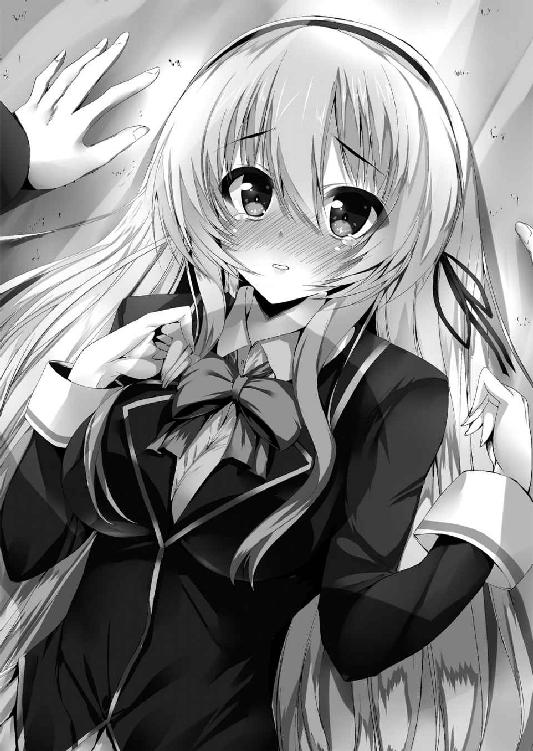
「す、すみばぜんでした......」
「はい、分かったらちょっと外行って頭冷やしてきなさい。ほら、ハァリィ、ハァリィ！ 当分帰ってきちゃダメだからね！」
先輩に急き立てられて、直輝は鳩尾を押さえながら自分の部屋から追い出される。
......何が起こったのかよく分からないけど、やっぱり織絵先輩には敵わない。心の底からそう思った。
＊ ＊ ＊
そうして直輝を部屋から追い出すと、教え子を叱る教師よろしく仁王立ちしていた織絵の肩がぷるぷると震え出す。
「......メフィ、どうしてくれるの。今の空気」
「......いや、すまん。さすがの妾もあんなに颯爽とお前の化けの皮が剥がれるとは思わなんだ。というか、耐性ないクセに大人女子アピールするのはもはや限界なんじゃなかろうかと賢明な妾はアドバイスしたい」
「しょ、しょーがないじゃないっ。だって直輝クンの好きな本にそういうのがたくさん書いてあるんだからっ」
「は？ 直輝の好きな本？ ......それはひょっとして初めて会った時に直輝が持っていたエロ本のことか？」
「そーよ！ これよ、この本よっ」
そう言う織絵のバッグの中からなぜか出てきたのは大人なゲームのノベライズ本、その名も『聖処女学園２～上手に出来たら先輩からのえっちなご褒美♡～』である。
「......ちょっと待て。なぜお前はそんな本を所持している？ どこでどうやって手に入れた？」
「買ってきたのよ、駅前の本屋さんで！ もう恥ずかしくて死んじゃうかと思ったけど、我慢して頑張って泣きそうになりながら！ 男の店員さんだと恥ずかしいからレジが女の人になるまで待ちに待って、でもいざ買おうと思ったら、そもそも棚から本を出すのが無理なことに気がついて涙目で右往左往の三時間っ。終いには万引き犯に間違われかけたけど、でもその甲斐あってこの本に記述された恋愛テクニックで直輝クンはもうわたしにメロメロ間違いなしっ。そうでしょ？」
織絵の本気の目にメフィは絶句。くらっと眩暈で倒れそうになるのを堪えて全力でツッコむ。
「あ、あほかーっ！ どこの世界にエロ本から恋愛学ぼうとする女子がいる!? どーりで経験ないクセにノンブレーキな誘惑ばっかりすると思ったわ！ 常識で考えろ、常識で！ もっと真っ当な普通のアプローチがあるじゃろが！」
「──ああ、でも今ので直輝クンの中の余裕たっぷり大人な先輩のわたしのイメージにヒビが入ったかも......っ、どうしてくれるのよ、ばかメフィーっ」
相棒の諫言など聞く耳持たず、織絵はベッドでジタバタと暴れ出す。こうなると長いことはメフィも経験上知っている。直輝を追い出したのは冷静な判断だったと言えるだろう。
「いや、しかしそこじゃない。そこじゃないぞ、我が主よ......っ」
この経験ゼロなクセにいい格好しいの見栄っ張り女子はちゃんと恋愛していけるのだろうか......と苦労性なヒヨコはこれからの同棲生活を思って途方に暮れた。
＊ ＊ ＊
男子寮を出た後、とりあえず帰りに購買でティラミスを買って先輩のご機嫌を窺おう、と思いつつ薄曇りの下を直輝は大学部に向かって歩いた。ちょうど用事があったのだ。
放課後の歩道は生徒たちの姿もまばらで静かなものだった。爆破騒ぎや会長との戦いもまるでなかったかのように思える。
ちなみに学園のど真ん中で会長が『天空の大車輪』を顕現したことで、特保はその火消しで上を下への大騒ぎだったらしい。会長の共鳴結界は異常なほど強力だが、さすがに真っ昼間では人払いに特保のフォローが必要になるようだ。
「......今日もいるのかな、琉音」
大学部のアリーナと学生会館の前で直輝は足を止めた。そこには無残に崩れ落ちた元大桟橋の瓦礫が山となっている。時計塔の周辺はすべて共鳴結界で修復されたのだが、唯一ハイドが『終止符の地平』後に破壊したここだけは崩壊したままだった。
ただ、幸い飛び降り騒ぎの後から橋は閉鎖されていたので死傷者は出なかったらしい。学園は公式に老朽化による自然倒壊と発表していた。
「あ、直輝さーん、ここだよ、ここ！」
立ち入り禁止のロープの向こうから琉音が手を振っているのに気づいて、直輝もそちらに歩いていく。
「やっぱりここで瓦礫の片付けしてたんだ。今日こそ俺も手伝うよ」
「ううん、いいからあたしにやらせて。この橋が壊れちゃったのは全部あたしのせいだから......。ちゃんとした業者さんがきたら邪魔になっちゃうだろうけど、せめて出来ることはあたしが自分の手でやりたいの」
琉音は事件が終わってから連日ここで一人、瓦礫の片付けをしていた。偽典による治療は受けたものの、まだ怪我も治りきっていないはずなので直輝としては心配で仕方ない。
「......何度も言うけど、この橋の倒壊は別に琉音のせいじゃないよ。やったのはハイドだし、責任があるとすれば止められなかった俺にある」
「ううん、あたしの責任です。だってあの子はあたし自身だし、今だってここにいるはずだもん」
自分の胸に手を当てて、琉音は少し淋しそうにそう言った。
──結局、琉音の中にハイドの残滓は残らなかった。『ジキルとハイド』から剣を引き抜いた時点ですでに賭けだったのだが、やはり折れかかった剣では望んだ効果は得られなかったのだ。
「......ごめん、俺の力不足で」
「え、そんな、直輝さんが謝ることじゃないよっ。......それにさ、ひょっとしたらあの子は自分から消えたんじゃないかって、ちょっと思うんだ」
「ハイドが自分から？」
「......うん。変かな？」
直輝としては、琉音はハイドをもっと憎んだりしても不思議じゃないと思うのだが、どうやらそんな簡単なものではないらしい。琉音はあの時ハイドが消えていくのを止めたいと願ったし、考えてみるとハイドの方もやりかたはともかくとして、どこかで琉音を思いやっているような節があった。
「......琉音がそう言うならそうなのかもしれない。ハイドが消えたおかげで琉音はこうして学園に留まれることになったわけだし、あいつは天邪鬼だったから......そういうこともしたかもしれない」
今回の爆破事件の保持者は琉音ではあるが、それはすべて幻想偽典の暴走によるものとして処理された。実行犯であった仮想人格のハイドが消失していることで、他の保持者たちにも面目が立ったらしい。本人は責任を感じているが、対外的には琉音は今回の事件の被害者という立ち位置でなんとか落ち着いた。
その最終的な判断を下したのは、執行部の長である会長である。
「......ありがと、直輝さん」
小さな声でそう言うと、琉音は背中を向けて作業を続けた。その肩が少し震えていることに直輝は気づく。事件を起こされたり、人格を消されかけたりしたが、それでも琉音にとってのハイドは自分の半身だったのかもしれない。それは逆にハイドにとっても。
少し想像してみようとしたが......彼女たちの心情は直輝には分からなかった。その気持ちはやはり当人たちだけのものだろう。
「あのさ、琉音はこれから......どうする？」
「......んー、そうだね。とりあえず今日は花壇の手入れをしてるんだ。瓦礫の下敷きになっちゃったのも多いんだけど、残ってる子たちは植え替えてあげればもうすぐ花が咲くはずだから。──っ。......ほら、この辺とかもう咲き始めてる」
「いや、今日のことじゃなくて、その......」
一瞬、琉音の言葉に間があったことに気づきながら、どう言ったらいいかと直輝は口ごもる。ハイドの消失と共に幻想偽典『ジキルとハイド』もこの世から消えてしまった。
......そう、琉音の幻想偽典はもうこの世には存在しないのだ。
会長のようになりたい、と言っていた琉音の夢はこれで完全に絶たれてしまったことになる。さらには偽典を失ったことで支援部からも除名されたと聞いている。
「目指すよ、執行部」
「え？」
直輝が訊き返すと、琉音は目の前の花壇をいじりながら言葉を続けた。
「武器を持って立ち向かうだけが戦いじゃない、って教えてくれたのは直輝さんじゃん。だったら幻想偽典を持たない執行部員がいたっておかしくないよ。あたしが最初の一人になればいいんだ。もちろん、会長さんみたいになるためじゃない。会長さん以上の執行部員になるために、あたしはあたしの七色を咲かせるために、執行部を目指すよ」
「......そっか。さすが琉音だ」
「ふふー、でしょでしょ？」
振り返った琉音は満面の笑みを見せた。その表情が眩しくて直輝は目を細める。目指す頂きは高いかもしれない。でも琉音なら大丈夫だと思った。自分も協力するし、織絵先輩もきっと手助けしてくれる。あとは......。
するとその時、背後からジャリッと瓦礫の破片を踏む音がした。
振り返ると、そこにいたのはちょうど直輝が思い浮かべた人物──天上寺紋芽会長その人だった。直輝の方だけを見て、会長は言う。
「......日比野直輝。貴方を明日付けで正式なリセリア学園生徒会の執行部員として任命します。執行部員となれば貴方の妹の安全も保障されるでしょう。今後は執行部の方針を変える予定なので忙しくなる。放課後は生徒会室にて業務に就くように。以上です」
「え、あのっ、会長......それだけですか？ その、琉音と話とか......」
「私の用件はそれだけです」
「いやちょっと待って下さいっ」
言うだけ言ってすぐに立ち去ろうとする会長を直輝は慌てて呼び止める。振り向いた会長と琉音の目が合い、微妙な沈黙が降りた。口火を切ったのは、琉音だ。
「あたしはそれだけじゃ納得しないよ。......会長さん、こっちきて屈んで」
「なんでしょう？ 私に土下座でもさせる気ですか」
「もうっ、そんなことさせるわけないでしょ、いいからっ。......はい、出来たよ」
「これは......」
会長の髪には再びあの髪飾りが結わえられていた。他ならぬ琉音の手によって。
「色々あったけど、これで仲直りっ。......ダメかな？」
にっこりと琉音が微笑む。会長はそれに対して......驚いたことにひどく狼狽していた。傍から見ていていっそ微笑ましくなるくらいの動揺がその顔に浮かぶ。
「し、しかし琉音、私は......貴女をぶっ殺しかけました。日比野直輝たちがいなければ、普通に死んでたはずです」
「うわ、なんでそんな言いづらいこと自分から言っちゃうかな......っ。そういうのは言わぬが花だよ？」
会長のストレートな物言いに直輝も聞いていてちょっと引いたが、......しかし年下の琉音に対して意外なほどおどおどしている会長の表情を見て、時に冷酷に見えるこの人の在り方は......単に不器用さの裏返しなのでは、と気づく。そしてそれは付き合いの長い琉音の方が熟知してるようだった。
「あたしもいっぱい迷惑かけちゃったし、だから拳で熱く語り合った的な感じでいいんじゃないかな？ しかもほら、勝ったのあたしだしっ。強者は弱者に寛容でないと！」
「いや、待ちなさいっ。あれは多勢に無勢だ。それで私の負けというのはあまりに納得がいかないっ」
「ダメでーす！ 勝負は一回きりなんだよ？」
はしゃぎ出した琉音とそれに翻弄される会長を見て、直輝は苦笑しながら琉音がいじっていた花壇の方へと目を向ける。そしてふと違和感に気づいた。
（あれ......？ あんな色の花あるか......？）
そこに咲く花は、おぼろげながら輝いているように見えた。その花弁が持つ色は──虹のような七色だ。
（改良種とか？ いや、そもそも琉音がいじってた辺りの花は植え替えたばっかでさっきは咲いてもいなかった気が......）
その時、ふいに風に乗って誰かの声が聞こえた気がした。
『──あなたの正義が一人の少女を救ったんです』
え、と目を瞬かせたところに、いきなり会長がこちらに近寄って耳打ちしてきた。
「時に日比野直輝、私は一度交わした約束は守る殊勝なる者だ」
「や、約束？ なんですか、それ？」
いきなりむにっと何か柔らかいものが二の腕に当たって一気に意識がそっちへ向く。胸だ。会長の胸だ。織絵先輩ほどのボリュームではないが、代わりに洗練された形の良さが制服越しにもはっきりと伝わってくる。
「と、とぼけた振りはやめなさい。もしも貴方が我が『永劫回帰』を破ったならこの身を捧げると言った約束です。ゆえにもはや私はいつ何時、貴方の滾る欲望にこの身を蹂躙されても文句は言えない。......感謝なさい、私は自慢のくるぶしを貴方に絶賛される用意があるっ」
「はいっ!? なんでくるぶし!? 発言の意図が掴めませんっ」
「あーっ、直輝さんが浮気してる！ 織絵さんに報告してやろーっ」
「だ、琉音、ちがっ、これは違う！ お願いだからこのタイミングで先輩に変なこと言わないでっ！」
そんな騒ぎでさっきの花と声のことをすっかり忘れてしまっていた。もしかしたら、琉音に何かの力が......と後になって少し気になったが、あまりに妄想じみているので本人に訊くのはやめておいた。
ただ、それでも気になってしばらく後に図書室で調べてみたところ、やっぱり七色の品種なんてないこと、そしてその花につけられている学名を知って、狐に摘まれたような気分になった。
大桟橋の瓦礫の中で琉音が触れていた雨を待って咲く花、あれは──紫陽花と言うらしい。
《It is an end here."Jekyll & Hyde"》
あとがき
お久しぶりです、あるいは初めまして、永菜葉一です。
先日、数年ぶりに歯医者に行ったところ、隣のお子さんが号泣していて「ああ、自分も昔はこうだったなぁ」と懐かしくなりました。いいかい、少年。今はドリルが怖いかもしれない。だが君もいずれ大人になれば──ギュイーンッ、ぎゃぁぁぁっ！
奥様聞きまして？ 永菜さんってば、新年早々お医者先生から「子供の頃からドリルの音聞くと真顔になるよねぇ」って笑われたらしいですよ？ 成長ナッシング。
ごめん少年、やっぱ大人になってもドリルは怖いや！ 大丈夫、隣の大人もちょっと涙目だから恥ずかしくないぜ！
さて、それでは今回登場した大著の見どころを......と思ったのですが、それやったら壮大なネタばれになることに今気づきました。オー、ジーザス。
あ、ちなみに本編で引用をさせて頂いた本について、例によってあとがきの後に参考文献の記載があるんですが、それ見ても一発アウトなので超お気をつけ下さい。どこに地雷があるか分からんで。
仕方ないので代わりに本編で繰り広げられたベストバウトの紹介を一つ。
今回一番熱い戦いは十九世紀の裏社交界でブイブイ言わせてた椿姫と、オペラやフラメンコでお馴染みザ・魔性であるカルメンさんのガチバトル・キャットファイトです。
それは、えろイズパワー！ ヤラしさこそ戦闘力！ へへ、旦那、正直十八禁ですぜ？
だいたい本当です。──書いてないけどね！
大人になるってなんだろうと我に返ったところで、謝辞を。
輝く太陽の如く永菜を見守って下さっている、編集長Ｎ様。いつもご面倒をお掛けしてすみません、どこまでもついていきます、担当Ｓ様。いつも素敵なイラストで永菜の胸をトキメかせてくれる能都くるみ様。本っ当に毎度お世話になってます、校正様。この本の出版に関わって下さったすべての皆様。そして今このページの前にいる、あなた様。
ありがとうございます！ 皆様のおかげで今日も永菜は歯医者でドリルと戦えます！
それでは、出来ましたらまた次巻で。
永菜 葉一
○参考文献一覧
・『ジーキル博士とハイド氏』スティーヴンソン作、海保眞夫訳、岩波書店、２０００年
・『ファウスト 第二部』ゲーテ著、相良守峰訳、岩波書店、２０１１年
・『ツァラトゥストラはこう言った（上）』ニーチェ著、氷上英廣訳、岩波書店、１９８９年
・『ツァラトゥストラはこう言った（下）』ニーチェ著、氷上英廣訳、岩波書店、２００４年
アリストテレスの幻想偽典
2．時空支配の歯車
永菜葉一
平成25年3月25日 発行
発行者 山下直久
発行所 株式会社富士見書房
〒102-8144 東京都千代田区富士見1-12-14
http://www.fujimishobo.co.jp/
(C)2013 Youichi Nagana, Kurumi Noto/Fujimishobo